The 20 Major Functions of Healthy KidneysAng 20 Pangunahing Tungkulin ng Malusog na BatoAng 20 ka Panguna nga Gimbuhaton sa Maayong KidneyIng 20 Maragul a Tungkulin ning Malusug a Kidney
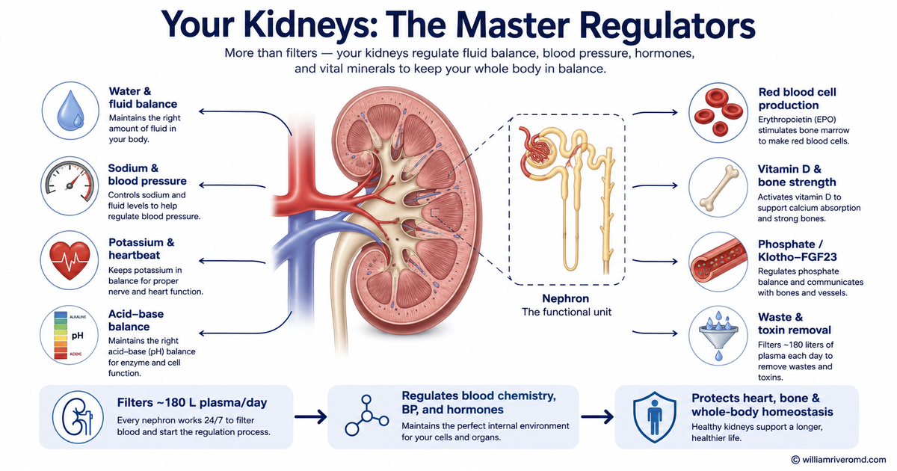
The kidney is not just a filter — it is a central regulator. It filters ~180 L of plasma a day, regulates blood chemistry, blood pressure, and hormones, and protects the heart, bones, and whole-body balance.
Most people think kidneys just make urine. In reality healthy kidneys are intelligent regulators doing at least twenty distinct jobs every second. Here they are at a glance.Karamihan sa tao ay nag-iisip na ang bato ay gumagawa lamang ng ihi. Sa katotohanan, ang malusog na bato ay mga matalinong regulador na gumaganap ng hindi bababa sa dalawampung natatanging gawain bawat segundo. Narito ang mga ito sa isang tingin.Kadaghanan sa mga tawo naghunahuna nga ang kidney maghimo lang og ihi. Sa tinuod, ang maayong kidney mao ang mga intelihenteng regulador nga naghimo og labing menos kawhaan ka lainlaing trabaho matag segundo. Ania kini sa usa ka sulyap.Kalaki sa mga tao iniisip da ing kidney gumagawa lang urine. Sa katunayan, ing malusug a kidney maragul a regulador a gumagawa king duwampulu a natatanging trabahu king bawat segundo. Ania ila keti.
Remove waste productsAlisin ang mga basura ng katawanPagtangtang sa mga basura sa lawasAlisin ing mga basura ning katawan
Eliminate toxins and medicationsAlisin ang mga lason at gamotPagtangtang sa mga lason ug medisinaAlisin ing mga lason at gamut
Maintain fluid balancePangalagaan ang balanse ng likido sa katawanPagpadayon sa balanse sa tubig sa lawasPangalagaan ing balanse ning likidu king katawan
Regulate sodiumKontrolin ang sodiumPag-regulasyon sa sodiumKontrolin ing sodium
Regulate potassiumKontrolin ang potassiumPag-regulasyon sa potassiumKontrolin ing potassium
Regulate calcium and phosphorusKontrolin ang calcium at phosphorusPag-regulasyon sa calcium ug phosphorusKontrolin ing calcium at phosphorus
Regulate magnesiumKontrolin ang magnesiumPag-regulasyon sa magnesiumKontrolin ing magnesium
Maintain acid-base balancePangalagaan ang balanse ng acid at basePagpadayon sa balanse sa acid-basePangalagaan ing balanse ning acid at base
Control blood pressureKontrolin ang presyon ng dugoPagkontrol sa presyon sa dugoKontrolin ing presyon ning dugu
Produce erythropoietin (EPO)Gumawa ng erythropoietin (EPO)Paghimo og erythropoietin (EPO)Gumawa ning erythropoietin (EPO)
Produce reninGumawa ng reninPaghimo og reninGumawa ning renin
Activate vitamin DI-activate ang vitamin DPag-aktibo sa vitamin DI-activate ing vitamin D
Produce KlothoGumawa ng KlothoPaghimo og KlothoGumawa ning Klotho
Protect bonesPangalagaan ang mga butoPagpanalipod sa mga bukogPangalagaan ing mga buto
Concentrate and dilute urinePalakasin o palabnawin ang ihiPagkonsentrar ug pagpabana sa ihiPalakasin o palabnawin ing ihi
Produce glucose during fastingGumawa ng glucose habang nag-aayunoPaghimo og glucose atol sa pag-ayoGumawa ning glucose king panahon ning pag-ayuno
Support immune functionSuportahan ang immune functionPagsuporta sa immune functionSuportahan ing immune function
Sense oxygen levelsMaramdaman ang antas ng oxygenPagbati sa lebel sa oxygenMaramdaman ing antas ning oxygen
Protect the heart and blood vesselsPangalagaan ang puso at mga daluyan ng dugoPagpanalipod sa kasingkasing ug mga ugat sa dugoPangalagaan ing puso at mga ugat ning dugu
Maintain overall balance (homeostasis)Pangalagaan ang pangkalahatang balanse (homeostasis)Pagpadayon sa kinatibuk-ang balanse (homeostasis)Pangalagaan ing pangkalahatang balanse (homeostasis)
The Nephron: The Functional Unit of the KidneyAng Nephron: Ang Pangunahing Yunit ng BatoAng Nephron: Ang Punoan nga Yunit sa KidneyIng Nephron: Ing Pangunahing Yunit ning Kidney

Every function in this guide is carried out by specialized segments of the nephron — about one million per kidney — working together.
Each kidney contains about one million nephrons. Every function in this guide is performed by specialized regions of the nephron working together. Here is what each part does.Ang bawat bato ay naglalaman ng humigit-kumulang isang milyong nephron. Ang bawat tungkulin sa gabay na ito ay ginagampanan ng mga espesyalisadong rehiyon ng nephron na nagtatrabaho nang magkasama. Narito kung ano ang ginagawa ng bawat bahagi.Ang matag kidney adunay mga usa ka milyon ka nephron. Ang matag gimbuhaton sa giya nga kini gihimo sa espesyalizado nga mga rehiyon sa nephron nga nagtinabangay. Ania kung unsa ang gibuhat sa matag bahin.Ing bawat kidney maglaman king mga isang milyong nephron. Bawat tungkulin king giyong iti ginagawa ning espesyalisadong mga bahagi ning nephron a nagtutulungan. Ania ing ginagawa ning bawat bahagi.
GlomerulusGlomerulusGlomerulusGlomerulus
Primary filtration unit; a tuft of capillaries where blood is filtered across a three-layer barrier into Bowman's space.Pangunahing yunit ng pagsala; isang bungkos ng mga kapilaryao kung saan ang dugo ay sinasala sa pamamagitan ng tatlong-layer na hadlang patungo sa Bowman's space.Punoan nga yunit sa pagsala; usa ka bugkos sa mga kapilaryao diin ang dugo gisala sa usa ka tulo ka layer nga babag ngadto sa Bowman's space.Pangunahing yunit ning pagsala; isang bungkos ning mga kapilaryao a king dian ang dugu sinasala king tatlong-layer a hadlang papunta king Bowman's space.
Proximal TubuleProximal TubuleProximal TubuleProximal Tubule
The metabolic powerhouse: bulk reabsorption of water, salt, and glucose, gluconeogenesis, and ammoniagenesis (new bicarbonate).Ang metabolikong sentro ng lakas: malaking muling pagsipsip ng tubig, asin, at glucose, gluconeogenesis, at ammoniagenesis (bagong bicarbonate).Ang metabolikong sentro sa gahum: dako nga reabsorbsiyon sa tubig, asin, ug glucose, gluconeogenesis, ug ammoniagenesis (bag-ong bicarbonate).Ing metabolikong sentro ning lakas: malaking muling pagsipsip ning tubig, asin, at glucose, gluconeogenesis, at ammoniagenesis (bagung bicarbonate).
Loop of HenleLoop of HenleLoop of HenleLoop of Henle
Countercurrent multiplication builds the medullary osmotic gradient that allows urine concentration.Ang countercurrent multiplication ay nagtatayo ng medullary osmotic gradient na nagpapahintulot sa pagkonsentrasyon ng ihi.Ang countercurrent multiplication nagtukod sa medullary osmotic gradient nga nagtugot sa pagkonsentrar sa ihi.Ing countercurrent multiplication gumagawa king medullary osmotic gradient a nagpapahintulut king pagkonsentrasyon ning ihi.
Distal Convoluted TubuleDistal Convoluted TubuleDistal Convoluted TubuleDistal Convoluted Tubule
Fine-tuning of sodium, calcium, and magnesium via NCC and regulated calcium transport.Pinong pag-aayos ng sodium, calcium, at magnesium sa pamamagitan ng NCC at regulated calcium transport.Pinong pag-adjust sa sodium, calcium, ug magnesium pinaagi sa NCC ug regulated calcium transport.Pinong pag-ayos ning sodium, calcium, at magnesium king pamagi ning NCC at regulated calcium transport.
Collecting DuctCollecting DuctCollecting DuctCollecting Duct
Final water regulation (ADH/aquaporins), acid-base handling, and potassium and aldosterone-driven sodium balance — sets final urine composition.Panghuling regulasyon ng tubig (ADH/aquaporins), pamamahala ng acid-base, at balanse ng potassium at sodium na pinapatakbo ng aldosterone — nagtatakda ng panghuling komposisyon ng ihi.Katapusang regulasyon sa tubig (ADH/aquaporins), pagdumala sa acid-base, ug balanse sa potassium ug sodium nga gipalihok sa aldosterone — nagbutang sa katapusang komposisyon sa ihi.Panghuling regulasyon ning tubig (ADH/aquaporins), pamamahala ning acid-base, at balanse ning potassium at sodium a pinapatakbo ning aldosterone — nagtakda king panghuling komposisyon ning ihi.
Juxtaglomerular ApparatusJuxtaglomerular ApparatusJuxtaglomerular ApparatusJuxtaglomerular Apparatus
Renin production and blood-pressure/GFR sensing (tubuloglomerular feedback).Paggawa ng renin at pagtuklas ng presyon ng dugo/GFR (tubuloglomerular feedback).Paghimo sa renin ug pagbati sa presyon sa dugo/GFR (tubuloglomerular feedback).Paggawa ning renin at pagtuklas ning presyon ning dugu/GFR (tubuloglomerular feedback).
InterstitiumInterstitiumInterstitiumInterstitium
Erythropoietin production and oxygen sensing by specialized interstitial cells.Paggawa ng erythropoietin at pagtuklas ng oxygen ng mga espesyalisadong interstitial cells.Paghimo sa erythropoietin ug pagbati sa oxygen sa mga espesyalizado nga interstitial cells.Paggawa ning erythropoietin at pagtuklas ning oxygen ning mga espesyalisadong interstitial cells.
Waste Removal: Your Body's Natural Filtration SystemPag-aalis ng Basura: Ang Natural na Sistema ng Pag-filter ng Iyong KatawanPagtangtang sa Basura: Ang Natural nga Sistema sa Pag-filter sa Imong LawasPagtanggal ning Basura: Ang Natural a Sistema ning Pag-filter ning Iyong Katawan
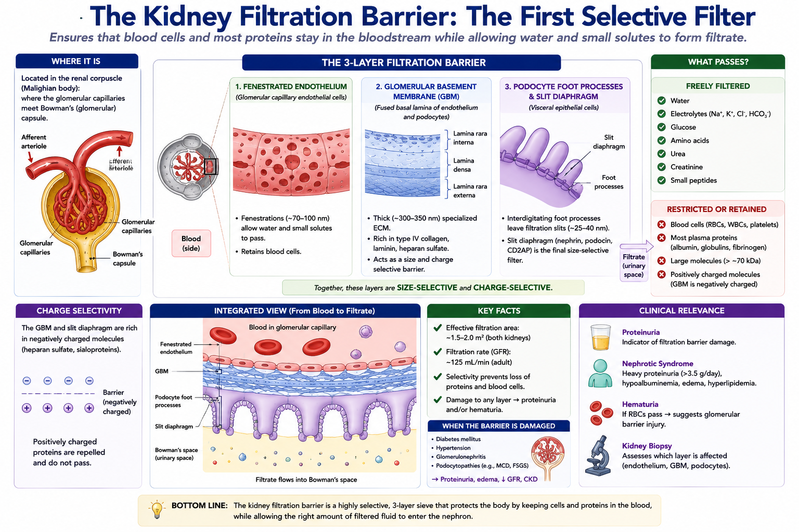
The three-layer glomerular filter passes water and small wastes into the urine while holding back blood cells and proteins — about 180 L of plasma filtered every day.
Your kidneys work around the clock to remove harmful waste products — including urea, creatinine, and uric acid — that build up as your body burns energy. Without this continuous clean-up, these substances would accumulate in your blood and poison every organ in your body. Think of your kidneys as a tireless, highly precise filtration plant running 24 hours a day.Ang iyong mga bato ay nagtatrabaho nang walang tigil upang alisin ang mga mapanganib na produkto ng basura — kabilang ang urea, creatinine, at uric acid — na nag-iipon habang ang iyong katawan ay nag-iinit. Kung wala ang patuloy na paglilinis na ito, ang mga substansyang ito ay maaaring mag-ipon sa iyong dugo at lason ang bawat organo sa iyong katawan. Isipin ang iyong mga bato bilang isang walang pagod at napaka-tumpak na planta ng pag-filter na nagtatakbo nang 24 na oras sa isang araw.Ang imong mga kidney nagtrabaho sa tibuok adlaw aron tangtangon ang makadaot nga mga produkto sa basura — lakip ang urea, creatinine, ug uric acid — nga nagtipon samtang ang imong lawas nag-inom ug enerhiya. Kung wala kini nga padayon nga paglimpyo, kini nga mga substansya mahimong mag-ipon sa imong dugo ug hulaton ang matag organo sa imong lawas. Hunahunaa ang imong mga kidney ingon usa ka walay kapoy, hilabihang tukma nga planta sa pag-filter nga nagdagan 24 ka oras sa usa ka adlaw.Ing iyong mga bato magobra king buong oras para tanggalin ing mapanganib a mga basura — kasali na ing urea, creatinine, at uric acid — a nagtitipun habang ing iyong katawan nagsusunog ning enerhiya. Kung wala ining tuluy-tuloy a paglinis, karing mga substansya makapagtipon king iyong dugo at makaracun king bawat organo ning iyong katawan. Isipan ing iyong mga bato bilang isang walang pagod at napaka-tumpak a planta ning pag-filter a nagtatakbo 24 oras sa isang araw.
How It WorksPaano Ito GumaganaUnsaon Kini PaglihokPaano Ini Gumagana
Blood enters the glomerulus through the afferent arteriole and is pushed across a three-layer filtration barrier: (1) the fenestrated glomerular endothelium, (2) the glomerular basement membrane, and (3) the podocyte slit diaphragm. Hydrostatic pressure drives water and small solutes — including waste products — into Bowman's space, while blood cells and proteins are retained. About 180 liters of plasma are filtered every day. The tubules then reclaim useful substances, leaving the concentrated wastes behind as urine. Urea is filtered and partially reabsorbed (it also builds the medullary concentration gradient); creatinine is filtered and slightly secreted; uric acid undergoes a complex cycle of filtration, reabsorption, secretion, and reabsorption.Ang dugo ay pumapasok sa glomerulus sa pamamagitan ng afferent arteriole at itinulak sa tatlong-layer na hadlang ng pag-filter: (1) ang fenestrated glomerular endothelium, (2) ang glomerular basement membrane, at (3) ang podocyte slit diaphragm. Ang hydrostatic pressure ay nagtutulak ng tubig at maliliit na solute — kasama ang mga produkto ng basura — papunta sa Bowman's space, habang ang mga selula ng dugo at protina ay pinapanatili. Humigit-kumulang 180 litro ng plasma ang nifi-filter araw-araw. Ang mga tubule ay nagbabawi ng mga kapaki-pakinabang na substansya, iniiwan ang mga konsentradong basura bilang ihi. Ang urea ay nafi-filter at bahagyang nare-reabsorb; ang creatinine ay nafi-filter at bahagyang nasesecrete; ang uric acid ay dumadaan sa kumplikadong siklo ng filtrasyon, reabsorpyon, secretion, at reabsorpyon.Ang dugo mosulod sa glomerulus pinaagi sa afferent arteriole ug giduso sa tulo ka-layer nga babag sa pag-filter: (1) ang fenestrated glomerular endothelium, (2) ang glomerular basement membrane, ug (3) ang podocyte slit diaphragm. Ang hydrostatic pressure nagduso sa tubig ug gagmay nga mga solute — lakip ang mga produkto sa basura — ngadto sa Bowman's space, samtang ang mga selula sa dugo ug mga protina gitipigan. Mga 180 litro sa plasma ang gi-filter matag adlaw. Ang mga tubule dayon mangbawi sa mapuslanon nga mga substansya, ibilin ang mga konsentradong basura ingon ihi. Ang urea gi-filter ug bahin gi-reabsorb; ang creatinine gi-filter ug gamay gi-secreted; ang uric acid moagi sa komplikadong siklo sa filtrasyon, reabsorpyon, secretion, ug reabsorpyon.Ing dugo pumapasok king glomerulus king pamamagitan ning afferent arteriole at itinulak sa tatlong-layer a hadlang ning pag-filter: (1) ing fenestrated glomerular endothelium, (2) ing glomerular basement membrane, at (3) ing podocyte slit diaphragm. Ing hydrostatic pressure nagtutulak ning tubig at maliliit a mga solute — kasama na ing mga basura — papunta king Bowman's space, habang ing mga selula ning dugo at protina napapanatili. Mga 180 litro ning plasma ang nifi-filter araaldaw. Ing mga tubule karing mapaki-pakinabang a substansya bawiin, iiwan ing mga konsentradong basura bilang ihi. Ing urea nafi-filter at bahagyang nare-reabsorb; ing creatinine nafi-filter at kadiit nasesecrete; ing uric acid dumaraos king kumplikadong siklo ning filtrasyon, reabsorpyon, secretion, at reabsorpyon.
Why It MattersBakit Ito MahalagaNgano Kini ImportanteBakit Ini Mahalaga
If waste products are not removed, they build up in the blood and act like a slow poison — affecting your brain, heart, skin, nerves, and every other organ. Clean blood is the foundation of good health. This is why even a modest decline in kidney function can make you feel tired, mentally foggy, and unwell long before more serious problems appear.Kung ang mga produkto ng basura ay hindi tinanggal, nag-iipon ang mga ito sa dugo at kumikilos tulad ng mabagal na lason — nakakaapekto sa iyong utak, puso, balat, ugat, at bawat iba pang organo. Ang malinis na dugo ang pundasyon ng magandang kalusugan. Kaya naman ang kahit maliit na pagbaba ng function ng bato ay maaaring magpahirap sa iyo, magpaaantok sa iyong isipan, at magparamdam ng hindi mabuti bago pa man lumabas ang mas malubhang mga problema.Kung ang mga produkto sa basura dili tangtangon, nagtipun kini sa dugo ug naglihok sama sa hinay nga hilo — nakaapekto sa imong utok, kasingkasing, panit, nerbiyo, ug sa matag laing organo. Ang limpyo nga dugo mao ang pundasyon sa maayong kahimsog. Mao kini ang hinungdan nga bisan ang gamay nga pagkunhod sa function sa kidney makapahimo kanimo nga mabati nga pagod, maglibog ang hunahuna, ug dili maayo sa wala pa moanhi ang mas grabe nga mga problema.Kung ing mga basura ali tanggalin, nagtitipon karing king dugo at kumikilos bilang mabagal a racun — nakakaapekto king iyong utak, puso, balat, ugat, at bawat ibang organo. Ing malinis a dugo ing pundasyon ning maliwanag a kalusugan. Kaya naman buwis mang maliit a pagbaba ning function ning bato ay maaaring magpahirap keka, magpalibag king iyong isipan, at magparamdam ning ali mahal bagu pa man lumabas ing mas malubhang mga problema.
When This Function FailsKapag Nabigo ang Function na ItoKung Mapakyas Kining FunctionKapag Nabigo Ining Function
As kidney disease progresses and the glomerular filtration rate (GFR) declines, waste products accumulate in the blood — a condition called uremia. This causes profound fatigue, loss of appetite, nausea, persistent itching (pruritus), and cognitive slowing ("brain fog"). In advanced stages, waste build-up becomes life-threatening without dialysis or transplantation.Habang lumalala ang sakit sa bato at bumababa ang glomerular filtration rate (GFR), nag-iipon ang mga produkto ng basura sa dugo — isang kondisyon na tinatawag na uremia. Nagdudulot ito ng matinding pagod, pagkawala ng gana sa pagkain, pagduduwal, patuloy na pangangati (pruritus), at pagbagal ng pag-iisip ("brain fog"). Sa mga advanced na yugto, ang pag-iipon ng basura ay nagiging nagbabanta sa buhay kung walang dialysis o transplantasyon.Samtang nagkaggrabe ang sakit sa kidney ug nagkunhod ang glomerular filtration rate (GFR), nagtipun ang mga produkto sa basura sa dugo — usa ka kondisyon nga gitawag ug uremia. Kini nagpahinabo sa grabe nga pagkapagod, pagkawala sa gana sa pagkaon, pagsuka, padayon nga pangangihi (pruritus), ug paghinay sa pag-iisip ("brain fog"). Sa advanced nga mga yugto, ang pagtipon sa basura mahimong nagpadangat sa kinabuhi kung walay dialysis o transplantasyon.Habang lumala ing sakit king bato at bumaba ing glomerular filtration rate (GFR), nagtitipon ing mga basura king dugo — isang kondisyon a tawag uremia. Ito ay nagdudulot ning malalim a pagod, pagkawala ning ganang kumain, pagduduwal, patuloy a pangati (pruritus), at pagbagal ning pag-iisip ("brain fog"). King mga advanced a yugto, ing pagtipon ning basura magiging nagbabanta king buhay kung wala ing dialysis o transplantasyon.
Key TakeawayPangunahing AralPanguna nga LeksyonPangunahing Aral
Healthy kidneys continuously remove waste that would otherwise poison the body.Ang malusog na mga bato ay patuloy na nag-aalis ng basura na kung hindi ay maglalagay ng lason sa katawan.Ang himsog nga mga kidney padayon nga nagtangtang sa basura nga kung dili mahimong makaracun sa lawas.Ing malusog a mga bato tuluy-tuloy a nagtanggal ning basura a kung hindi ay makaracun king katawan.
Removing Medications and ToxinsPag-aalis ng mga Gamot at LasonPagtangtang sa mga Tambal ug HiloPagtanggal ning mga Gamut at Racun
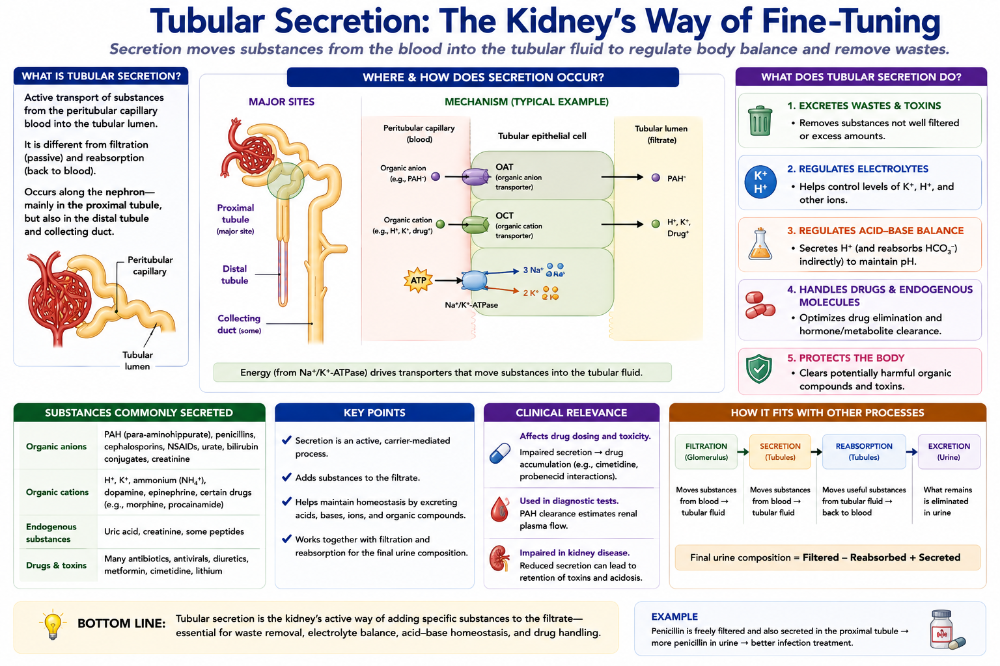
Specialized proximal-tubule transporters (OAT, OCT, P-glycoprotein) actively secrete drugs and toxins — clearing them even when filtration alone is not enough. This is why doses are adjusted in CKD.
Every time you take a medication — an antibiotic, a blood-pressure pill, or even a painkiller — your kidneys are responsible for clearing it safely from your blood. They also eliminate environmental toxins and contrast dyes used in medical imaging. This remarkable ability protects you from drug build-up and keeps prescribed medicines working as intended.Sa tuwing uminom ka ng gamot — isang antibiotic, isang tableta para sa presyon ng dugo, o kahit isang pansamantalang pampakilig — ang iyong mga bato ang responsable sa ligtas na pagtanggal nito mula sa iyong dugo. Inaalis din nila ang mga panligalig mula sa kapaligiran at contrast dye na ginagamit sa medical imaging. Ang kahanga-hangang kakayahang ito ay nagpoprotekta sa iyo mula sa pag-iipon ng gamot at tinitiyak na ang mga inireseta na gamot ay gumagana tulad ng inilaan.Sa matag higayon nga moinom ka ug tambal — usa ka antibiotic, usa ka tableta alang sa presyon sa dugo, o bisan usa ka pampakilig — ang imong mga kidney ang responsable sa luwas nga pagtangtang niini gikan sa imong dugo. Gitangtang usab nila ang mga hilo gikan sa palibot ug contrast dye nga gigamit sa medical imaging. Kining talagsaong kakayahan nagpanalipod kanimo gikan sa pagtipon sa tambal ug nagpasiguro nga ang mga gireseta nga tambal nagtrabaho sama sa giintensyon.Sa bawat beses a uminom ka ning gamut — isang antibiotic, isang tableta para king presyon ning dugo, o maging isang pampakilig — ing iyong mga bato ing responsable king ligtas a pagtanggal nito mula king iyong dugo. Tinatanggal da nila ing mga racun mula king kapaligiran at contrast dye a ginagamit king medical imaging. Ining kahanga-hangang kakayahan nagpoprotekta keka mula king pagtipon ning gamut at tinitiyak a ing mga inireseta a gamut gumagana kaku nang inilaan.
How It WorksPaano Ito GumaganaUnsaon Kini PaglihokPaano Ini Gumagana
Drugs that are not bound to proteins are freely filtered at the glomerulus. However, the proximal tubule goes further — it actively secretes toxins and drugs from the surrounding blood into the tubular fluid using specialized transport proteins: Organic Anion Transporters (OAT) handle penicillins, diuretics, and uric acid; Organic Cation Transporters (OCT) handle metformin and other cationic drugs; and P-glycoprotein efflux pumps export many foreign chemicals (xenobiotics). This active secretion system allows the kidney to eliminate drugs even when filtration alone would be insufficient.Ang mga gamot na hindi nakatali sa mga protina ay malaya na nafi-filter sa glomerulus. Gayunpaman, ang proximal tubule ay nagpupunta pa nang higit pa — aktibo nitong sinisecrete ang mga lason at gamot mula sa nakapaligid na dugo papunta sa tubular fluid gamit ang mga espesyal na protina ng transportasyon: Organic Anion Transporters (OAT) ang namamahala ng penicillins, diuretics, at uric acid; Organic Cation Transporters (OCT) ang namamahala ng metformin at iba pang cationic na gamot; at P-glycoprotein efflux pumps ang nag-eexport ng maraming dayuhang kemikal (xenobiotics). Ang aktibong sistema ng secretion na ito ay nagbibigay-daan sa bato na maalis ang mga gamot kahit kailan ang filtrasyon lamang ay hindi sapat.Ang mga tambal nga wala nagbugkos sa mga protina libre nga gi-filter sa glomerulus. Apan, ang proximal tubule nagpadayon pa — aktibo kining nagsecrete sa mga hilo ug tambal gikan sa nakapaligid nga dugo ngadto sa tubular fluid gamit ang mga espesyal nga protina sa transportasyon: Organic Anion Transporters (OAT) ang nagdumala sa penicillins, diuretics, ug uric acid; Organic Cation Transporters (OCT) ang nagdumala sa metformin ug uban pang cationic nga tambal; ug P-glycoprotein efflux pumps ang nag-export sa daghang langyaw nga kemikal (xenobiotics). Kining aktibong sistema sa secretion nagpahintulot sa kidney nga mawagtang ang mga tambal bisan kanus-a ang filtrasyon lamang dili igo.Ing mga gamut a ali nakatali king mga protina malaya a nafi-filter king glomerulus. Gayunpaman, ing proximal tubule nagpupunta pa — aktibo nitong sinisecrete ing mga racun at gamut mula king nakapaligid a dugo papunta king tubular fluid gamit ing mga espesyal a protina ning transportasyon: Organic Anion Transporters (OAT) ing namamahala ning penicillins, diuretics, at uric acid; Organic Cation Transporters (OCT) ing namamahala ning metformin at iba pang cationic a gamut; at P-glycoprotein efflux pumps ing nag-eexport ning daming dayuhang kemikal (xenobiotics). Ining aktibong sistema ning secretion nagbibigay-daan king bato a tanggalin ing mga gamut bisan kailan ing filtrasyon lamang ali sapat.
Why It MattersBakit Ito MahalagaNgano Kini ImportanteBakit Ini Mahalaga
Many of the most commonly used medications — antibiotics, antivirals, blood thinners, diabetes drugs like metformin, and painkillers — rely on healthy kidneys to be eliminated safely. When kidney function declines, these drugs linger in the body longer than intended, raising the risk of serious side effects and toxicity. This is exactly why your doctor adjusts medication doses when your kidney function is reduced — it is not optional, it is essential for your safety.Marami sa mga pinaka-karaniwang ginagamit na gamot — antibiotics, antivirals, mga pampanitik ng dugo, mga gamot sa diyabetes tulad ng metformin, at mga pampakilig — ay umaasa sa malusog na mga bato upang maalis nang ligtas. Kapag bumaba ang function ng bato, ang mga gamot na ito ay nananatili sa katawan nang mas matagal kaysa sa inilaan, na nagpapataas ng panganib ng malubhang epekto at toxicity. Ito ang eksaktong dahilan kung bakit inaayos ng iyong doktor ang dosis ng gamot kapag nabawasan ang function ng iyong bato — hindi ito opsyonal, mahalaga ito para sa iyong kaligtasan.Daghang sa kasagarang gigamit nga mga tambal — antibiotics, antivirals, mga pampanitik sa dugo, mga tambal sa diabetes sama sa metformin, ug mga pampakilig — nagsalig sa himsog nga mga kidney aron matangtang nga luwas. Kung magkunhod ang function sa kidney, kini nga mga tambal nagpabilin sa lawas og mas dugay kaysa sa giintensyon, nagpataas sa peligro sa grabe nga mga side effects ug toxicity. Mao kini ang eksaktong rason kung ngano nag-aayos ang imong doktor sa dosis sa tambal kung nagkunhod ang function sa imong kidney — kini dili opsyonal, kini importante alang sa imong kaligtasan.Daming sa mga pinaka-karaniwang ginagamit a gamut — antibiotics, antivirals, mga pampanitik ning dugo, mga gamut king diabetes kang metformin, at mga pampakilig — umaasa king malusog a mga bato para matanggal nang ligtas. Kapag bumaba ing function ning bato, karing mga gamut nananatili king katawan nang mas matagal kaysa inilaan, nagpapataas ning peligro ning malubhang epekto at toxicity. Ito ing eksaktong dahilan kung bakit inaayos ning iyong doktor ing dosis ning gamut kapag nabawasan ing function ning iyong bato — ali ito opsyonal, mahalaga ito para king iyong kaligtasan.
When This Function FailsKapag Nabigo ang Function na ItoKung Mapakyas Kining FunctionKapag Nabigo Ining Function
When drug clearance is reduced, medications accumulate to toxic levels. Antibiotics like gentamicin can damage hearing and kidneys further. Metformin can cause dangerous lactic acidosis. Anticoagulants like rivaroxaban can cause uncontrolled bleeding. NSAIDs (pain medicines) can accelerate kidney damage. This is why every medication dose must be reviewed — and often reduced — when you have CKD. Never start or stop a medicine without telling your kidney doctor.Kapag nabawasan ang pag-aalis ng gamot, nag-iipon ang mga gamot sa mga antas na nakakalason. Ang mga antibiotic tulad ng gentamicin ay maaaring magpahina ng pandinig at karagdagang makapinsala sa mga bato. Ang metformin ay maaaring magdulot ng mapanganib na lactic acidosis. Ang mga anticoagulant tulad ng rivaroxaban ay maaaring magdulot ng hindi mapigilan na pagdurugo. Ang mga NSAID (mga gamot sa sakit) ay maaaring mapabilis ang pinsala sa bato. Kaya naman ang bawat dosis ng gamot ay dapat suriin — at madalas ay bawasan — kapag mayroon kang CKD. Huwag magsimula o huminto sa gamot nang hindi sinasabi sa iyong doktor ng bato.Kung maminsan ang pag-aalis sa tambal, nagtipon ang mga tambal sa nakakalason nga mga lebel. Ang mga antibiotic sama sa gentamicin mahimong makadaot sa pandungog ug dugang pa makasamad sa mga kidney. Ang metformin mahimong mosangpot sa makadangat nga lactic acidosis. Ang mga anticoagulant sama sa rivaroxaban mahimong mosangpot sa dili mapugngan nga pagdugo. Ang mga NSAID (mga tambal sa sakit) mahimong makapadali sa kadaot sa kidney. Mao kini ang rason ngano ang matag dosis sa tambal kinahanglang surion — ug kasagaran maminusan — kung ikaw adunay CKD. Ayaw pagsugod o paghunong sa tambal nga dili isulti sa imong kidney doctor.Kapag nabawasan ing pag-aalis ning gamut, nagtitipon ing mga gamut king mga antas a nakakalason. Ing mga antibiotic kang gentamicin maaaring magpahina ning pandingig at karagdagang makapinsala king mga bato. Ing metformin maaaring magdulot ning mapanganib a lactic acidosis. Ing mga anticoagulant kang rivaroxaban maaaring magdulot ning ali mapigilan a pagdurugo. Ing mga NSAID (mga gamut king sakit) maaaring mapabilis ing pinsala king bato. Kaya naman ing bawat dosis ning gamut ay dapat suriin — at madalas ay bawasan — kapag may CKD ka. Huwag magsimula o huminto king gamut nang ali sasabihan ing iyong doktor ning bato.
Key TakeawayPangunahing AralPanguna nga LeksyonPangunahing Aral
Many medications depend on healthy kidneys for safe elimination.Maraming mga gamot ay umaasa sa malusog na mga bato para sa ligtas na pag-aalis.Daghang mga tambal nagsalig sa himsog nga mga kidney alang sa luwas nga pagtangtang.Daming mga gamut umaasa king malusog a mga bato para king ligtas a pagtanggal.
Controlling Water BalancePagkontrol ng Balanse ng TubigPagkontrolar sa Balanse sa TubigPagkontrol ning Balanse ning Tubig
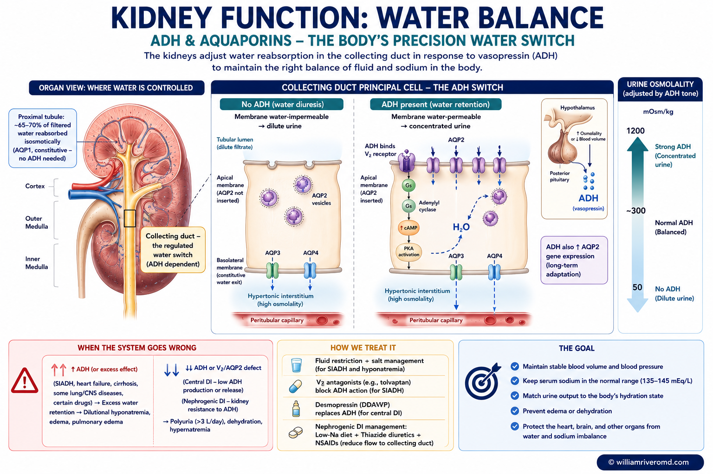
The kidney's water switch: ADH inserts aquaporin-2 channels in the collecting duct to reabsorb water. Too little water excretion causes edema and hyponatremia; too much causes polyuria and dehydration.
Your kidneys decide, minute by minute, how much water your body keeps and how much it releases as urine. Whether you drink too much or too little, your kidneys adapt to keep your blood volume and concentration exactly where they need to be. This precise water management protects your heart, brain, and every cell in your body.Ang iyong mga bato ay nagpapasya, minuto sa minuto, kung gaano karaming tubig ang pinapanatili ng iyong katawan at gaano karami ang inilalabas bilang ihi. Kahit uminom ka nang masyadong marami o masyadong kaunti, nag-aaayos ang iyong mga bato upang mapanatili ang dami at konsentrasyon ng iyong dugo sa eksaktong tamang antas. Ang tumpak na pamamahala ng tubig na ito ay nagpoprotekta sa iyong puso, utak, at bawat selula ng iyong katawan.Ang imong mga kidney nagdesisyon, minuto sa minuto, kung pila ka tubig ang gipadayon sa imong lawas ug pila ang gibuhat niya aron ipagawas ingon ihi. Bisan moinom ka ug daghan kaayo o gamay kaayo, nag-adapt ang imong mga kidney aron mapanatili ang dami ug konsentrasyon sa imong dugo sa eksakto nga tamang lebel. Kini nga tukma nga pagdumala sa tubig nagpanalipod sa imong kasingkasing, utok, ug sa matag selula sa imong lawas.Ing iyong mga bato nagpapasya, minuto king minuto, kung magkanu a tubig ing pinapanatili ning iyong katawan at magkanu ing inilalabas bilang ihi. Bisan uminom ka nang masyadong marami o masyadong kadiit, nag-aaayos ing iyong mga bato para mapanatili ing dami at konsentrasyon ning iyong dugo king eksaktong tamang antas. Ining tumpak a pamamahala ning tubig nagpoprotekta king iyong puso, utak, at bawat selula ning iyong katawan.
How It WorksPaano Ito GumaganaUnsaon Kini PaglihokPaano Ini Gumagana
The kidney filters about 180 liters of plasma daily, but nearly all of it is reclaimed. The proximal tubule reabsorbs 65–70% of filtered water isosmotically (alongside sodium and solutes). The Loop of Henle builds a high-concentration salt gradient in the kidney's inner tissue (the medullary gradient) that is essential for water recovery. Final, precise regulation happens in the collecting duct, controlled by the hormone vasopressin (ADH): when the body needs to retain water, ADH is released from the brain, binds to V2 receptors on collecting-duct cells, and triggers the insertion of aquaporin-2 (AQP2) water channels into the cell membrane. Water flows in through AQP2, then exits the cell via AQP3/AQP4 channels on the other side, re-entering the bloodstream through the hypertonic medulla.Ang bato ay nagfi-filter ng humigit-kumulang 180 litro ng plasma araw-araw, ngunit halos lahat nito ay nababawi. Ang proximal tubule ay nag-reabsorb ng 65–70% ng na-filter na tubig nang isosmotically (kasabay ng sodium at mga solute). Ang Loop of Henle ay nagtatayo ng mataas na konsentrasyon na gradient ng asin sa panloob na tisyu ng bato (ang medullary gradient) na mahalaga para sa pagbawi ng tubig. Ang panghuling, tumpak na regulasyon ay nangyayari sa collecting duct, na kontrolado ng hormone na vasopressin (ADH): kapag kailangan ng katawan na mapanatili ang tubig, ang ADH ay inilalabas mula sa utak, nagbibigkis sa V2 receptors sa mga selula ng collecting duct, at nagti-trigger ng pagpasok ng mga aquaporin-2 (AQP2) na channel ng tubig sa cell membrane. Ang tubig ay dumadaloy sa pamamagitan ng AQP2, pagkatapos ay lumalabas sa selula sa pamamagitan ng mga channel ng AQP3/AQP4 sa kabilang panig, na bumabalik sa agos ng dugo sa pamamagitan ng hypertonic medulla.Ang kidney nagfilter og mga 180 litro sa plasma matag adlaw, apan halos tanan niini gi-reclaim. Ang proximal tubule nag-reabsorb og 65–70% sa na-filter nga tubig nang isosmotically (uban sa sodium ug mga solute). Ang Loop of Henle nagpatukod og taas nga konsentrasyon nga gradient sa asin sulod sa internal nga tisyu sa kidney (ang medullary gradient) nga importante para sa pagbawi sa tubig. Ang katapusan, tukma nga regulasyon nahitabo sa collecting duct, gikontrol sa hormone nga vasopressin (ADH): kung ang lawas nagkinahanglan sa pagtipig sa tubig, ang ADH gibuhat gikan sa utok, nagbugkos sa V2 receptors sa mga selula sa collecting duct, ug nagtrigger sa pagsal-ot sa mga aquaporin-2 (AQP2) nga channel sa tubig ngadto sa cell membrane. Ang tubig molabay pinaagi sa AQP2, unya mogawas sa selula pinaagi sa mga channel sa AQP3/AQP4 sa pikas bahin, mibalik sa agos sa dugo pinaagi sa hypertonic medulla.Ing bato nagfi-filter ning mga 180 litro ning plasma araaldaw, ngunit halos lahat nito nababawi. Ing proximal tubule nag-reabsorb ning 65–70% ning na-filter a tubig nang isosmotically (kasabay ning sodium at mga solute). Ing Loop of Henle nagtatayo ning mataas a konsentrasyon a gradient ning asin king panloob a tisyu ning bato (ing medullary gradient) a mahalaga para king pagbawi ning tubig. Ing panghuling, tumpak a regulasyon nangyayari king collecting duct, kontrolado ning hormone a vasopressin (ADH): kapag kailangan ning katawan a mapanatili ing tubig, ing ADH inilalabas mula king utak, nagbibigkis king V2 receptors king mga selula ning collecting duct, at nagti-trigger ning pagpasok ning mga aquaporin-2 (AQP2) a channel ning tubig king cell membrane. Ing tubig dumaraos king pamamagitan ning AQP2, pagkatapos lumalabas king selula king pamamagitan ning mga channel ning AQP3/AQP4 king kabilang panig, bumabalik king agos ning dugo king pamamagitan ning hypertonic medulla.
Why It MattersBakit Ito MahalagaNgano Kini ImportanteBakit Ini Mahalaga
Without precise water regulation, blood volume would swing dangerously — too much fluid would flood the tissues and lungs, while too little would leave the body dehydrated and the blood too concentrated. Your kidneys adjust to what you drink and to your body's changing needs, so you stay balanced whether it is a hot day, a strenuous workout, or a day of rest.Kung wala ang tumpak na regulasyon ng tubig, ang dami ng dugo ay mapanganib na mag-akyat at bababa — ang masyadong maraming likido ay magbabaha sa mga tisyu at baga, habang ang masyadong kaunti ay mag-iiwan sa katawan na dehydrated at ang dugo ay masyadong konsentrado. Ang iyong mga bato ay nag-aadjust sa iyong iniinom at sa nagbabagong pangangailangan ng iyong katawan, kaya naman mananatili kang balanse kahit mainit na araw, matinding ehersisyo, o araw ng pahinga.Kung wala ang tukma nga regulasyon sa tubig, ang dami sa dugo magbag-o nga makadangat — ang sobrang tubig magpuli sa mga tisyu ug baga, samtang ang sobrang gamay magbilin sa lawas nga dehydrated ug ang dugo sobrang konsentrado. Ang imong mga kidney nag-adjust sa imong giinom ug sa nagbabag-o nga mga kinahanglan sa imong lawas, busa magpabilin ka nga balanse bisan init nga adlaw, grabe nga ehersisyo, o adlaw sa pahinga.Kung wala ing tumpak a regulasyon ning tubig, ing dami ning dugo mapanganib a magbago — ing masyadong maraming likido ay magbabaha king mga tisyu at baga, habang ing masyadong kadiit ay mag-iiwan king katawan a dehydrated at ing dugo ay masyadong konsentrado. Ing iyong mga bato nag-aadjust king iyong iniinom at king nagbabagong pangangailangan ning iyong katawan, kaya naman mananatili kang balanse bisan mainit a araw, matinding ehersisyo, o araw ning pahinga.
When This Function FailsKapag Nabigo ang Function na ItoKung Mapakyas Kining FunctionKapag Nabigo Ining Function
If the kidneys cannot excrete enough water, fluid accumulates in the legs (edema), abdomen (ascites), and lungs (pulmonary edema) — causing dangerous breathlessness. Blood pressure rises. Sodium becomes diluted (hyponatremia), which can cause confusion and seizures. Conversely, if the kidneys lose the ability to concentrate urine, large volumes are excreted (polyuria), leading to dehydration and excessively high sodium (hypernatremia).Kung hindi makapag-excrete ang mga bato ng sapat na tubig, nag-iipon ang likido sa mga binti (edema), tiyan (ascites), at baga (pulmonary edema) — nagdudulot ng mapanganib na hirap sa paghinga. Tumataas ang presyon ng dugo. Nagiging konti ang sodium (hyponatremia), na maaaring magdulot ng pagkalito at seizure. Sa kabaligtaran, kung nawawalan ang mga bato ng kakayahang mag-concentrate ng ihi, malaking dami ang naibubukod (polyuria), na humahantong sa dehydration at masyadong mataas na sodium (hypernatremia).Kung ang mga kidney dili makalikwid og igo nga tubig, nagtipon ang likido sa mga bitiis (edema), tiyan (ascites), ug baga (pulmonary edema) — nagpahinabo sa makadangat nga kakapoy sa pagginhawa. Nagtubo ang presyon sa dugo. Ang sodium nahimong konsentrado og gamay (hyponatremia), nga mahimong mosangpot sa kalibog ug seizure. Sa sukwahi, kung nawad-an ang mga kidney sa kakayahan nga mag-concentrate sa ihi, dagko nga gidaghanon ang naibubukod (polyuria), nagdala sa dehydration ug sobrang taas nga sodium (hypernatremia).Kung ali makapag-excrete ing mga bato ning sapat a tubig, nagtitipon ing likido king mga binti (edema), tiyan (ascites), at baga (pulmonary edema) — nagdudulot ning mapanganib a hirap king paghinga. Tumataas ing presyon ning dugo. Nagiging konti ing sodium (hyponatremia), a maaaring magdulot ning pagkalito at seizure. King kabaligtaran, kung nawawalan ing mga bato ning kakayahang mag-concentrate ning ihi, malaking dami ing naibubukod (polyuria), humahantong king dehydration at masyadong mataas a sodium (hypernatremia).
Key TakeawayPangunahing AralPanguna nga LeksyonPangunahing Aral
Your kidneys are your body's water managers.Ang iyong mga bato ang tagapamahala ng tubig ng iyong katawan.Ang imong mga kidney mao ang tagdumala sa tubig sa imong lawas.Ing iyong mga bato ing tagapamahala ning tubig ning iyong katawan.
Regulating Sodium: The Foundation of Blood PressurePag-regulate ng Sodium: Ang Pundasyon ng Presyon ng DugoPag-regulate sa Sodium: Ang Pundasyon sa Presyon sa DugoPag-regulate ning Sodium: Ing Pundasyon ning Presyon ning Dugo
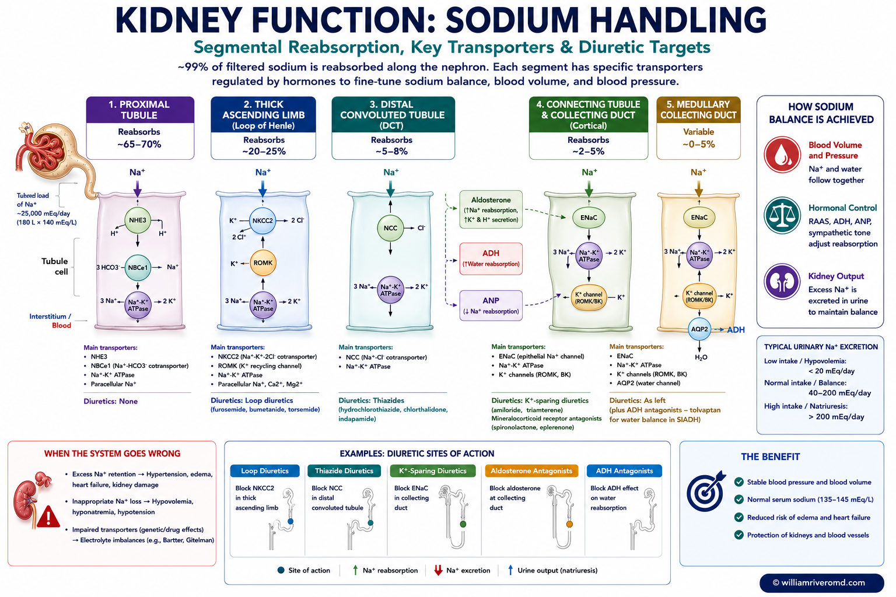
Sodium is reabsorbed segment by segment via NHE3, NKCC2, NCC, and ENaC — the same transporters diuretics target. Retention drives hypertension and edema; salt-wasting causes hypovolemia.
Salt (sodium) is the main mineral that determines how much fluid your body holds and therefore how high your blood pressure is. Your kidneys control salt balance with extraordinary precision, acting as the primary long-term governor of your blood pressure. No other organ in the body has this much influence over blood pressure over time.Ang asin (sodium) ang pangunahing mineral na tumutukoy kung gaano karaming likido ang hawak ng iyong katawan at samakatuwid kung gaano kataas ang iyong presyon ng dugo. Kinokontrol ng iyong mga bato ang balanse ng asin nang may pambihirang katumpakan, gumaganap bilang pangunahing pangmatagalang gobernador ng iyong presyon ng dugo. Walang ibang organo sa katawan ang may ganitong impluwensiya sa presyon ng dugo sa paglipas ng panahon.Ang asin (sodium) mao ang panguna nga mineral nga nagtino kung pila ka likido ang gihuptan sa imong lawas ug busa kung pila kataas ang imong presyon sa dugo. Ang imong mga kidney nagkontrol sa balanse sa asin nga adunay talagsaong katukma, naglihok ingon pangunahing pangsubo-sobra nga gobernador sa imong presyon sa dugo. Walay laing organo sa lawas ang adunay kini ka impluwensiya sa presyon sa dugo sa paglabay sa panahon.Ing asin (sodium) ing pangunahing mineral a nagtatukoy kung magkanu a likido ing hawak ning iyong katawan at samakatuwid kung gaano kataas ing iyong presyon ning dugo. Kinokontrol ning iyong mga bato ing balanse ning asin nang may pambihirang katumpakan, gumaganap bilang pangunahing pangmatagalang gobernador ning iyong presyon ning dugo. Wala ibang organo king katawan ing may ganyang impluwensiya king presyon ning dugo king paglipas ning panahon.
How It WorksPaano Ito GumaganaUnsaon Kini PaglihokPaano Ini Gumagana
Sodium handling is distributed across four nephron segments, each with its own transporter: (1) Proximal tubule reabsorbs 65–70% of filtered sodium via NHE3 (sodium-hydrogen exchanger), SGLT2 (sodium-glucose cotransporter), and sodium–amino acid cotransporters. (2) Thick ascending limb of Henle reabsorbs ~25% via NKCC2, generating a lumen-positive electrical charge that also drives calcium and magnesium reabsorption. (3) Distal convoluted tubule reabsorbs sodium chloride via NCC. (4) Collecting duct makes the final fine-tuning: sodium enters principal cells through ENaC channels, a process stimulated by the hormone aldosterone. Together, these segments reclaim virtually all the filtered sodium, leaving only what the body needs to excrete.Ang pamamahala ng sodium ay ipinamamahagi sa apat na bahagi ng nephron, bawat isa ay may sariling transporter: (1) Proximal tubule ay nag-reabsorb ng 65–70% ng na-filter na sodium sa pamamagitan ng NHE3 (sodium-hydrogen exchanger), SGLT2 (sodium-glucose cotransporter), at sodium–amino acid cotransporters. (2) Thick ascending limb of Henle ay nag-reabsorb ng ~25% sa pamamagitan ng NKCC2, na nagtatayo ng positibong electrical charge sa lumen na nagpapatakbo rin ng reabsorpsyon ng calcium at magnesium. (3) Distal convoluted tubule ay nag-reabsorb ng sodium chloride sa pamamagitan ng NCC. (4) Collecting duct ang gumagawa ng panghuling fine-tuning: ang sodium ay pumapasok sa mga principal cell sa pamamagitan ng mga channel ng ENaC, isang proseso na pinasigla ng hormone na aldosterone. Magkasama, ang mga bahaging ito ay nagbabawi ng halos lahat ng na-filter na sodium, iniiwan lamang ang kailangan ng katawan na ilabas.Ang pagdumala sa sodium giphatod sa upat ka bahin sa nephron, ang matag usa adunay kaugalingong transporter: (1) Proximal tubule nag-reabsorb og 65–70% sa na-filter nga sodium pinaagi sa NHE3 (sodium-hydrogen exchanger), SGLT2 (sodium-glucose cotransporter), ug sodium–amino acid cotransporters. (2) Thick ascending limb of Henle nag-reabsorb og ~25% pinaagi sa NKCC2, nagpatukod sa positibong electrical charge sa lumen nga nagpaandar usab sa reabsorpsyon sa calcium ug magnesium. (3) Distal convoluted tubule nag-reabsorb sa sodium chloride pinaagi sa NCC. (4) Collecting duct ang naghimo sa katapusan nga fine-tuning: ang sodium mosulod sa mga principal cell pinaagi sa mga channel sa ENaC, usa ka proseso nga gipasiugdahan sa hormone nga aldosterone. Magkasama, kini nga mga bahin nagbawi sa halos tanan sa na-filter nga sodium, inibilin lamang ang gikinahanglan sa lawas nga ilabas.Ing pamamahala ning sodium ipinamamahagi king apat a bahagi ning nephron, bawat isa ay may sariling transporter: (1) Proximal tubule nag-reabsorb ning 65–70% ning na-filter a sodium king pamamagitan ning NHE3 (sodium-hydrogen exchanger), SGLT2 (sodium-glucose cotransporter), at sodium–amino acid cotransporters. (2) Thick ascending limb of Henle nag-reabsorb ning ~25% king pamamagitan ning NKCC2, nagtatayo ning positibong electrical charge king lumen a nagpapatakbo da ning reabsorpsyon ning calcium at magnesium. (3) Distal convoluted tubule nag-reabsorb ning sodium chloride king pamamagitan ning NCC. (4) Collecting duct ing gumagawa ning panghuling fine-tuning: ing sodium pumapasok king mga principal cell king pamamagitan ning mga channel ning ENaC, isang proseso a pinasigla ning hormone a aldosterone. Magkasama, karing mga bahagi nagbabawi ning halos lahat ning na-filter a sodium, iniiwan lamang ing kailangan ning katawan a ilabas.
Why It MattersBakit Ito MahalagaNgano Kini ImportanteBakit Ini Mahalaga
Unlike the heart or blood vessels, which react to blood pressure changes in seconds, the kidneys control blood pressure over hours, days, and years by adjusting how much sodium (and therefore fluid) stays in the body. Even a small, sustained change in kidney sodium handling shifts long-term blood pressure. This is why nearly every patient with CKD develops high blood pressure — and why reducing salt in your diet directly protects your kidneys and heart.Hindi tulad ng puso o mga daluyan ng dugo, na tumatugon sa mga pagbabago ng presyon ng dugo sa loob ng ilang segundo, ang mga bato ay kinokontrol ang presyon ng dugo sa loob ng mga oras, araw, at taon sa pamamagitan ng pag-aayos kung gaano karaming sodium (at samakatuwid ay likido) ang nananatili sa katawan. Kahit isang maliit, tuluy-tuloy na pagbabago sa pamamahala ng sodium ng bato ay nagbabago ng pangmatagalang presyon ng dugo. Kaya naman halos bawat pasyente na may CKD ay nagkakaroon ng mataas na presyon ng dugo — at kung bakit ang pagbabawas ng asin sa iyong diyeta ay direktang nagpoprotekta sa iyong mga bato at puso.Dili sama sa kasingkasing o mga ugat sa dugo, nga nag-react sa mga pagbabag-o sa presyon sa dugo sulod sa pipila ka segundo, ang mga kidney nagkontrol sa presyon sa dugo sulod sa mga oras, adlaw, ug tuig pinaagi sa pag-adjust kung pila sodium (ug busa likido) ang nagpabilin sa lawas. Bisan usa ka gamay, padayon nga pagbabago sa pagdumala sa sodium sa kidney nagbag-o sa pangsubo-sobra nga presyon sa dugo. Mao kini ang hinungdan nga halos matag pasyente nga adunay CKD nagpatunhay ug taas nga presyon sa dugo — ug ngano ang pagpagamay sa asin sa imong pagkaon direkta nagpanalipod sa imong mga kidney ug kasingkasing.Ali katulad ning puso o mga daluyan ning dugo, a tumatugon king mga pagbabago ning presyon ning dugo king loob ning ilang segundo, ing mga bato kinokontrol ing presyon ning dugo king loob ning mga oras, araw, at taon king pamamagitan ning pag-aayos kung magkanu a sodium (at samakatuwid likido) ing nananatili king katawan. Bisan isang maliit, tuluy-tuloy a pagbabago king pamamahala ning sodium ning bato nagbabago ning pangmatagalang presyon ning dugo. Kaya naman halos bawat pasyente a may CKD nagkakaroon ning mataas a presyon ning dugo — at kung bakit ing pagbabawas ning asin king iyong diyeta direktang nagpoprotekta king iyong mga bato at puso.
When This Function FailsKapag Nabigo ang Function na ItoKung Mapakyas Kining FunctionKapag Nabigo Ining Function
When damaged kidneys retain too much sodium, fluid overload follows: swelling in the legs and face, breathlessness, worsening heart failure, and persistently high blood pressure that is difficult to control even with multiple medications. In rare cases where the kidney loses too much sodium (salt-wasting), blood volume drops, causing low blood pressure and dizziness. For most CKD patients, sodium retention is the dominant problem — making a low-salt diet one of the most important self-care steps.Kapag ang mga nasirang bato ay nagtatago ng masyadong maraming sodium, sumusunod ang fluid overload: pamamaga sa mga binti at mukha, paghinga ng hirap, paglala ng pagpalya ng puso, at patuloy na mataas na presyon ng dugo na mahirap kontrolin kahit sa maraming gamot. Sa mga bihirang kaso kung saan ang bato ay nawawalan ng masyadong maraming sodium (salt-wasting), bumababa ang dami ng dugo, na nagdudulot ng mababang presyon ng dugo at pagkahilo. Para sa karamihan ng mga pasyente ng CKD, ang pagtitipon ng sodium ang pangunahing problema — na ginagawang isa sa mga pinakamahalaga na hakbang sa pag-aalaga sa sarili ang pagkain na may mababang asin.Kung ang mga nadaot nga kidney nagpadayon og daghang sodium, mosunod ang fluid overload: pamuong sa mga bitiis ug nawong, kakapoy sa pagginhawa, pagkaggrabe sa pagpalya sa kasingkasing, ug padayon nga taas nga presyon sa dugo nga lisod kontrolon bisan sa daghang tambal. Sa bihirang mga kaso kung diin ang kidney nawad-an og daghang sodium (salt-wasting), ang dami sa dugo mokunhod, nagpahinabo sa ubos nga presyon sa dugo ug pagkahilo. Alang sa kadaghanan sa mga pasyente sa CKD, ang pagtipon sa sodium mao ang panguna nga problema — nagpahimo sa pagkaon nga gamay og asin ingon usa sa labing importante nga mga lakang sa pag-atiman sa kaugalingon.Kapag ing mga nasirang bato nagtatago ning masyadong maraming sodium, sumusunod ing fluid overload: pamamaga king mga binti at mukha, paghinga ning hirap, paglala ning pagpalya ning puso, at patuloy a mataas a presyon ning dugo a mahirap kontrolin bisan sa maraming gamut. King mga bihirang kaso kung saan ing bato nawawalan ning masyadong maraming sodium (salt-wasting), bumababa ing dami ning dugo, nagdudulot ning mababang presyon ning dugo at pagkahilo. Para king karamihan ning mga pasyente ning CKD, ing pagtitipon ning sodium ing pangunahing problema — ginagawang isa king mga pinakamahalaga a hakbang king pag-aalaga king sarili ing pagkain a may mababang asin.
Key TakeawayPangunahing AralPanguna nga LeksyonPangunahing Aral
Kidneys are the primary long-term controllers of blood pressure.Ang mga bato ang pangunahing pangmatagalang kontroler ng presyon ng dugo.Ang mga kidney mao ang panguna nga pangsubo-sobra nga kontrolador sa presyon sa dugo.Ing mga bato ing pangunahing pangmatagalang kontroler ning presyon ning dugo.
Regulating Potassium: Protecting Your HeartbeatPag-regulate ng Potassium: Pagprotekta sa Iyong Tibok ng PusoPag-regulate sa Potassium: Pagpanalipod sa Imong Tibok sa KasingkasingPag-regulate ning Potassium: Pagprotekta king Iyong Tibok ning Puso
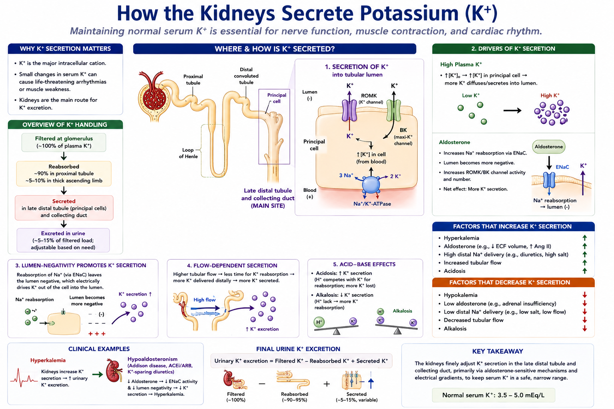
The collecting duct sets final potassium balance — secreting it through ROMK/BK channels to protect the heart's rhythm from both high and low potassium.
Potassium is the mineral that controls the electrical signals your heart uses to beat. Too much or too little — even a small deviation — can disrupt the heart's rhythm, and in severe cases trigger a life-threatening cardiac arrest. Your kidneys maintain potassium within an incredibly narrow safe range every minute of every day, making this one of their most critical responsibilities.Ang potassium ang mineral na nagkokontrol sa mga electrical signal na ginagamit ng iyong puso upang tumibok. Masyadong marami o masyadong kaunti — kahit isang maliit na paglihis — ay maaaring makaabala sa ritmo ng puso, at sa malubhang kaso ay maaaring magdulot ng mapanganib sa buhay na cardiac arrest. Pinapanatili ng iyong mga bato ang potassium sa loob ng isang napakakitid na ligtas na hanay bawat minuto ng bawat araw, na ginagawa ito bilang isa sa kanilang pinaka-kritikal na responsibilidad.Ang potassium mao ang mineral nga nagkontrol sa mga electrical signal nga gigamit sa imong kasingkasing aron motuktog. Sobrang daghan o sobrang gamay — bisan usa ka gamay nga paglahi — mahimong makaguba sa ritmo sa kasingkasing, ug sa grabe nga mga kaso mahimong magtrigger sa makadangat sa kinabuhi nga cardiac arrest. Ang imong mga kidney nagpadayon sa potassium sulod sa usa ka hilabihang hait nga luwas nga range matag minuto sa matag adlaw, nagpahimo niini nga usa sa ilang labing kritikal nga responsibilidad.Ing potassium ing mineral a nagkokontrol king mga electrical signal a ginagamit ning iyong puso para tumibok. Masyadong marami o masyadong kadiit — bisan isang maliit a paglihis — maaaring makaabala king ritmo ning puso, at king malubhang kaso maaaring magdulot ning mapanganib king buhay a cardiac arrest. Pinapanatili ning iyong mga bato ing potassium king loob ning isang napakakitid a ligtas a hanay bawat minuto ning bawat araw, ginagawa ito bilang isa king kanilang pinaka-kritikal a responsibilidad.
How It WorksPaano Ito GumaganaUnsaon Kini PaglihokPaano Ini Gumagana
Most of the potassium filtered at the glomerulus is already reabsorbed before reaching the distal nephron. The final and most important balance point is in the connecting tubule and cortical collecting duct, where two types of cells work in opposition: Principal cells secrete potassium into the tubular fluid through ROMK (renal outer medullary potassium) channels and BK (big conductance) channels. Secretion increases when aldosterone is high, when more sodium is delivered to the distal tubule, when tubular flow is fast, and when blood potassium is elevated. In contrast, intercalated cells actively reabsorb potassium via the H⁺/K⁺ ATPase pump when potassium is low, reclaiming it to protect against depletion. This push-pull system allows the kidney to excrete a large potassium load after a banana-rich meal or conserve every milliequivalent during a fast.Karamihan sa potassium na nafi-filter sa glomerulus ay nare-reabsorb na bago maabot ang distal nephron. Ang panghuling at pinakamahalaga na punto ng balanse ay nasa connecting tubule at cortical collecting duct, kung saan dalawang uri ng mga selula ang nagtatrabaho nang salungat: Ang mga principal cell ay nagsesecrete ng potassium sa tubular fluid sa pamamagitan ng mga channel ng ROMK (renal outer medullary potassium) at BK (big conductance). Ang secretion ay tumataas kapag mataas ang aldosterone, kapag mas maraming sodium ang naihatid sa distal tubule, kapag mabilis ang tubular flow, at kapag mataas ang potassium sa dugo. Sa kabilang banda, ang mga intercalated cell ay aktibong nag-reabsorb ng potassium sa pamamagitan ng pump ng H⁺/K⁺ ATPase kapag mababa ang potassium, binabawi ito upang maprotektahan laban sa pagkaubos. Ang push-pull na sistemang ito ay nagbibigay-daan sa bato na makapag-excrete ng malaking dami ng potassium pagkatapos ng isang pagkain na mayaman sa saging o mapanatili ang bawat milliequivalent sa panahon ng pag-aayuno.Kadaghanan sa potassium nga na-filter sa glomerulus gi-reabsorb na sa wala pa moabot sa distal nephron. Ang katapusan ug labing importante nga punto sa balanse naa sa connecting tubule ug cortical collecting duct, diin duha ka tipo sa mga selula nagtrabaho sa sukwahi: Ang mga principal cell nagsecrete sa potassium ngadto sa tubular fluid pinaagi sa mga channel sa ROMK (renal outer medullary potassium) ug BK (big conductance). Ang secretion nagtubo kung taas ang aldosterone, kung daghang sodium gihatod sa distal tubule, kung paspas ang tubular flow, ug kung taas ang potassium sa dugo. Sa sukwahi, ang mga intercalated cell aktibo nag-reabsorb sa potassium pinaagi sa pump sa H⁺/K⁺ ATPase kung ubos ang potassium, gi-reclaim kini aron mapanalipdan batok sa pagkaubus. Kini nga push-pull nga sistema nagpahintulot sa kidney nga makapag-excrete og daghang potassium human sa usa ka pagkaon nga dato sa saging o makonserba ang matag milliequivalent sa panahon sa pag-ayuno.Karamihan ning potassium a nafi-filter king glomerulus nare-reabsorb na bago maabot ing distal nephron. Ing panghuling at pinakamahalaga a punto ning balanse nasa connecting tubule at cortical collecting duct, kung saan dalawang uri ning mga selula ang nagtatrabaho nang salungat: Ing mga principal cell nagsesecrete ning potassium king tubular fluid king pamamagitan ning mga channel ning ROMK (renal outer medullary potassium) at BK (big conductance). Ing secretion tumataas kapag mataas ing aldosterone, kapag mas maraming sodium ing naihatid king distal tubule, kapag mabilis ing tubular flow, at kapag mataas ing potassium king dugo. King kabilang banda, ing mga intercalated cell aktibong nag-reabsorb ning potassium king pamamagitan ning pump ning H⁺/K⁺ ATPase kapag mababa ing potassium, binabawi ito para maprotektahan laban king pagkaubos. Ining push-pull a sistema nagbibigay-daan king bato a makapag-excrete ning malaking dami ning potassium pagkatapos ning isang pagkain a mayaman king saging o mapanatili ing bawat milliequivalent king panahon ning pag-aayuno.
Why It MattersBakit Ito MahalagaNgano Kini ImportanteBakit Ini Mahalaga
Potassium controls the electrical stability of heart muscle and skeletal muscle. If it rises even slightly above the normal range, the heart's electrical conduction slows, which can lead to fatal arrhythmias. If it falls too low, muscles weaken, cramp, and can even become paralyzed. Your kidneys are the only organ capable of making the fine daily adjustments needed to keep potassium in the narrow safe zone — a role no other system can fully replace.Ang potassium ay nagkokontrol sa electrical stability ng kalamnan ng puso at ng kalamnan ng balangkas. Kung tumaas ito nang kahit kaunti sa itaas ng normal na hanay, nagbabagal ang electrical conduction ng puso, na maaaring humantong sa mga nakamamatay na arrhythmia. Kung bumaba nang masyadong mababa, humihina ang mga kalamnan, nagkakampo, at maaari pang maparalisyo. Ang iyong mga bato ang tanging organo na may kakayahang gumawa ng mga pinong araw-araw na pag-aayos na kailangan upang mapanatili ang potassium sa makitid na ligtas na zone — isang papel na walang ibang sistema ang ganap na mapapalitan.Ang potassium nagkontrol sa electrical stability sa kalamnan sa kasingkasing ug sa kalamnan sa kalansay. Kung motaas kini bisan gamay sa ibabaw sa normal nga range, naghinay ang electrical conduction sa kasingkasing, nga mahimong mosangpot sa mga makamatay nga arrhythmia. Kung moubos og sobra, nagluya ang mga kalamnan, nagkrampo, ug mahimong mabaldado. Ang imong mga kidney mao ang bugtong organo nga adunay kakayahan nga maghimo sa mga halipot nga adlaw-adlaw nga pag-adjust nga gikinahanglan aron mapadayon ang potassium sa hait nga luwas nga zone — usa ka papel nga walay laing sistema ang hingpit na makapuli.Ing potassium nagkokontrol king electrical stability ning kalamnan ning puso at ning kalamnan ning balangkas. Kung tumaas ito bisan kadiit sa itaas ning normal a hanay, nagbabagal ing electrical conduction ning puso, a maaaring humantong king mga nakamamatay a arrhythmia. Kung bumaba nang masyadong mababa, humihina ing mga kalamnan, nagkakampo, at maaari pang maparalisyo. Ing iyong mga bato ing tanging organo a may kakayahang gumawa ning mga pinong araaldaw a pag-aayos a kailangan para mapanatili ing potassium king makitid a ligtas a zone — isang papel a wala ibang sistema ing ganap a mapapalitan.
When This Function FailsKapag Nabigo ang Function na ItoKung Mapakyas Kining FunctionKapag Nabigo Ining Function
Hyperkalemia (high potassium) — the most dangerous complication of CKD — causes the heart's electrical conduction to slow progressively: peaked T-waves, widened QRS, loss of P-waves, and ultimately ventricular fibrillation or cardiac arrest. Symptoms may include muscle weakness, numbness, and palpitations, but the first sign can sometimes be sudden cardiac death. Hypokalemia (low potassium), seen with diuretics or poor intake, causes muscle weakness, cramps, constipation, ileus (bowel paralysis), and arrhythmias. Both extremes are medical emergencies requiring immediate treatment.Hyperkalemia (mataas na potassium) — ang pinaka-mapanganib na komplikasyon ng CKD — nagdudulot ng pagbabagal ng electrical conduction ng puso nang progresibo: peaked T-waves, pinalawak na QRS, pagkawala ng P-waves, at sa huli ay ventricular fibrillation o cardiac arrest. Ang mga sintomas ay maaaring magsama ng kahinaan ng kalamnan, pamamanhid, at palpitasyon, ngunit ang unang palatandaan ay maaaring minsan ay biglang pagkamatay ng puso. Ang Hypokalemia (mababang potassium), na nakikita sa mga diuretics o mahinang paggamit, ay nagdudulot ng kahinaan ng kalamnan, mga pulikat, paninigas ng dumi, ileus (paralisis ng bituka), at mga arrhythmia. Ang parehong mga sukdulan ay mga medikal na emergency na nangangailangan ng agarang paggamot.Hyperkalemia (taas nga potassium) — ang labing makadangat nga komplikasyon sa CKD — nagpahinabo sa paghinay sa electrical conduction sa kasingkasing nga progresibo: peaked T-waves, gipalapdan nga QRS, pagkawala sa P-waves, ug sa katapusan ventricular fibrillation o cardiac arrest. Ang mga sintomas mahimong magsama sa kaluya sa kalamnan, pamamanhid, ug palpitasyon, apan ang unang timaan usahay mahimong kalit nga pagkamatay sa kasingkasing. Hypokalemia (ubos nga potassium), nga nakita sa mga diuretics o ubos nga pagkonsumo, nagpahinabo sa kaluya sa kalamnan, mga pulikat, konstipasyon, ileus (paralisis sa tinai), ug mga arrhythmia. Ang duha ka ekstremidad mga medikal nga emergency nga nagkinahanglan og dayon nga pagtambal.Hyperkalemia (mataas a potassium) — ing pinaka-mapanganib a komplikasyon ning CKD — nagdudulot ning pagbabagal ning electrical conduction ning puso nang progresibo: peaked T-waves, pinalawak a QRS, pagkawala ning P-waves, at sa huli ventricular fibrillation o cardiac arrest. Ing mga sintomas maaaring magsama ning kahinaan ning kalamnan, pamamanhid, at palpitasyon, ngunit ing unang palatandaan maaaring minsan ay biglang pagkamatay ning puso. Ing Hypokalemia (mababang potassium), a nakikita sa mga diuretics o mahinang paggamit, nagdudulot ning kahinaan ning kalamnan, mga pulikat, paninigas ning dumi, ileus (paralisis ning bituka), at mga arrhythmia. Ing parehong mga sukdulan mga medikal a emergency a nangangailangan ning agarang paggamot.
Key TakeawayPangunahing AralPanguna nga LeksyonPangunahing Aral
Potassium regulation is one of the kidneys' most life-saving functions.Ang regulasyon ng potassium ay isa sa mga pinaka-nagliligtas ng buhay na function ng mga bato.Ang regulasyon sa potassium usa sa labing nagpanalipod sa kinabuhi nga function sa mga kidney.Ing regulasyon ning potassium isa king mga pinaka-nagliligtas ning buhay a function ning mga bato.
Maintaining Healthy Calcium and Phosphorus LevelsPagpapanatili ng Malusog na Antas ng Calcium at PosporoPagpaduy-ong sa Himsog nga mga Lebel sa Calcium ug PosporoPagpanatili ning Malusog a Antas ning Calcium at Phosphorus
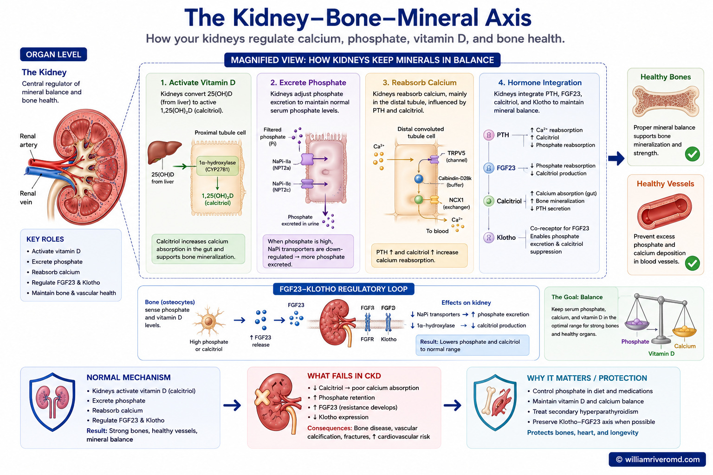
The kidney runs the calcium–phosphate–PTH–vitamin D–FGF23–Klotho axis. When it fails, the result is CKD-mineral and bone disorder (CKD-MBD) — weak bones and calcified arteries.
Your kidneys keep calcium and phosphorus in careful balance to protect your bones and blood vessels. Every day, they filter these minerals and decide exactly how much to return to your bloodstream and how much to send out in the urine. Without this precise control, bones weaken and arteries stiffen.Pinapanatili ng iyong mga bato ang calcium at posporo sa tamang balanse upang maprotektahan ang iyong mga buto at mga daluyan ng dugo. Araw-araw, sinasala nila ang mga mineral na ito at tinutukoy kung gaano karami ang ibabalik sa daloy ng dugo at kung gaano karami ang ilalabas sa ihi. Kung wala ang maingat na kontrol na ito, humihina ang mga buto at tumitigas ang mga arterya.Gibalanse sa imong mga kidney ang calcium ug posporo aron mapanalipdan ang imong mga bukog ug mga ugat sa dugo. Matag adlaw, gisala nila kini nga mga mineral ug gideterminar kung pila ang ibalik sa dugo ug pila ang ipagawas sa ihi. Kung wala kining maayong kontrol, mohumok ang mga bukog ug motig-a ang mga arterya.Iniheheld ning iyong mga kidney ing calcium at phosphorus king balanse para protektahan ing iyong mga buto at ugat ning dugo. Aldo-aldo, sinasala da ining mga mineral at tinutukuyan kung magkanu ing ibalik king agus ning dugo at kung magkanu ing palabasin king ihi. Kung ala itong tuksuyang kontrol, humulma ang mga buto at tumigás ang mga arterya.
How It WorksPaano Ito GumaganaUnsaon Kini PaglihokMakamanu Ini Gumagana
Calcium: The proximal tubule and thick ascending limb reabsorb most calcium passively. In the distal convoluted tubule, fine-tuned regulation uses the channel TRPV5, the binding protein calbindin, and the pumps NCX1 and PMCA to move calcium into the blood. Parathyroid hormone (PTH) boosts this distal reabsorption when blood calcium is low. Phosphorus: Reabsorbed mainly in the proximal tubule through the cotransporters NaPi-IIa and NaPi-IIc. When phosphorus rises, PTH and the bone hormone FGF23 shut down these transporters, pushing more phosphate out in the urine. FGF23 also suppresses calcitriol (active vitamin D), further adjusting the balance.Calcium: Ang proximal tubule at thick ascending limb ay passively na sinasalo ang karamihan sa calcium. Sa distal convoluted tubule, ginagamit ang channel na TRPV5, ang binding protein na calbindin, at ang mga pump na NCX1 at PMCA upang ilipat ang calcium sa dugo. Ang parathyroid hormone (PTH) ay nagpapalakas ng reabsorption na ito kapag mababa ang calcium sa dugo. Posporo: Pangunahing nare-reabsorb sa proximal tubule sa pamamagitan ng mga cotransporter na NaPi-IIa at NaPi-IIc. Kapag tumaas ang posporo, isinasara ng PTH at ng bone hormone na FGF23 ang mga cotransporter na ito, pinapataas ang phosphate na nilalabas sa ihi. Pinipigilan din ng FGF23 ang calcitriol (aktibong bitamina D).Calcium: Ang proximal tubule ug thick ascending limb moreabsorb sa kadaghanan sa calcium pasibo. Sa distal convoluted tubule, gigamit ang channel nga TRPV5, ang binding protein nga calbindin, ug ang mga pump nga NCX1 ug PMCA aron mabalhin ang calcium sa dugo. Ang parathyroid hormone (PTH) nagpalakas niini nga reabsorption sa diha nga ubos ang calcium sa dugo. Posporo: Pangunahing nareabsorb sa proximal tubule pinaagi sa mga cotransporter nga NaPi-IIa ug NaPi-IIc. Kung mosaka ang posporo, gisirado sa PTH ug sa bone hormone nga FGF23 kining mga cotransporter, nagpadako sa phosphate nga gipagawas sa ihi. Gipugngan usab sa FGF23 ang calcitriol (aktibong bitamina D).Calcium: Ang proximal tubule at thick ascending limb mireabsorb king kalakhan ning calcium pasibo. King distal convoluted tubule, gagamitan ing channel a TRPV5, ing binding protein a calbindin, at ing mga pump a NCX1 at PMCA para ilipat ing calcium king dugo. Ang parathyroid hormone (PTH) nagpalakás nitang distal reabsorption nung mababa ing calcium king dugo. Phosphorus: Pangunahing nareabsorb king proximal tubule paagi king mga cotransporter a NaPi-IIa at NaPi-IIc. Nung sumakat ing phosphorus, isinara ning PTH at ning bone hormone a FGF23 ining mga cotransporter, pinadaku ing phosphate a palabasin king ihi. Pinigil da ning FGF23 ing calcitriol (aktibong bitamina D).
Why It MattersBakit Ito MahalagaNgano Kini ImportanteBakit Iti Importante
Balanced calcium and phosphorus keeps bones dense and strong, and keeps artery walls flexible. When phosphorus is too high, it binds calcium and deposits in artery walls — a process called vascular calcification — making vessels hard and raising heart risk. Proper kidney control prevents this silent damage.Ang balanseng calcium at posporo ay nagpapanatiling matibay at malakas ang mga buto, at nag-iingat na malambot ang mga dingding ng arterya. Kapag masyadong mataas ang posporo, nakikiugnay ito sa calcium at nagdedeposito sa mga dingding ng arterya — isang proseso na tinatawag na vascular calcification — na nagpapatigas ng mga daluyan at nagpapataas ng panganib sa puso. Pinipigilan ng tamang kontrol ng bato ang tahimik na pinsalang ito.Ang balanseng calcium ug posporo nagpadayon sa kabug-at ug kahusay sa mga bukog, ug nagpadayon sa pagkahumok sa mga dingding sa arterya. Kung taas kaayo ang posporo, nagbugkos kini sa calcium ug nagdeposito sa mga dingding sa arterya — usa ka proseso nga gitawag nga vascular calcification — nagpatig-a sa mga ugat ug nagpataas sa risgo sa kasingkasing. Gipugngan sa hustong kidney control kining hilom nga kadaot.Ang balanse a calcium at phosphorus nagpanatili king tibay at lakas ning mga buto, at nagpanatili king kalumbot ning mga dingding ning arterya. Nung masyadung matas ing phosphorus, nakikiugnay ya king calcium at nagdedeposito king mga dingding ning arterya — metung a proseso a tinatawag a vascular calcification — nagpapatigás king mga ugat at nagpapatás king panganib king puso. Pinigilan ning tamang kidney control iting tahimik a pinsala.
When This Function FailsKapag Nabigo ang Function na ItoKung Mapakyas Kining FunctionNung Mabigo Itong Function
In CKD, the kidneys can no longer excrete enough phosphorus, so levels rise in the blood. Low calcitriol production means less calcium is absorbed from food. The body responds by increasing PTH (secondary hyperparathyroidism), which pulls calcium from bones — causing renal bone disease (CKD-MBD). Excess phosphorus also deposits in artery walls, leading to vascular calcification and increased cardiovascular risk.Sa CKD, hindi na kayang maglabas ng sapat na posporo ng mga bato, kaya tumataas ang antas sa dugo. Ang mababang produksyon ng calcitriol ay nangangahulugang mas kaunting calcium ang nasasalo mula sa pagkain. Tumutugon ang katawan sa pamamagitan ng pagpapataas ng PTH (secondary hyperparathyroidism), na nagkukuha ng calcium mula sa mga buto — nagdudulot ng renal bone disease (CKD-MBD). Ang labis na posporo ay nagdedeposito rin sa mga dingding ng arterya, na nagdudulot ng vascular calcification at mas mataas na panganib sa puso.Sa CKD, dili na makagawas ang mga kidney ug igo nga posporo, mao nga mosaka ang mga lebel sa dugo. Ang ubos nga produksyon sa calcitriol nagpasabot nga gamay ra ang calcium nga masalo gikan sa pagkaon. Motubag ang lawas pinaagi sa pagdugang sa PTH (secondary hyperparathyroidism), nga nagkuha sa calcium gikan sa mga bukog — nagdulot sa renal bone disease (CKD-MBD). Ang sobra nga posporo nagdeposito usab sa mga dingding sa arterya, nagdulot sa vascular calcification ug mas taas nga risgo sa kasingkasing.King CKD, ali na kayang palabasin ning mga kidney ing sapat a phosphorus, kaya sumakat ing mga antas king dugo. Ang mababang produksyon ning calcitriol nangangahulugan a mas kakaunting calcium ing nasasalo king pagkain. Tutugunan ning katawan sa pagtataas ning PTH (secondary hyperparathyroidism), na kukuha ning calcium king mga buto — magdulot ning renal bone disease (CKD-MBD). Ang sobrang phosphorus magdedeposito mu king mga dingding ning arterya, magdulot ning vascular calcification at mas matas a panganib king puso.
Key TakeawayPangunahing AralPanguna nga MensahePangunahing Aral
Healthy kidneys keep bones strong and arteries flexible by balancing calcium and phosphorus every day.Pinapanatili ng malusog na mga bato ang lakas ng mga buto at pagkalambot ng mga arterya sa pamamagitan ng pagbabalanse ng calcium at posporo araw-araw.Ang himsog nga mga kidney nagpadayon sa kusog sa mga bukog ug pagkahumok sa mga arterya pinaagi sa pagbalanse sa calcium ug posporo matag adlaw.Ing malusog a mga kidney nagpapanatili king tibay ning mga buto at kalumbot ning mga arterya sa pamagbalanse ning calcium at phosphorus aldo-aldo.
Regulating Magnesium: The Forgotten ElectrolytePagkontrol sa Magnesium: Ang Nakakalimutang ElectrolytePag-regulasyon sa Magnesium: Ang Nalimtang ElectrolytePamagkontrol king Magnesium: Ing Makakalimutan a Electrolyte
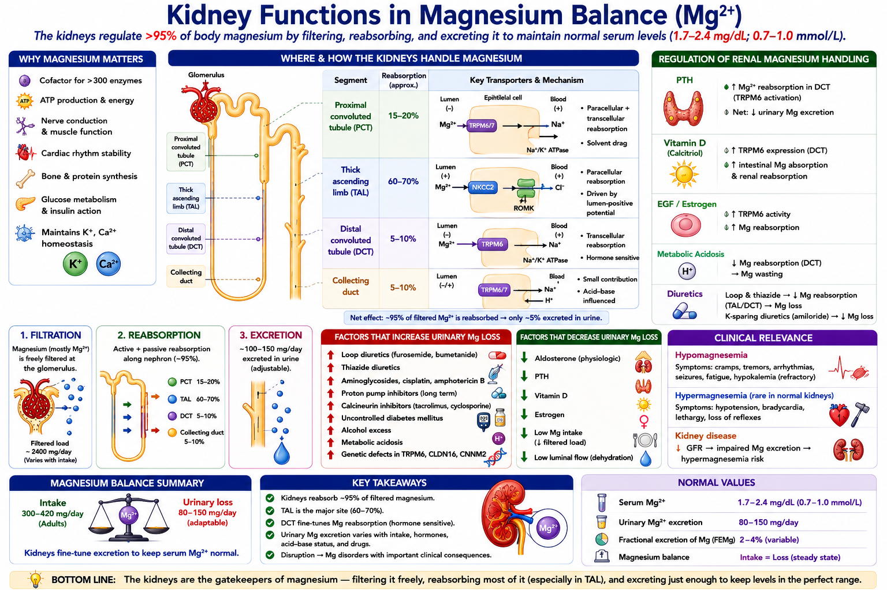
The kidney is the main controller of magnesium — reabsorbing it passively in the loop of Henle and fine-tuning it via TRPM6 in the distal tubule. CKD can cause either retention or wasting.
Magnesium is essential for hundreds of enzymes, steady nerves and muscles, a regular heartbeat, and healthy bones — yet it is often overlooked. Your kidneys are the main long-term controller of how much magnesium your body keeps, carefully matching what is lost in the urine to what you take in.Mahalaga ang magnesium para sa daan-daang enzyme, matatag na nerbiyo at kalamnan, regular na tibok ng puso, at malusog na buto — ngunit madalas itong nakakalimutan. Ang inyong mga bato ang pangunahing pangmatagalang tagakontrol kung gaano karaming magnesium ang pinapanatili ng katawan, maingat na itinutugma ang nawawala sa ihi sa kung gaano karami ang inyong nakukuha.Mahinungdanon ang magnesium para sa gatusan ka enzyme, lig-on nga nerbiyo ug kaunoran, regular nga pitik sa kasingkasing, ug himsog nga bukog — apan kasagaran kini malimtan. Ang imong mga kidney mao ang pangunang dugay-nga-tigkontrol kung pila ka magnesium ang gitago sa lawas, maampingong gipares ang nawala sa ihi sa kung pila ang imong gikuha.Mahalaga ya ing magnesium para king dakal a enzyme, matatag a nerbiyo at kaulnan, regular a pitik ning puso, at malusug a buto — dapot pilan ya makakalimutan. Deng inyong batu ing pekamaragul a pangmatagal a tagakontrol nung pilan a magnesium ing pengatagan ning katawan, maingat a itinutugma ing mewala king ihi karing inyong akua.
How It WorksPaano Ito GumaganaGiunsa Kini PaglihokMakananu Yang Gagana
Most filtered magnesium is reabsorbed passively in the thick ascending limb of the loop of Henle, pulled back through the paracellular pathway (claudin-16/19) by the lumen-positive voltage that NKCC2 creates. The final, precisely regulated step happens in the distal convoluted tubule through the active channel TRPM6. By adjusting TRPM6 activity, the kidney fine-tunes magnesium excretion to match the body's needs.Karamihan ng na-filter na magnesium ay muling sinisipsip nang pasibo sa thick ascending limb ng loop of Henle, hinihila pabalik sa pamamagitan ng paracellular pathway (claudin-16/19) dahil sa lumen-positive na boltahe na nililikha ng NKCC2. Ang huling, tumpak na kinokontrol na hakbang ay nagaganap sa distal convoluted tubule sa pamamagitan ng aktibong channel na TRPM6. Sa pag-aayos ng aktibidad ng TRPM6, pinipino ng bato ang paglabas ng magnesium upang itugma sa pangangailangan ng katawan.Kadaghanan sa na-filter nga magnesium gisuyop balik nga pasibo sa thick ascending limb sa loop of Henle, gibira balik pinaagi sa paracellular pathway (claudin-16/19) tungod sa lumen-positive nga boltahe nga gihimo sa NKCC2. Ang katapusan, tukmang gikontrol nga lakang mahitabo sa distal convoluted tubule pinaagi sa aktibong channel nga TRPM6. Pinaagi sa pag-adjust sa kalihokan sa TRPM6, gipino sa kidney ang paggawas sa magnesium aron mopares sa panginahanglan sa lawas.Kalakalan ning na-filter a magnesium ya pasibung sisipsipan pasibalik king thick ascending limb ning loop of Henle, hinihila pabalik king paracellular pathway (claudin-16/19) uli ning lumen-positive a boltahe a gagawan ning NKCC2. Ing tauling, eksaktung kinokontrol a hakbang ya magaganap king distal convoluted tubule king aktibu a channel a TRPM6. King pamag-adjust king aktibidad ning TRPM6, pinipino ning kidney ing paglual ning magnesium para itugma king pangailangan ning katawan.
Why It MattersBakit Ito MahalagaNgano Importante KiniBakit Ya Mahalaga
Magnesium keeps nerve and muscle signaling stable, supports a regular heartbeat, helps regulate blood pressure, and is needed to handle potassium and calcium properly. Because the kidney sets this balance, it quietly protects you from both deficiency and overload.Pinapanatili ng magnesium na matatag ang pagsenyas ng nerbiyo at kalamnan, sinusuportahan ang regular na tibok ng puso, tumutulong sa pagkontrol ng presyon ng dugo, at kailangan upang maayos na maproseso ang potassium at calcium. Dahil itinatakda ng bato ang balanseng ito, tahimik nitong pinoprotektahan kayo mula sa kakulangan at sobra.Gipadayon sa magnesium nga lig-on ang pagsenyas sa nerbiyo ug kaunoran, gisuportahan ang regular nga pitik sa kasingkasing, gitabangan ang pagkontrol sa presyon sa dugo, ug gikinahanglan aron husto nga maproseso ang potassium ug calcium. Tungod kay ang kidney ang nagtakda niini nga balanse, hilom kini nga nagpanalipod kanimo gikan sa kakulang ug sobra.Pengatagan ning magnesium a matatag ing pagsenyas ning nerbiyo at kaulnan, sinusuportahan ing regular a pitik ning puso, saup king pamagkontrol ning presyon ning dugu, at kailangan para mayap a maproseso ing potassium at calcium. Uli na itinatakda ning kidney iting balanse, tahimik nang pipoprotektan na ka king kakulangan at sobra.
When This Function FailsKapag Nabigo ang Tungkuling ItoKon Mapakyas Kini nga GimbuhatonNung Nampasan Iting Tungkulin
In advanced CKD the kidney can no longer excrete magnesium well, so levels can rise (hypermagnesemia) — a danger that climbs with magnesium-containing laxatives and antacids, causing weakness, low blood pressure, and serious heart-rhythm changes. The opposite can also occur: certain diuretics, medications, and tubular disorders cause magnesium wasting (hypomagnesemia), leading to cramps, arrhythmias, and stubbornly low potassium and calcium that will not correct until magnesium is replaced.Sa malubhang CKD, hindi na maayos na mailalabas ng bato ang magnesium, kaya maaaring tumaas ang antas nito (hypermagnesemia) — isang panganib na lumalakas sa paggamit ng mga laxative at antacid na may magnesium, na nagdudulot ng panghihina, mababang presyon ng dugo, at malubhang pagbabago sa ritmo ng puso. Maaari rin mangyari ang kabaligtaran: ang ilang diuretic, gamot, at tubular disorder ay nagdudulot ng pagkawala ng magnesium (hypomagnesemia), na humahantong sa pulikat, arrhythmia, at matigas na mababang potassium at calcium na hindi maaayos hangga't hindi napapalitan ang magnesium.Sa grabe nga CKD dili na maayo nga makapagawas ang kidney sa magnesium, mao nga mahimong motaas ang lebel niini (hypermagnesemia) — usa ka peligro nga modugang sa paggamit sa mga laxative ug antacid nga adunay magnesium, hinungdan sa kaluya, ubos nga presyon sa dugo, ug grabe nga kausaban sa ritmo sa kasingkasing. Mahimo usab mahitabo ang sukwahi: ang pipila ka diuretic, tambal, ug tubular disorder maoy hinungdan sa pagkawala sa magnesium (hypomagnesemia), nga mosangpot sa kombulsiyon, arrhythmia, ug gahi nga ubos nga potassium ug calcium nga dili maayo hangtod nga mapulihan ang magnesium.King grabe a CKD ali na mayap a malual ning kidney ing magnesium, kanita maaaring tumas ing antas na (hypermagnesemia) — metung a peligrung lumalakas king pamag-gamit karing laxative at antacid a atin magnesium, a gagawang panghina, mababa a presyon ning dugu, at grabe a pamagbayu king ritmo ning puso. Maaari mu naman mayari ing kasalungat: deng aliwang diuretic, gamut, at tubular disorder gagawang pamagkawala ning magnesium (hypomagnesemia), a hahantung king pulikat, arrhythmia, at matigas a mababa a potassium at calcium a ali maaayos anggang ali mapalitan ing magnesium.
Key TakeawayPangunahing AralMahinungdanong PuntoPekamaragul a Aral
Healthy kidneys keep magnesium — a mineral vital to your nerves, muscles, and heartbeat — in safe balance.Pinapanatili ng malusog na bato ang magnesium — isang mineral na mahalaga sa inyong nerbiyo, kalamnan, at tibok ng puso — sa ligtas na balanse.Ang himsog nga mga kidney nagtipig sa magnesium — usa ka mineral nga hinungdanon sa imong nerbiyo, kaunoran, ug pitik sa kasingkasing — sa luwas nga balanse.Deng malusug a batu pengatagan da ing magnesium — metung a mineral a mahalaga karing inyong nerbiyo, kaulnan, at pitik ning puso — king ligtas a balanse.
Preventing Metabolic AcidosisPag-iwas sa Metabolic AcidosisPagpugong sa Metabolic AcidosisPag-iwas king Metabolic Acidosis
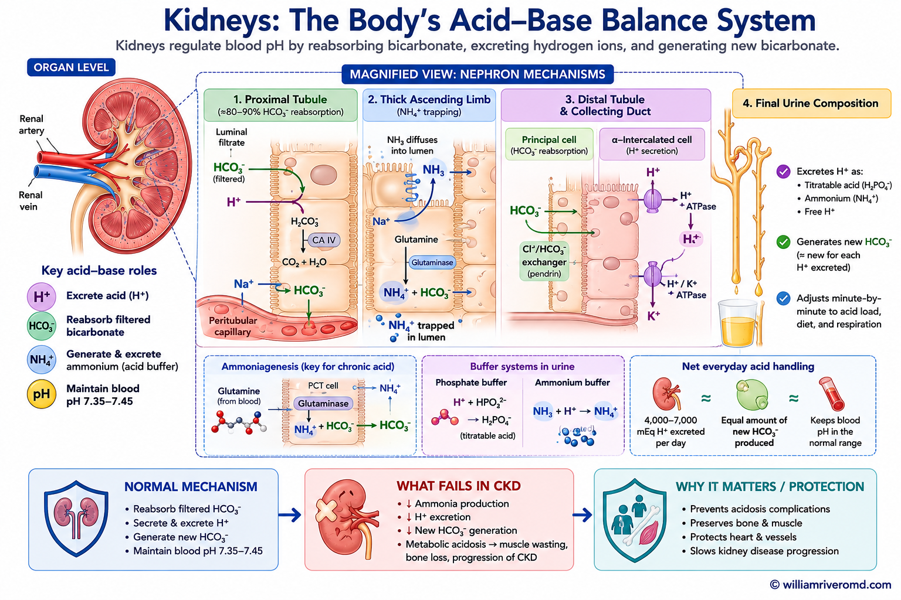
The kidney removes the body's daily metabolic acid three ways: reclaiming filtered bicarbonate, making new bicarbonate from glutamine, and excreting acid as ammonium and titratable acid.
Your kidneys are the body's primary acid-removal system. Every day, normal metabolism produces acid — from digesting protein, exercising, and simply living. The kidneys work continuously to remove this acid and keep your blood at the precise pH needed for your muscles, bones, and organs to function.Ang iyong mga bato ang pangunahing sistema ng pagtanggal ng acid sa katawan. Araw-araw, ang normal na metabolismo ay nagpoproduksyon ng acid — mula sa pagtunaw ng protina, pag-ehersisyo, at simpleng pamumuhay. Patuloy na nagtatrabaho ang mga bato upang alisin ang acid na ito at panatilihin ang iyong dugo sa tamang pH na kailangan ng iyong mga kalamnan, buto, at organo upang gumana.Ang imong mga kidney ang panguna nga sistema sa pagtanggal sa acid sa lawas. Matag adlaw, ang normal nga metabolismo nagmugna sa acid — gikan sa pagtunaw sa protina, ehersisyo, ug simpleng pagkinabuhi. Padayon nga nagtrabaho ang mga kidney aron tanggalon kining acid ug ipadayon ang imong dugo sa hustong pH nga gikinahanglan sa imong mga kalamnan, bukog, ug organo aron molihok.Ing iyong mga kidney ing pangunahing sistema ning pag-aalis ning acid king katawan. Aldo-aldo, ing normal a metabolismo nagpoproduksyon ning acid — gikan king pagtunaw ning protina, ehersisyo, at basta pamumuhay. Padayon a nagtratrabahu ing mga kidney para alisin iting acid at panatilihin ing iyong dugo king tuksuyang pH a kailangan ning iyong mga kalamnan, buto, at organo para gumana.
How It WorksPaano Ito GumaganaUnsaon Kini PaglihokMakamanu Ini Gumagana
The kidneys use three coordinated mechanisms. (1) Reclaim bicarbonate: In the proximal tubule, the transporter NHE3 and the pump H⁺-ATPase secrete hydrogen ions (H⁺) into the tubule. These combine with filtered bicarbonate; carbonic anhydrase converts the pair into CO₂ and water, which re-enters the cell. Inside the cell, another carbonic anhydrase reforms bicarbonate, which exits to the blood — effectively rescuing all filtered bicarbonate. (2) Generate new bicarbonate: The kidney metabolizes glutamine (ammoniagenesis), producing ammonium (NH₄⁺) for urinary acid excretion and creating fresh bicarbonate that enters the blood. Acidosis powerfully amplifies this pathway. (3) Excrete titratable acid: Secreted H⁺ is buffered mainly by phosphate in the urine, excreted as titratable acid — a second route for permanent acid removal.Gumagamit ang mga bato ng tatlong magkakaugnay na mekanismo. (1) Bawiin ang bicarbonate: Sa proximal tubule, ang transporter na NHE3 at ang pump na H⁺-ATPase ay nagsesekrete ng hydrogen ions (H⁺) sa tubule. Nagsasama-sama ang mga ito sa na-filter na bicarbonate; ang carbonic anhydrase ay nagko-convert ng pares sa CO₂ at tubig, na muling pumapasok sa cell. Sa loob ng cell, ang isa pang carbonic anhydrase ay nag-reporma ng bicarbonate, na lumalabas sa dugo. (2) Lumikha ng bagong bicarbonate: Kinemetabolisa ng bato ang glutamine (ammoniagenesis), gumagawa ng ammonium (NH₄⁺) para sa ekskresiyon ng acid sa ihi at lumilikha ng sariwang bicarbonate na pumapasok sa dugo. Lubos na pinapalakas ng acidosis ang pathway na ito. (3) Mag-excrete ng titratable acid: Ang secreted H⁺ ay nabubuffer pangunahin ng phosphate sa ihi, na na-excrete bilang titratable acid.Gigamit sa mga kidney ang tulo ka nagkalambigit nga mekanismo. (1) Bawion ang bicarbonate: Sa proximal tubule, ang transporter nga NHE3 ug ang pump nga H⁺-ATPase nagsekreta sa hydrogen ions (H⁺) sa tubule. Nagtipon kini sa gisala nga bicarbonate; ang carbonic anhydrase nagbag-o sa pares ngadto sa CO₂ ug tubig, nga mobalik sa cell. Sulod sa cell, ang laing carbonic anhydrase nagbag-o pag-usab sa bicarbonate, nga mogawas sa dugo. (2) Maghimo og bag-ong bicarbonate: Ginametabolisa sa kidney ang glutamine (ammoniagenesis), naghimo sa ammonium (NH₄⁺) alang sa ekskresiyon sa acid sa ihi ug naghimo sa lab-as nga bicarbonate nga mosulod sa dugo. Kusog kaayo nga gipadako sa acidosis kining agianan. (3) Mag-excrete sa titratable acid: Ang secreted H⁺ gibuffer sa phosphate sa ihi, giexcrete isip titratable acid.Gagamitan ning mga kidney ing tatlun a nagkakaugnay a mekanismo. (1) Bawiin ing bicarbonate: King proximal tubule, ang transporter a NHE3 at ing pump a H⁺-ATPase nagsesekrete ning hydrogen ions (H⁺) king tubule. Nagsasama-sama iti king nasala a bicarbonate; ang carbonic anhydrase nagco-convert ning pares king CO₂ at tubig, a muling pumapasok king cell. Loob ning cell, ing isa pang carbonic anhydrase nagre-reporma ning bicarbonate, a lumalabas king dugo. (2) Lumikha ning bayung bicarbonate: Kinemetabolisa ning kidney ing glutamine (ammoniagenesis), gumagawa ning ammonium (NH₄⁺) para king ekskresiyon ning acid king ihi at lumilikha ning sariwang bicarbonate a pumapasok king dugo. Lubos a pinapalakasan ning acidosis iting pathway. (3) Mag-excrete ning titratable acid: Ang secreted H⁺ nabubuffer pangunahin ning phosphate king ihi, na-excrete bilang titratable acid.
Why It MattersBakit Ito MahalagaNgano Kini ImportanteBakit Iti Importante
A stable blood pH keeps your muscles contracting properly, your enzymes working at full speed, and your bones intact. Even a slight drop in pH — too much acid in the blood — impairs nearly every cellular process in the body. Correcting excess acid daily is what keeps your body chemistry in balance.Ang matatag na pH ng dugo ay nagpapanatiling maayos ang pagkontrata ng iyong mga kalamnan, buong bilis na gumagana ang iyong mga enzyme, at buo ang iyong mga buto. Kahit maliit na pagbaba ng pH — masyadong maraming acid sa dugo — ay nagpapalabas ng halos lahat ng prosesong selyular sa katawan. Ang pagwawasto ng labis na acid araw-araw ang nagpapanatiling balanse ang kemikal ng iyong katawan.Ang lig-on nga pH sa dugo nagpadayon sa hustong pagkontrata sa imong mga kalamnan, bug-os nga katulin sa imong mga enzyme, ug buo ang imong mga bukog. Bisan gamay ra nga pagkunhod sa pH — sobra nga acid sa dugo — nagpasamok sa hapit tanang proseso sa cell sa lawas. Ang pagtul-id sa sobrang acid matag adlaw ang nagpadayon sa balanse sa kemikal sa imong lawas.Ang matatag a pH ning dugo nagpapanatiling maayus ing pagkontrata ning iyong mga kalamnan, buong bilis a gumagana ing iyong mga enzyme, at buo ing iyong mga buto. Kahit maliting pagbaba ning pH — masyadung daming acid king dugo — nagpapalabas ning halos lahat ning prosesong selyular king katawan. Ing pagtutuwid ning sobrang acid aldo-aldo iti ang nagpapanatiling balanse ing kemikal ning iyong katawan.
When This Function FailsKapag Nabigo ang Function na ItoKung Mapakyas Kining FunctionNung Mabigo Itong Function
CKD reduces the kidney's ability to excrete acid and regenerate bicarbonate, causing metabolic acidosis — a chronic, low-grade acid build-up in the blood. Over time this leads to persistent fatigue, muscle wasting (the body breaks down muscle to buffer acid), bone loss (bones release calcium and carbonate to neutralize acid), breathlessness, and accelerated CKD progression.Binabawasan ng CKD ang kakayahan ng bato na mag-excrete ng acid at mag-regenerate ng bicarbonate, na nagdudulot ng metabolic acidosis — isang mabagal, mataas na pagtitipon ng acid sa dugo. Sa paglipas ng panahon, nagdudulot ito ng patuloy na pagod, pagkasaid ng kalamnan (sinisira ng katawan ang kalamnan upang i-buffer ang acid), pagkawala ng buto (inilalabas ng mga buto ang calcium at carbonate upang neutralihin ang acid), hirap sa paghinga, at mas mabilis na pag-unlad ng CKD.Gikuhusan sa CKD ang abilidad sa kidney sa pag-excrete sa acid ug pagpabag-o sa bicarbonate, nagdulot sa metabolic acidosis — usa ka kronikong, hinay-hinay nga pagtipok sa acid sa dugo. Sa paglabay sa panahon, nagdulot kini sa padayon nga pagkapuon, pagkawala sa kalamnan (gigun-ob sa lawas ang kalamnan aron ibuffer ang acid), pagkawala sa bukog (gilabas sa mga bukog ang calcium ug carbonate aron mapugngan ang acid), kaginhawahan sa pagginhawa, ug mas paspas nga pagkauswag sa CKD.Binabawasan ning CKD ing kakayahan ning kidney na mag-excrete ning acid at mag-regenerate ning bicarbonate, magdulot ning metabolic acidosis — metung a kronikong, hinay-hinay a pagtitipon ning acid king dugo. Sa paglabas ning panahon, magdulot iti ning palaging pagod, pagkasaid ning kalamnan (sisirain ning katawan ing kalamnan para i-buffer ing acid), pagkawala ning buto (ilalabas ning mga buto ing calcium at carbonate para neutralisin ing acid), hirap king paghinga, at mas mabilisang pag-unlad ning CKD.
Key TakeawayPangunahing AralPanguna nga MensahePangunahing Aral
The kidneys are your body's primary acid-removal system — keeping your blood chemistry stable so every cell can work properly.Ang mga bato ang pangunahing sistema ng pagtanggal ng acid ng iyong katawan — pinapanatiling matatag ang kemikal ng iyong dugo upang maayos na gumana ang bawat cell.Ang mga kidney ang panguna nga sistema sa pagtanggal sa acid sa imong lawas — nagpadayon sa lig-on nga kemikal sa imong dugo aron maayos nga molihok ang matag cell.Ing mga kidney ing pangunahing sistema ning pag-aalis ning acid ning iyong katawan — nagpapanatiling matatag ing kemikal ning iyong dugo para maayus a gumana ing bawat cell.
Controlling Blood PressurePagkontrol ng Presyon ng DugoPagkontrol sa Presyon sa DugoPagkontrol ning Presyon ning Dugo

The kidney sets long-term blood pressure by controlling sodium. The RAAS cascade (renin to angiotensin II to aldosterone) raises pressure when needed, while pressure natriuresis lowers it — dysregulation drives hypertension in CKD.
Your kidneys are the body's master regulators of long-term blood pressure. Unlike the heart and blood vessels that respond in seconds, the kidneys adjust blood pressure over hours and days by controlling how much salt and water stays in your body. No other organ has this sustained, powerful influence on blood pressure.Ang iyong mga bato ang pangunahing regulator ng pangmatagalang presyon ng dugo sa katawan. Hindi tulad ng puso at mga daluyan ng dugo na tumutugon sa loob ng ilang segundo, inaayos ng mga bato ang presyon ng dugo sa loob ng mga oras at araw sa pamamagitan ng pagkontrol ng dami ng asin at tubig na nananatili sa iyong katawan. Walang ibang organo ang may ganitong napapanatiling, malakas na impluwensya sa presyon ng dugo.Ang imong mga kidney ang panguna nga regulador sa dugay nga presyon sa dugo sa lawas. Dili sama sa kasingkasing ug mga ugat sa dugo nga motubag sulod sa mga segundo, ang mga kidney nag-adjust sa presyon sa dugo sulod sa mga oras ug adlaw pinaagi sa pagkontrol sa kung pila ka asin ug tubig ang magpabilin sa imong lawas. Walay laing organo ang adunay niining padayon ug kusog nga impluwensya sa presyon sa dugo.Ing iyong mga kidney ing pangunahing regulator ning pangmatagalang presyon ning dugo king katawan. Ali tulad ning puso at mga ugat ning dugo a tumutupad king loob ning ilang segundo, iniaayos ning mga kidney ing presyon ning dugo king loob ning mga oras at araw sa pamamamagitan ning pagkontrol kung magkanu a asin at tubig ing mananatili king iyong katawan. Ala pang ibang organo ing adunang ganitong napapanatiling, malakas a impluwensya king presyon ning dugo.
How It WorksPaano Ito GumaganaUnsaon Kini PaglihokMakamanu Ini Gumagana
Pressure natriuresis: When blood pressure rises, the kidneys automatically excrete more sodium and water in the urine, reducing blood volume and bringing pressure back down. Tubuloglomerular feedback: The macula densa cells sense sodium-chloride delivery in the tubule and signal the afferent arteriole to fine-tune blood flow and GFR, moment to moment. Renin-Angiotensin-Aldosterone System (RAAS): When kidney perfusion or sodium delivery falls, juxtaglomerular cells release renin → angiotensin I → (via ACE) angiotensin II, which causes vasoconstriction and triggers aldosterone release. Aldosterone acts on ENaC channels in the collecting duct, increasing sodium — and thus water — reabsorption to raise blood volume and pressure. Sympathetic nerves and local vasoactive mediators also contribute.Pressure natriuresis: Kapag tumaas ang presyon ng dugo, awtomatikong nag-excrete ng mas maraming sodium at tubig sa ihi ang mga bato, binabawasan ang dami ng dugo at ibinababa ang presyon. Tubuloglomerular feedback: Ang mga cell ng macula densa ay nararamdaman ang paghahatid ng sodium-chloride sa tubule at nagbibigay-senyal sa afferent arteriole upang i-fine-tune ang daloy ng dugo at GFR. Renin-Angiotensin-Aldosterone System (RAAS): Kapag bumaba ang perfusion ng bato o paghahatid ng sodium, naglalabas ang mga juxtaglomerular cell ng renin → angiotensin I → (sa pamamagitan ng ACE) angiotensin II, na nagdudulot ng vasoconstriction at nag-trigger ng paglabas ng aldosterone. Kumikilos ang aldosterone sa mga ENaC channel sa collecting duct, pinapataas ang reabsorption ng sodium — at kaya tubig — upang itaas ang dami ng dugo at presyon.Pressure natriuresis: Kung mosaka ang presyon sa dugo, awtomatiko nga nag-excrete ang mga kidney ug labaw pa nga sodium ug tubig sa ihi, nagpakunhod sa gidaghanon sa dugo ug nagpahunong sa presyon. Tubuloglomerular feedback: Ang mga cell sa macula densa nagbati sa paghatod sa sodium-chloride sa tubule ug nag-signal sa afferent arteriole aron i-fine-tune ang agos sa dugo ug GFR. Renin-Angiotensin-Aldosterone System (RAAS): Kung mous-os ang perfusion sa kidney o paghatod sa sodium, ang mga juxtaglomerular cell nagpagawas sa renin → angiotensin I → (pinaagi sa ACE) angiotensin II, nga nagdulot sa vasoconstriction ug nag-trigger sa pagpagawas sa aldosterone. Naglihok ang aldosterone sa mga ENaC channel sa collecting duct, nagdugang sa reabsorption sa sodium — ug busa tubig — aron mosaka ang gidaghanon sa dugo ug presyon.Pressure natriuresis: Nung sumakat ing presyon ning dugo, awtomatikong nag-excrete ning mas maraming sodium at tubig king ihi ing mga kidney, binabawasan ing dami ning dugo at ibinababa ing presyon. Tubuloglomerular feedback: Ang mga cell ning macula densa naramdaman ing paghahatid ning sodium-chloride king tubule at nagbibigay-signal king afferent arteriole para i-fine-tune ing agos ning dugo at GFR. Renin-Angiotensin-Aldosterone System (RAAS): Nung bumaba ing perfusion ning kidney o paghahatid ning sodium, ang mga juxtaglomerular cell naglalabas ning renin → angiotensin I → (paagi king ACE) angiotensin II, a nagdudulot ning vasoconstriction at nag-trigger ning paglalabas ning aldosterone. Kumikilos ing aldosterone king mga ENaC channel king collecting duct, pinatataas ing reabsorption ning sodium — at kaya tubig — para itaas ing dami ning dugo at presyon.
Why It MattersBakit Ito MahalagaNgano Kini ImportanteBakit Iti Importante
Healthy kidneys are essential for healthy blood pressure. When kidneys regulate sodium and fluid properly, blood pressure stays in a safe range without medication. Dysregulated kidney pressure handling — even subtle dysfunction — is central to resistant hypertension, the form most difficult to treat with pills alone.Mahalaga ang malusog na mga bato para sa malusog na presyon ng dugo. Kapag maayos na nire-regulate ng mga bato ang sodium at likido, nananatili ang presyon ng dugo sa ligtas na antas nang walang gamot. Ang dysregulated na pamamahala ng presyon ng bato — kahit maliit na dysfunction — ay sentro ng resistant hypertension, ang uri na pinakamahirap gamutin ng mga tableta lamang.Ang himsog nga mga kidney mahinungdanon alang sa himsog nga presyon sa dugo. Kung maayo nga gi-regulate sa mga kidney ang sodium ug likido, ang presyon sa dugo nagpabilin sa luwas nga antas nga walay medisina. Ang dysregulated nga pamamahala sa presyon sa kidney — bisan gamay nga dysfunction — sentro sa resistant hypertension, ang matang pinakamalisod tagaon sa mga tableta lamang.Mahalaga ing malusog a mga kidney para king malusog a presyon ning dugo. Nung maayus a ni-regulate ning mga kidney ing sodium at likido, ang presyon ning dugo nananatili king ligtas a antas nang ala gamit. Ang dysregulated a pamamahala ning presyon ning kidney — kahit maliting dysfunction — sentro ning resistant hypertension, ing uri a pinakamahirap gamutin ning mga tableta lamang.
When This Function FailsKapag Nabigo ang Function na ItoKung Mapakyas Kining FunctionNung Mabigo Itong Function
When kidney pressure control is impaired, blood pressure becomes resistant to treatment. Chronically elevated blood pressure then damages the very kidneys trying to regulate it — a vicious cycle. The downstream consequences include higher risk of stroke, heart attack, heart failure, and accelerated kidney failure.Kapag nasira ang kontrol ng bato sa presyon, lumalaban sa paggamot ang presyon ng dugo. Ang matagal na mataas na presyon ng dugo ay nagdadamage sa mismong mga bato na sumusubok na i-regulate ito — isang mapanganib na siklo. Ang mga kahihinatnan ay kinabibilangan ng mas mataas na panganib ng atake sa utak, atake sa puso, pagpalya ng puso, at mas mabilis na pagpalya ng bato.Kung naguba ang kontrol sa presyon sa kidney, ang presyon sa dugo dili na matago sa pagtratar. Ang kroniko nga taas nga presyon sa dugo nagdamage sa mismong mga kidney nga nagsulti sa pagregula niini — usa ka mapanganib nga siklo. Ang mga kasubsob naglakip sa mas taas nga risgo sa stroke, atake sa kasingkasing, pagpalya sa kasingkasing, ug mas paspas nga pagpalya sa kidney.Nung nasira ing kontrol ning kidney king presyon, lumalaban king gamutin ing presyon ning dugo. Ang matagal a matas a presyon ning dugo nagdadamage king mismong mga kidney a sumusubok na i-regulate iti — metung a mapanganib a siklo. Ang mga kahihinatnan nagsasama ning mas matas a panganib ning stroke, atake king puso, pagpalya ning puso, at mas mabilisang pagpalya ning kidney.
Key TakeawayPangunahing AralPanguna nga MensahePangunahing Aral
Healthy kidneys are essential for healthy blood pressure — they are the body's long-term pressure thermostat.Mahalaga ang malusog na mga bato para sa malusog na presyon ng dugo — sila ang pangmatagalang termostato ng presyon ng katawan.Ang himsog nga mga kidney mahinungdanon alang sa himsog nga presyon sa dugo — sila ang dugay nga termostato sa presyon sa lawas.Mahalaga ing malusog a mga kidney para king malusog a presyon ning dugo — ila ing pangmatagalang termostato ning presyon ning katawan.
Producing Erythropoietin: Preventing AnemiaPagproduksyon ng Erythropoietin: Pag-iwas sa AnemiaPaghimo sa Erythropoietin: Pagpugong sa AnemiaPagproduksyon ning Erythropoietin: Pag-iwas king Anemia
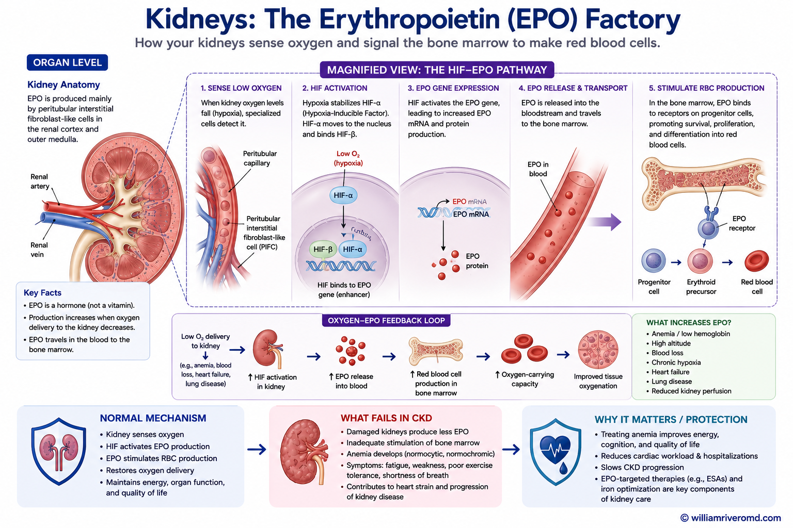
The kidney is the body's oxygen sensor: low oxygen stabilizes HIF, which triggers erythropoietin (EPO) release to tell the bone marrow to make red blood cells. Losing this causes the anemia of CKD.
Your kidneys constantly monitor how much oxygen is in your blood and send a hormonal signal to your bone marrow telling it when to make more red blood cells. Without this signal, the bone marrow slows down and red cell numbers fall — leading to anemia, the exhausting fatigue that many kidney patients know all too well.Patuloy na sinusubaybayan ng iyong mga bato kung gaano karaming oxygen ang nasa iyong dugo at nagpapadala ng hormonal na senyales sa iyong bone marrow na nagsasabi rito kung kailan dapat gumawa ng mas maraming red blood cells. Kung wala ang senyales na ito, nagpapabagal ang bone marrow at bumababa ang bilang ng red cells — nagdudulot ng anemia, ang nakakapagod na pagod na kilala ng maraming pasyente ng bato.Padayon nga gimonitor sa imong mga kidney kung pila ang oxygen sa imong dugo ug nagpadala sa hormonal nga signal sa imong bone marrow nga nagsulti niini kung kanus-a mohimo ug labaw nga red blood cells. Kung wala kining signal, naghinay ang bone marrow ug mous-os ang ihap sa red cells — nagdulot sa anemia, ang makapaluya nga pagkapuon nga nahibaloan sa daghang pasyente sa kidney.Padayon a binabantayan ning iyong mga kidney kung magkanu a oxygen ing atyu king iyong dugo at nagpapadala ning hormonal a signal king iyong bone marrow a nagsasabi niti kung kailan dapat gumawa ning mas maraming red blood cells. Kung ala itong signal, nagpapabagal ing bone marrow at bumababa ing bilang ning red cells — magdulot ning anemia, ing nakakapagod a pagod a kilala ning maraming pasyente ning kidney.
How It WorksPaano Ito GumaganaUnsaon Kini PaglihokMakamanu Ini Gumagana
Specialized interstitial fibroblast-like cells in the renal cortex and outer medulla act as oxygen sensors. When they detect low oxygen delivery — from anemia, blood loss, or low blood flow — they activate hypoxia-inducible factor (HIF) signaling. HIF switches on the gene for erythropoietin (EPO), a hormone the kidney secretes into the bloodstream. EPO travels to the bone marrow and docks onto erythroid progenitor cells, stimulating them to multiply and mature into red blood cells. More red cells means more hemoglobin and better oxygen delivery throughout the body.Ang mga espesyalisadong interstitial fibroblast-like na cell sa renal cortex at outer medulla ay gumagana bilang mga sensor ng oxygen. Kapag natuklas nila ang mababang paghahatid ng oxygen — mula sa anemia, pagkawala ng dugo, o mababang daloy ng dugo — inaaktibo nila ang hypoxia-inducible factor (HIF) signaling. Nino-on ng HIF ang gene para sa erythropoietin (EPO), isang hormone na ini-secrete ng bato sa daloy ng dugo. Naglalakbay ang EPO sa bone marrow at nag-dock sa mga erythroid progenitor cell, pinipigilan silang paramihin at palakin sa mga red blood cell. Mas maraming red cells ay nangangahulugang mas maraming hemoglobin at mas magandang paghahatid ng oxygen sa buong katawan.Ang mga espesyalisadong interstitial fibroblast-like nga cell sa renal cortex ug outer medulla naglihok isip mga sensor sa oxygen. Kung makamatikod sila ug ubos nga paghatod sa oxygen — gikan sa anemia, pagkawala sa dugo, o ubos nga agos sa dugo — gipaaktibo nila ang hypoxia-inducible factor (HIF) signaling. Gi-on sa HIF ang gene alang sa erythropoietin (EPO), usa ka hormone nga gi-secrete sa kidney sa daloy sa dugo. Nagbiyahe ang EPO sa bone marrow ug nag-dock sa mga erythroid progenitor cell, nagdasig kanila aron mapilo ug mahimong red blood cells. Labaw pa nga red cells nagpasabot ug labaw pa nga hemoglobin ug mas maayo nga paghatod sa oxygen sa tibuok lawas.Ang mga espesyalisadong interstitial fibroblast-like a cell king renal cortex at outer medulla gumagana bilang mga sensor ning oxygen. Nung matuklas da ing mababang paghahatid ning oxygen — gikan king anemia, pagkawala ning dugo, o mababang agos ning dugo — inaaktibo da ing hypoxia-inducible factor (HIF) signaling. Ino-on ning HIF ing gene para king erythropoietin (EPO), metung a hormone a isi-secrete ning kidney king agus ning dugo. Naglalakbay ing EPO king bone marrow at nag-dock king mga erythroid progenitor cell, pinipigilan da aring paramihin at lumaki bilang red blood cells. Mas maraming red cells nangangahulugan ning mas maraming hemoglobin at mas magandang paghahatid ning oxygen sa buong katawan.
Why It MattersBakit Ito MahalagaNgano Kini ImportanteBakit Iti Importante
Without kidney-produced EPO, the bone marrow does not receive the signal to make new red blood cells. Red cell counts quietly fall over weeks to months. Every tissue in the body then receives less oxygen, causing the profound fatigue, weakness, and exercise intolerance that define anemia. The heart also tries to compensate by pumping harder, which over time contributes to dangerous left-ventricular enlargement (LVH).Kung wala ang EPO na gawa ng bato, hindi natatanggap ng bone marrow ang senyales na gumawa ng bagong red blood cells. Tahimik na bumababa ang bilang ng red cells sa loob ng mga linggo hanggang buwan. Ang bawat tisyu sa katawan ay tumatanggap ng mas kaunting oxygen, nagdudulot ng matinding pagod, kahinaan, at kawalan ng kakayahan sa ehersisyo na nagtatanda ng anemia. Sinusubukan din ng puso na compensate sa pamamagitan ng mas malakas na pagbomba, na sa paglipas ng panahon ay nag-aambag sa mapanganib na pagpalaki ng kaliwang ventrikulo (LVH).Kung wala ang EPO nga gihimo sa kidney, dili makadawat ang bone marrow sa signal aron mohimo ug bag-ong red blood cells. Hilom nga mous-os ang ihap sa red cells sulod sa mga semana hangtod buwan. Ang matag tisyu sa lawas makadawat ug gamay na oxygen, nagdulot sa grabe nga pagkapuon, kahuyang, ug kakulang sa kakayahan sa ehersisyo nga nagpakita sa anemia. Mosulay usab ang kasingkasing sa pagkompensa pinaagi sa mas kusog nga pagbomba, nga sa paglabay sa panahon nakaambag sa mapanganib nga pagpadako sa wala nga ventrikulo (LVH).Kung ala ing EPO a ginawa ning kidney, ali makatanggap ing bone marrow ning signal para gumawa ning bayung red blood cells. Tahimik a bumababa ing bilang ning red cells king loob ning mga linggo hanggang buwan. Ang bawat tisyu king katawan tumatanggap ning mas kaunting oxygen, magdulot ning malalim a pagod, kahinaan, at kawalan ning kakayahan king ehersisyo a nagtatanda ning anemia. Sumusubok mu ing puso na mag-compensate sa pamamagitan ning mas malakas a pagbomba, a sa paglabas ning panahon nakakaambag king mapanganib a pagpalaki ning kaliwang ventrikulo (LVH).
When This Function FailsKapag Nabigo ang Function na ItoKung Mapakyas Kining FunctionNung Mabigo Itong Function
CKD progressively destroys the EPO-producing interstitial cells, causing the anemia of CKD — a normocytic, normochromic anemia (normal-sized, normal-colored red cells, just too few). Patients experience severe fatigue, weakness, poor exercise tolerance, breathlessness, and impaired quality of life. The heart works harder to compensate, contributing to left-ventricular hypertrophy (LVH) and increased cardiovascular mortality.Unti-unting sinisira ng CKD ang mga interstitial cell na gumagawa ng EPO, nagdudulot ng anemia ng CKD — isang normocytic, normochromic anemia (normal na sukat, normal na kulay na red cells, basta kakaunti lang). Nakakaranas ang mga pasyente ng matinding pagod, kahinaan, mahinang kakayahan sa ehersisyo, hirap sa paghinga, at nabawasang kalidad ng buhay. Mas mahirap magpump ang puso upang compensate, na nag-aambag sa left-ventricular hypertrophy (LVH) at mas mataas na cardiovascular mortality.Hinay-hinay nga gigun-ob sa CKD ang mga interstitial cell nga naghimo sa EPO, nagdulot sa anemia sa CKD — usa ka normocytic, normochromic anemia (normal ang gidak-on, normal ang kolor sa red cells, gamay ra). Nakasinati ang mga pasyente sa grabe nga pagkapuon, kahuyang, gamay nga kakayahan sa ehersisyo, kaginhawahan sa pagginhawa, ug nabawasan nga kalidad sa kinabuhi. Mas kusog magtrabaho ang kasingkasing aron makompensa, nakaambag sa left-ventricular hypertrophy (LVH) ug mas taas nga cardiovascular mortality.Dahan-dahan a sinisira ning CKD ang mga interstitial cell a gumagawa ning EPO, magdulot ning anemia ning CKD — metung a normocytic, normochromic anemia (normal a sukat, normal a kulay a red cells, basta kakaunting lamang). Nakakaranas ing mga pasyente ning malubhang pagod, kahinaan, mahinang kakayahan king ehersisyo, hirap king paghinga, at nabawasang kalidad ning buhay. Mas mahirap magpump ing puso para mag-compensate, nakakaambag king left-ventricular hypertrophy (LVH) at mas matas a cardiovascular mortality.
Key TakeawayPangunahing AralPanguna nga MensahePangunahing Aral
The kidneys tell the bone marrow when to make red blood cells — keeping your energy and oxygen levels where they need to be.Sinasabi ng mga bato sa bone marrow kung kailan dapat gumawa ng red blood cells — pinapanatiling nasa tamang antas ang iyong enerhiya at oxygen.Gisulti sa mga kidney ang bone marrow kung kanus-a mohimo ug red blood cells — nagpadayon sa hustong antas sa imong enerhiya ug oxygen.Sinasabi ning mga kidney king bone marrow kung kailan dapat gumawa ning red blood cells — nagpapanatiling nasa tuksuyang antas ing iyong enerhiya at oxygen.
Producing ReninPagproduksyon ng ReninPaghimo sa ReninPagproduksyon ning Renin
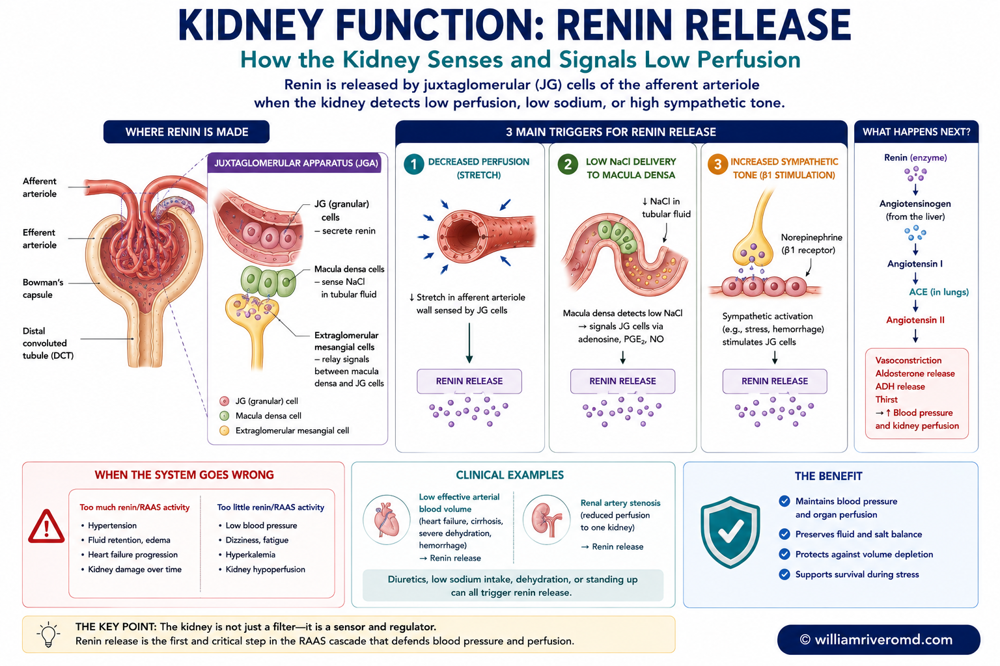
The juxtaglomerular apparatus is the kidney's pressure sensor: falling stretch, falling NaCl at the macula densa, or sympathetic tone trigger renin release to defend blood pressure and perfusion.
Your kidneys sense their own blood flow minute by minute and release a hormone called renin whenever perfusion drops. Renin kicks off a powerful hormonal cascade that raises blood pressure and keeps your organs perfused — a critical survival reflex when you stand up quickly, lose fluids, or experience blood loss.Nararamdaman ng iyong mga bato ang sariling daloy ng dugo bawat minuto at naglalabas ng isang hormone na tinatawag na renin tuwing bumababa ang perfusion. Sisimulan ng renin ang isang makapangyarihang hormonal cascade na nagpapataas ng presyon ng dugo at nagpapanatiling may perfusion ang iyong mga organo — isang kritikal na reflex ng kaligtasan kapag biglang tumayo, nawalan ng likido, o nakaranas ng pagkawala ng dugo.Gibati sa imong mga kidney ang kaugalingon nga agos sa dugo matag minuto ug nagpagawas sa usa ka hormone nga gitawag nga renin matag higayon nga mous-os ang perfusion. Gisugyot sa renin ang usa ka kusog nga hormonal cascade nga nagpataas sa presyon sa dugo ug nagpadayon nga adunay perfusion ang imong mga organo — usa ka kritikal nga survival reflex kung kalit mibangon, nawad-an ug likido, o nakaranas sa pagkawala sa dugo.Nararamdaman ning iyong mga kidney ing sariling agos ning dugo bawat minuto at naglalabas ning metung a hormone a tinatawag a renin nung bumababa ing perfusion. Sisimulanan ning renin ing metung a makapangyarihang hormonal cascade a nagpapatás ning presyon ning dugo at nagpapanatiling adunang perfusion ing iyong mga organo — metung a kritikal a survival reflex nung biglang tumayo, nawalan ning likido, o nakaranas ning pagkawala ning dugo.
How It WorksPaano Ito GumaganaUnsaon Kini PaglihokMakamanu Ini Gumagana
Three triggers release renin from juxtaglomerular (JG) cells in the wall of the afferent arteriole: (1) a fall in stretch of the afferent arteriole (the kidney's own baroreceptor); (2) a fall in sodium-chloride sensed by the macula densa cells in the tubule; (3) stimulation of beta-1 adrenergic receptors by the sympathetic nervous system. Once released, renin cleaves angiotensinogen (made by the liver) into angiotensin I, which is converted by ACE (mainly in the lungs) to angiotensin II. Angiotensin II causes vasoconstriction (raising blood pressure immediately) and triggers the adrenal cortex to release aldosterone, which acts on ENaC channels in the kidney collecting duct to increase sodium and water reabsorption — expanding blood volume.Tatlong trigger ang naglalabas ng renin mula sa juxtaglomerular (JG) cells sa dingding ng afferent arteriole: (1) pagbaba ng stretch ng afferent arteriole (sariling baroreceptor ng bato); (2) pagbaba ng sodium-chloride na naramdaman ng mga macula densa cell sa tubule; (3) stimulasyon ng beta-1 adrenergic receptors ng sympathetic nervous system. Kapag napalabas, kinakleave ng renin ang angiotensinogen (ginawa ng atay) sa angiotensin I, na kino-convert ng ACE (pangunahin sa baga) sa angiotensin II. Nagdudulot ang angiotensin II ng vasoconstriction (agad nagpapataas ng presyon ng dugo) at nag-trigger sa adrenal cortex na maglabas ng aldosterone, na kumikilos sa mga ENaC channel sa collecting duct ng bato upang palakihin ang reabsorption ng sodium at tubig — pinapalaki ang dami ng dugo.Tulo ka trigger ang nagpagawas sa renin gikan sa juxtaglomerular (JG) cells sa dingding sa afferent arteriole: (1) pagkunhod sa stretch sa afferent arteriole (kaugalingon nga baroreceptor sa kidney); (2) pagkunhod sa sodium-chloride nga gibati sa mga macula densa cell sa tubule; (3) stimulasyon sa beta-1 adrenergic receptors sa sympathetic nervous system. Sa diha nga napagawas, ginacleave sa renin ang angiotensinogen (gihimo sa atay) ngadto sa angiotensin I, nga giko-convert sa ACE (pangunahin sa baga) ngadto sa angiotensin II. Nagdulot ang angiotensin II sa vasoconstriction (dayon nagpataas sa presyon sa dugo) ug nag-trigger sa adrenal cortex aron magpagawas sa aldosterone, nga naglihok sa mga ENaC channel sa collecting duct sa kidney aron padakoihin ang reabsorption sa sodium ug tubig.Tatlun a trigger ang naglalabas ning renin gikan king juxtaglomerular (JG) cells king dingding ning afferent arteriole: (1) pagbaba ning stretch ning afferent arteriole (sariling baroreceptor ning kidney); (2) pagbaba ning sodium-chloride a naramdaman ning mga macula densa cell king tubule; (3) stimulasyon ning beta-1 adrenergic receptors ning sympathetic nervous system. Nung napalabas, kinakleave ning renin ing angiotensinogen (ginawa ning atay) king angiotensin I, a kino-convert ning ACE (pangunahin king baga) king angiotensin II. Nagdudulot ing angiotensin II ning vasoconstriction (agad nagpapatás ning presyon ning dugo) at nag-trigger king adrenal cortex para maglabas ning aldosterone, a kumikilos king mga ENaC channel king collecting duct ning kidney para palakihin ing reabsorption ning sodium at tubig.
Why It MattersBakit Ito MahalagaNgano Kini ImportanteBakit Iti Importante
Renin is the kidney's emergency call to maintain blood flow to the brain, heart, and other vital organs when blood pressure or volume drops. Without this rapid hormonal response, even brief drops in blood pressure — from standing up, dehydration, or bleeding — could be dangerous. The RAAS is also the reason many blood pressure medicines (ACE inhibitors, ARBs) work so well in kidney patients.Ang renin ang emergency call ng bato upang mapanatili ang daloy ng dugo sa utak, puso, at iba pang mahahalagang organo kapag bumaba ang presyon ng dugo o dami. Kung wala ang mabilis na hormonal na tugon na ito, kahit maikli lang na pagbaba ng presyon ng dugo — mula sa pagtayo, dehydration, o pagdurugo — ay maaaring mapanganib. Ang RAAS din ang dahilan kung bakit napakaepektibo ng maraming gamot sa presyon ng dugo (ACE inhibitors, ARBs) sa mga pasyente ng bato.Ang renin ang emergency call sa kidney aron mapadayon ang agos sa dugo sa utok, kasingkasing, ug uban pang importante nga mga organo kung mous-os ang presyon sa dugo o gidaghanon. Kung wala kining paspas nga hormonal nga tubag, bisan mubo lang nga pagkunhod sa presyon sa dugo — gikan sa pagtindog, dehydration, o pagdugo — mahimong mapanganib. Ang RAAS usab ang hinungdan ngano napakabisan ang daghang gamot sa presyon sa dugo (ACE inhibitors, ARBs) sa mga pasyente sa kidney.Ang renin ing emergency call ning kidney para mapanatili ing agos ning dugo king utak, puso, at ibang mahahalagang organo nung bumaba ing presyon ning dugo o dami. Kung ala itong mabilisang hormonal a tugon, kahit maikli lamang a pagbaba ning presyon ning dugo — gikan king pagtayo, dehydration, o pagdurugo — maaaring mapanganib. Ang RAAS mu ing dahilan kung bakit napaka-epektibo ning maraming gamit king presyon ning dugo (ACE inhibitors, ARBs) king mga pasyente ning kidney.
When This Function FailsKapag Nabigo ang Function na ItoKung Mapakyas Kining FunctionNung Mabigo Itong Function
Excess renin activity — common in CKD and renal artery stenosis — drives hypertension that is hard to control and contributes to proteinuric kidney injury through angiotensin II's direct effects on the glomerulus. Conversely, inadequate renin response (as in some forms of diabetic kidney disease or with excessive RAAS blockade) may impair perfusion responses and cause dangerous hypotension or high potassium levels.Ang labis na aktibidad ng renin — karaniwan sa CKD at renal artery stenosis — nagdudulot ng hypertension na mahirap kontrolin at nag-aambag sa proteinuric kidney injury sa pamamagitan ng direktang epekto ng angiotensin II sa glomerulus. Sa kabaligtaran, ang hindi sapat na tugon ng renin (tulad ng sa ilang uri ng diabetic kidney disease o may sobrang RAAS blockade) ay maaaring magpahina ng mga tugon ng perfusion at magdulot ng mapanganib na hypotension o mataas na potassium.Ang sobra nga aktibidad sa renin — kasagaran sa CKD ug renal artery stenosis — nagdulot sa hypertension nga lisod kontrolon ug nakaambag sa proteinuric kidney injury pinaagi sa direktang epekto sa angiotensin II sa glomerulus. Sa laing bahin, ang dili igo nga tubag sa renin (sama sa pipila ka matang diabetic kidney disease o sa sobrang RAAS blockade) mahimong makausab sa mga tubag sa perfusion ug magdulot sa mapanganib nga hypotension o taas nga potassium.Ang sobrang aktibidad ning renin — karaniwan king CKD at renal artery stenosis — nagdudulot ning hypertension a mahirap kontrolin at nakakaambag king proteinuric kidney injury paagi king direktang epekto ning angiotensin II king glomerulus. Sa kabilang panig, ang hindi sapat a tugon ning renin (tulad ning king ilang uri ning diabetic kidney disease o adunang sobrang RAAS blockade) maaaring magpahina ning mga tugon ning perfusion at magdulot ning mapanganib a hypotension o matas a potassium.
Key TakeawayPangunahing AralPanguna nga MensahePangunahing Aral
Renin helps maintain blood pressure and organ perfusion when volume drops — making it one of the kidney's most powerful emergency hormones.Tinutulungan ng renin na mapanatili ang presyon ng dugo at perfusion ng organo kapag bumaba ang dami — ginagawa itong isa sa pinaka-makapangyarihang emergency hormone ng bato.Gitabangan sa renin ang pagpadayon sa presyon sa dugo ug perfusion sa organo kung mous-os ang gidaghanon — naghimo niini nga usa sa pinaka-kusog nga emergency hormone sa kidney.Tinutulungan ning renin ing pagpapanatili ning presyon ning dugo at perfusion ning organo nung bumaba ing dami — ginagawa iti bilang isa sa pinaka-makapangyarihang emergency hormone ning kidney.
Activating Vitamin DPag-aktibo ng Vitamin DPag-aktibo sa Vitamin DPag-aktibo ning Vitamin D
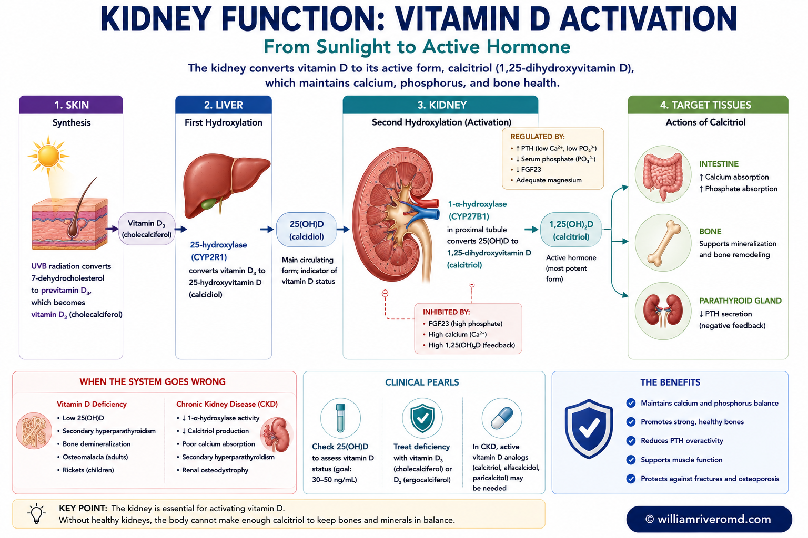
The kidney performs the final activation of vitamin D (calcitriol) via 1-alpha hydroxylase, enabling gut calcium absorption. In CKD, falling calcitriol drives secondary hyperparathyroidism and CKD-MBD.
Your kidneys perform the final, essential step that turns vitamin D into its active, usable form. Without this step, the vitamin D you get from sunlight or supplements cannot do its job in your body. The kidneys make this conversion happen in the proximal tubule, deep inside the kidney tissue.Ang iyong mga bato ay gumaganap ng huling, mahalagang hakbang upang gawing aktibo at magamit ang vitamin D. Kung wala ang hakbang na ito, ang vitamin D na nakukuha mo mula sa sikat ng araw o mga suplemento ay hindi makagagawa ng trabaho nito sa iyong katawan. Ginagawa ng mga bato ang conversion na ito sa proximal tubule, malalim sa loob ng kidney tissue.Ang imong mga kidney nagabuhat sa katapusan, hinungdan nga lakang nga naghimo sa vitamin D ngadto sa aktibo ug magamit nga porma. Kung wala kini nga lakang, ang vitamin D nga imong makuha gikan sa adlaw o mga supplement dili makahimo sa iyang trabaho sa imong lawas. Gibuhat sa mga kidney kini nga conversion sa proximal tubule, lawom sulod sa kidney tissue.Ing iyung mga kidney ing gaganap king katapusang, mahalagang hakbang para gawin ing vitamin D king aktibo at magagamit nang anyu. Malagpas king hakbang a iti, ing vitamin D a makuha mu king aldo o supplements e makaganap king obra na king katawan mu. Ginagawa da reng kidney ing conversion a iti king proximal tubule, maragul a lalim king kidney tissue.
How It WorksPaano Ito GumaganaUnsaon Kini PaglihokPapanung Iti Gumagana
The liver first converts dietary or sun-derived vitamin D into 25-hydroxyvitamin D. Then proximal tubular cells in the kidney use the enzyme 1-alpha hydroxylase to convert 25-hydroxyvitamin D into 1,25-dihydroxyvitamin D (calcitriol) — the fully active form. This enzyme is switched on by PTH (parathyroid hormone), low calcium, and low phosphate levels. It is switched off by FGF23, high phosphate, and CKD progression.Una, kino-convert ng atay ang dietary o sun-derived na vitamin D sa 25-hydroxyvitamin D. Pagkatapos, gumagamit ang mga proximal tubular cell sa bato ng enzyme na 1-alpha hydroxylase upang i-convert ang 25-hydroxyvitamin D sa 1,25-dihydroxyvitamin D (calcitriol) — ang ganap na aktibong anyo. Ang enzyme na ito ay sinisimulahan ng PTH (parathyroid hormone), mababang calcium, at mababang phosphate. Pinapatay ito ng FGF23, mataas na phosphate, at pag-unlad ng CKD.Ang atay una mag-convert sa dietary o sun-derived nga vitamin D ngadto sa 25-hydroxyvitamin D. Dayon, ang proximal tubular cells sa kidney mogamit sa enzyme nga 1-alpha hydroxylase para ma-convert ang 25-hydroxyvitamin D ngadto sa 1,25-dihydroxyvitamin D (calcitriol) — ang bug-os nga aktibong porma. Kini nga enzyme gi-on sa PTH (parathyroid hormone), ubos nga calcium, ug ubos nga phosphate. Gi-off kini sa FGF23, taas nga phosphate, ug pag-uswag sa CKD.Ing atay una mag-convert ning dietary o sun-derived vitamin D king 25-hydroxyvitamin D. Kasumpal, ing proximal tubular cells king kidney gagamit da king enzyme a 1-alpha hydroxylase para i-convert ing 25-hydroxyvitamin D king 1,25-dihydroxyvitamin D (calcitriol) — ing ganap a aktibong anyu. Ing enzyme a iti sinisimulahan na ng PTH (parathyroid hormone), mababa calcium, at mababa phosphate. Pinamamatay iti ning FGF23, mataas phosphate, at pag-usad ning CKD.
Why It MattersBakit Ito MahalagaNganong Importante KiniBakit Iti Importante
Active vitamin D (calcitriol) is the key that allows your intestines to absorb calcium from the food you eat. Without enough calcitriol, your bones cannot stay properly mineralized, leading to weakness, pain, and fractures. This one kidney-driven step connects what you eat to how strong your skeleton stays.Ang aktibong vitamin D (calcitriol) ang susi na nagbibigay-daan sa iyong mga bituka na sumipsip ng calcium mula sa pagkain. Kung walang sapat na calcitriol, hindi mananatiling maayos ang mineralisasyon ng iyong mga buto, na humahantong sa kahinaan, sakit, at mga bali. Ang isang hakbang na ito na pinamumunuan ng bato ay nag-uugnay ng iyong kinakain sa tibay ng iyong kalansay.Ang aktibong vitamin D (calcitriol) ang yawe nga nagtugot sa imong tinai nga moabsorb sa calcium gikan sa pagkaon. Kung walay igo nga calcitriol, ang imong mga bukog dili mapadayon ang husto nga mineralization, nga mosangput sa kahuyang, sakit, ug mga bali. Kini nga usa ka lakang nga gidumala sa kidney nag-ugnay sa imong gikaon sa kusog sa imong kalansay.Ing aktibong vitamin D (calcitriol) ing susi a nagpapayagan king iyung bituka na sumipsip ning calcium manipud king keni. Malagpas king sapat a calcitriol, ing iyung mga buto e mapanatiling maayus a mineralisasyon, pansamantala maging mhina, masakit, at mabali. Ing isang hakbang a iti a pinamumunuan ning kidney nag-uugnay king iyung kinakain king tibay ning iyung kalansay.
When This Function FailsKapag Nabigo ang Function na ItoKung Mapakyas Kini nga FunctionKung Mapakyas Ing Function a Iti
In CKD, reduced calcitriol production leads to poor intestinal calcium absorption, which triggers secondary hyperparathyroidism (the parathyroid glands overproduce PTH trying to compensate). This cascade causes CKD-Mineral Bone Disorder (CKD-MBD) — bone pain, increased fracture risk, and dangerous vascular calcification where calcium is deposited in blood vessel walls instead of bones.Sa CKD, ang nabawasan na produksyon ng calcitriol ay humahantong sa mahinang pagsipsip ng calcium sa bituka, na nagti-trigger ng secondary hyperparathyroidism (sobrang paggawa ng PTH ng mga parathyroid gland). Ang cascade na ito ay nagdudulot ng CKD-Mineral Bone Disorder (CKD-MBD) — sakit sa buto, mas mataas na panganib ng bali, at mapanganib na vascular calcification kung saan ang calcium ay nailalagay sa mga dingding ng daluyan ng dugo sa halip na sa mga buto.Sa CKD, ang nabawasan nga produksyon sa calcitriol mosangput sa poor nga intestinal calcium absorption, nga mopahinabo sa secondary hyperparathyroidism (ang mga parathyroid gland kupas kaayo og PTH). Kini nga cascade nagdala sa CKD-Mineral Bone Disorder (CKD-MBD) — sakit sa bukog, mas taas nga risgo sa bali, ug delikado nga vascular calcification diin ang calcium nadeposito sa mga dingding sa mga ugat sa dugo imbes sa mga bukog.King CKD, ing nabawasang produksyon ning calcitriol nagtutukso king mahinang pagsipsip ning calcium king bituka, na nagpapalabas ning secondary hyperparathyroidism (ing mga parathyroid gland sobreng gumagawa ning PTH). Ing cascade a iti nagdulot ning CKD-Mineral Bone Disorder (CKD-MBD) — sakit king buto, mas mataas a panganib ning bali, at mapanganib a vascular calcification nu nu ing calcium nailalagay king mga dingding ning ugat ning dugo imbes king mga buto.
Key TakeawayPangunahing AralPanguna nga Pagkat-onPangunahing Aral
The kidneys activate vitamin D so your bones stay strong and healthy.Ina-aktibo ng mga bato ang vitamin D upang manatiling malakas at malusog ang iyong mga buto.Gi-aktibo sa mga kidney ang vitamin D aron magpabilin nga kusog ug maayo ang imong mga bukog.Ing mga kidney nag-aaktibo ning vitamin D para manatiling malakas at malusog ing iyung mga buto.
Producing Klotho: The Longevity ProteinPaggawa ng Klotho: Ang Protina ng Mahabang BuhayPaghimo sa Klotho: Ang Protina sa PagkabuhiPaggawa ning Klotho: Ing Protina ning Matagal a Buhay
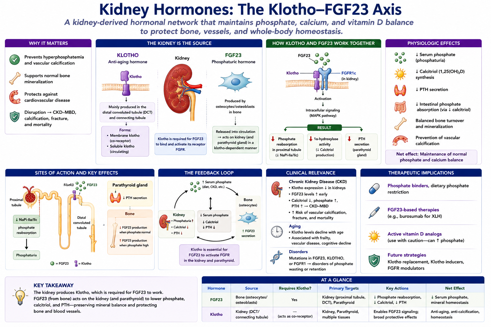
The kidney makes Klotho, the co-receptor for FGF23. Together they control phosphate and protect blood vessels. In CKD, falling Klotho drives phosphate retention and vascular aging.
Your kidneys are one of the body's main sources of Klotho, a powerful protective protein linked to healthier aging. Think of Klotho as an internal guardian — produced right inside the kidney — that shields your blood vessels and organs from premature wear. When kidneys are healthy, they supply the body with a steady stream of this remarkable molecule.Ang iyong mga bato ay isa sa mga pangunahing pinagmumulan ng Klotho sa katawan, isang makapangyarihang protektibong protina na nauugnay sa mas malusog na pagtanda. Isipin ang Klotho bilang isang panloob na tagapagtanggol — ginagawa mismo sa loob ng bato — na nagpoprotekta sa iyong mga ugat at organo mula sa maaga na pagod. Kapag malusog ang mga bato, nagbibigay sila sa katawan ng patuloy na daloy ng kahanga-hangang molekyul na ito.Ang imong mga kidney usa sa mga nag-unang gigikanan sa Klotho sa lawas, usa ka gamhanan nga protektibong protina nga nalangkit sa mas maayo nga pagtigulang. Hunahunaa ang Klotho ingon usa ka sulod nga tigpanalipod — gihimo sa sulod mismo sa kidney — nga nagpanalipod sa imong mga ugat ug organ gikan sa sayo nga pagkaguba. Kung maayo ang mga kidney, naghatag sila sa lawas og kanunay nga suplay sa talagsaon nga molekula.Ing iyung mga kidney isa king mga pangunahing pinagmumulan ning Klotho king katawan, isang makapangyarihang protektibong protina a naiugnay king mas malusog a pagtanda. Isipin ing Klotho bilang isang panloob a tagapagtanggol — ginagawa mismo sulod king kidney — na nagpoprotekta king iyung mga ugat at organ manipud king maaga a pagod. Nu malusog ing mga kidney, nagbibigay la king katawan ning tuloy-tuloy a suplay ning kahanga-hangang molekula a iti.
How It WorksPaano Ito GumaganaUnsaon Kini PaglihokPapanung Iti Gumagana
Kidney tubular epithelial cells produce two forms of Klotho: membrane-bound Klotho, which stays attached to the cell surface, and soluble Klotho, which is released into the blood to act on distant tissues. Membrane-bound Klotho serves as the essential co-receptor for FGF23; together, FGF23 and Klotho signal the kidney to excrete phosphate and suppress calcitriol production. Beyond FGF23, soluble Klotho has direct vascular-protective, anti-inflammatory, anti-fibrotic, and anti-calcification actions throughout the body.Ang mga kidney tubular epithelial cell ay gumagawa ng dalawang anyo ng Klotho: membrane-bound Klotho, na nananatiling nakakabit sa ibabaw ng cell, at soluble Klotho, na inilalabas sa dugo upang kumilos sa mga malalayong tisyu. Ang membrane-bound Klotho ay nagsisilbing mahalagang co-receptor para sa FGF23; magkasama, ang FGF23 at Klotho ay nag-uutos sa bato na mag-excrete ng phosphate at pigilan ang produksyon ng calcitriol. Higit sa FGF23, ang soluble Klotho ay may direktang vascular-protective, anti-inflammatory, anti-fibrotic, at anti-calcification na mga aksyon sa buong katawan.Ang kidney tubular epithelial cells nagahimo sa duha ka porma sa Klotho: membrane-bound Klotho, nga nagpabilin nga nakadugtong sa nawong sa cell, ug soluble Klotho, nga gipalabas sa dugo para molihok sa layo nga mga tisyu. Ang membrane-bound Klotho nagsilbing hinungdan nga co-receptor alang sa FGF23; magkauban, ang FGF23 ug Klotho nag-signal sa kidney nga mo-excrete sa phosphate ug mopugong sa produksyon sa calcitriol. Labaw sa FGF23, ang soluble Klotho adunay direktang vascular-protective, anti-inflammatory, anti-fibrotic, ug anti-calcification nga mga aksyon sa tibuok lawas.Ing kidney tubular epithelial cells gumagawa da reng adwang anyu ning Klotho: membrane-bound Klotho, a nananatiling nakakabit king ibabaw ning cell, at soluble Klotho, a inilalabas king dugo para kumilos king malayung mga tisyu. Ing membrane-bound Klotho nagsisilbing mahalagang co-receptor para king FGF23; magkasama, ing FGF23 at Klotho nag-uutos king kidney na mag-excrete ning phosphate at pigilan ing produksyon ning calcitriol. Labis king FGF23, ing soluble Klotho adwang direktang vascular-protective, anti-inflammatory, anti-fibrotic, at anti-calcification a mga aksyon king buong katawan.
Why It MattersBakit Ito MahalagaNganong Importante KiniBakit Iti Importante
Klotho actively protects your blood vessels from hardening and calcification, reduces inflammation, and guards tissues against scarring. High levels of Klotho are associated with slower biological aging and healthier cardiovascular outcomes. In this way, the kidneys are not just filters — they are active manufacturers of one of the body's most important longevity-promoting molecules.Aktibong pinoprotektahan ng Klotho ang iyong mga daluyan ng dugo mula sa pagtitigas at calcification, binabawasan ang pamamaga, at pinangangalagaan ang mga tisyu laban sa pag-ukit. Ang mataas na antas ng Klotho ay nauugnay sa mas mabagal na biological aging at mas malusog na mga resulta sa cardiovascular. Sa ganitong paraan, ang mga bato ay hindi lamang mga filter — sila ay aktibong gumagawa ng isa sa mga pinakamahalagang longevity-promoting na molekyul ng katawan.Aktibo nga ginapanalipdan sa Klotho ang imong mga ugat sa dugo gikan sa pagkagahi ug calcification, nagpaubos sa pamamaga, ug nagbantay sa mga tisyu batok sa pag-ukit. Ang taas nga lebel sa Klotho nalangkit sa mas hinay nga biological aging ug mas maayo nga mga resulta sa cardiovascular. Niining paagi, ang mga kidney dili lang mga panlihis — aktibong mga nagmanufacture sila sa usa sa labing hinungdan nga longevity-promoting nga molekula sa lawas.Aktibo ing Klotho a nagpoprotekta king iyung mga daluyan ning dugo manipud king pagtitigas at calcification, binabawasan ing pamamaga, at pinangangalagaan ing mga tisyu laban king pag-ukit. Ing mataas a antas ning Klotho naiugnay king mas bagal a biological aging at mas malusog a mga resulta sa cardiovascular. King paraan a iti, ing mga kidney e basta mga filter — aktibong mga gumagawa la ning isa king mga pinaka-importante a longevity-promoting a molekula ning katawan.
When This Function FailsKapag Nabigo ang Function na ItoKung Mapakyas Kini nga FunctionKung Mapakyas Ing Function a Iti
CKD dramatically reduces Klotho levels. This fall contributes to phosphate retention, FGF23 resistance (FGF23 rises but cannot signal properly without Klotho), accelerated vascular calcification, chronic inflammation, and premature vascular aging — all of which help explain why CKD patients face a much higher risk of heart disease even beyond what kidney failure alone would cause.Ang CKD ay dramatikong nagpapababa ng mga antas ng Klotho. Ang pagbagsak na ito ay nag-aambag sa pagpapanatili ng phosphate, FGF23 resistance (tumataas ang FGF23 ngunit hindi maayos na makapag-signal nang wala ang Klotho), pinabilis na vascular calcification, malalim na pamamaga, at maaga na pag-abot ng vascular aging — lahat ng ito ay tumutulong na ipaliwanag kung bakit ang mga pasyenteng may CKD ay nahaharap sa mas mataas na panganib ng sakit sa puso kahit higit pa sa magiging sanhi ng bigo sa bato lamang.Ang CKD grabe kaayo nagpaubos sa mga lebel sa Klotho. Kini nga paghulog nagtampo sa pagpabilin sa phosphate, FGF23 resistance (motaas ang FGF23 apan dili maayo nga makasignal nga walay Klotho), pinatulin nga vascular calcification, kronikong pamamaga, ug sayo nga vascular aging — tanan niini nagtabang pagpasabut ngano nga ang mga pasyente nga adunay CKD nag-atubang sa mas taas nga risgo sa sakit sa kasingkasing bisan lapas pa sa mahimong hinungdan sa pagsira sa kidney lamang.Ing CKD dramatiko a nagpapababa king mga antas ning Klotho. Ing pagbagsak a iti nag-aambag king pagpapanatili ning phosphate, FGF23 resistance (tumataas ing FGF23 ngunit e maayus a makapag-signal malagpas king Klotho), pinabilis a vascular calcification, malalim a pamamaga, at maaga a vascular aging — lahat da iti nagtutulang magpaliwanag bakit ing mga pasyente a adwang CKD nahaharap king mas mataas a panganib ning sakit king puso bisan higit pa king maguing sanhi ning pag-igo ning kidney lamang.
Key TakeawayPangunahing AralPanguna nga Pagkat-onPangunahing Aral
Healthy kidneys are a major source of Klotho, a protein that protects blood vessels and promotes healthier aging.Ang malusog na mga bato ay isang pangunahing pinagkukunan ng Klotho, isang protina na nagpoprotekta sa mga daluyan ng dugo at nagtataguyod ng mas malusog na pagtanda.Ang maayo nga mga kidney usa ka nag-unang gigikanan sa Klotho, usa ka protina nga nagpanalipod sa mga ugat sa dugo ug nagpasiugda sa mas maayo nga pagtigulang.Ing malusog a mga kidney isa king pangunahing pinagmumulan ning Klotho, isang protina a nagpoprotekta king mga daluyan ning dugo at nagtataguyod ning mas malusog a pagtanda.
Protecting Your BonesPagprotekta sa Iyong mga ButoPagpanalipod sa Imong mga BukogPagprotekta King Iyung mga Buto
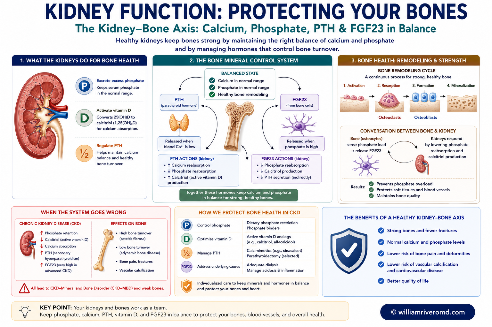
Bone strength depends on the kidney-run mineral-hormone loop. In CKD, high PTH, phosphate retention, and low calcitriol disturb bone turnover, causing renal osteodystrophy and fractures.
Your kidneys coordinate the entire hormonal system that keeps your bones strong. Bone health is not simply about eating enough calcium — it depends on a finely tuned network of hormones that the kidneys sit at the center of. When the kidneys are working well, this system runs quietly in the background, maintaining the right balance of minerals in your skeleton.Inoordinahan ng iyong mga bato ang buong sistema ng hormona na nagpapanatili ng tibay ng iyong mga buto. Ang kalusugan ng buto ay hindi lamang tungkol sa pagkain ng sapat na calcium — nakasalalay ito sa isang maingat na network ng mga hormona na ang mga bato ang nasa gitna nito. Kapag maayos ang trabaho ng mga bato, tahimik na tumatakbo ang sistemang ito sa background, pinapanatiling tama ang balanse ng mga mineral sa iyong kalansay.Ang imong mga kidney nag-coordinate sa tibuok sistemahanong hormona nga nagpadayon sa kusog sa imong mga bukog. Ang kalusugan sa bukog dili lamang bahin sa pagkaon og igo nga calcium — nagsalig kini sa usa ka maayo nga nag-tune nga network sa mga hormona nga ang mga kidney ang sentro niana. Kung maayo ang trabaho sa mga kidney, hilom kining nagdagan sa background, nagpadayon sa husto nga balanse sa mga mineral sa imong kalansay.Ing iyung mga kidney nag-coordinate king buong sistemang hormonal a nagpapanatili ning tibay ning iyung mga buto. Ing kalusugan ning buto e basta bahin king pagkain ning sapat a calcium — nakasalalay iti king maingat a network ning mga hormona a ing mga kidney ing nasa gitna nito. Nu maayus ing trabaho ning mga kidney, tahimik a tumatakbo ing sistema a iti king background, pinapanatiling tama ing balanse ning mga mineral king iyung kalansay.
How It WorksPaano Ito GumaganaUnsaon Kini PaglihokPapanung Iti Gumagana
The kidney regulates the calcium–phosphate–PTH–vitamin D–FGF23–Klotho axis: calcitriol (activated by the kidney) drives intestinal calcium absorption; the kidney excretes phosphate to prevent overload; PTH fine-tunes calcium retention and phosphate excretion; FGF23 (released from bone) signals the kidney to waste more phosphate and lower calcitriol; and Klotho is the essential co-receptor for FGF23 signaling. The skeleton itself communicates back to the kidney through FGF23, making bone and kidney true partners in mineral balance.Kinokontrol ng bato ang calcium–phosphate–PTH–vitamin D–FGF23–Klotho axis: ang calcitriol (ina-aktibo ng bato) ay nagpapatakbo ng pagsipsip ng calcium sa bituka; inilalabas ng bato ang phosphate upang maiwasan ang labis; ang PTH ay ayos-ayos ng pagpapanatili ng calcium at excreksyon ng phosphate; ang FGF23 (inilabas mula sa buto) ay nag-uutos sa bato na mag-waste ng mas maraming phosphate at magbaba ng calcitriol; at ang Klotho ang mahalagang co-receptor para sa FGF23 signaling. Ang kalansay mismo ay nagpapadala ng mensahe pabalik sa bato sa pamamagitan ng FGF23, na ginagawang tunay na mga kasosyo ang buto at bato sa mineral balance.Ang kidney nag-regulate sa calcium–phosphate–PTH–vitamin D–FGF23–Klotho axis: ang calcitriol (gi-aktibo sa kidney) nagpadagan sa intestinal calcium absorption; ang kidney nag-excrete sa phosphate para mapugngan ang sobra; ang PTH nagayos sa calcium retention ug phosphate excretion; ang FGF23 (gipagawas gikan sa bukog) nag-signal sa kidney nga mag-waste og mas daghang phosphate ug mopaubos sa calcitriol; ug ang Klotho ang hinungdan nga co-receptor alang sa FGF23 signaling. Ang kalansay mismo nagpadala og mensahe balik sa kidney pinaagi sa FGF23, nga naghimo sa bukog ug kidney nga tinuod nga mga partner sa mineral balance.Ing kidney nag-regulate king calcium–phosphate–PTH–vitamin D–FGF23–Klotho axis: ing calcitriol (ina-aktibo ning kidney) nagpapatakbo ning intestinal calcium absorption; ing kidney nag-excrete ning phosphate para maiwasan ing sobra; ing PTH nagaayus king calcium retention at phosphate excretion; ing FGF23 (inilabas manipud king buto) nag-uutos king kidney na mag-waste ning mas dakal a phosphate at magpababa ning calcitriol; at ing Klotho ing mahalagang co-receptor para king FGF23 signaling. Ing kalansay mismo nagpapadala ning mensahe pabalik king kidney sa pamamagitan ning FGF23, na ginagawang tunay a mga kasosyo ing buto at kidney king mineral balance.
Why It MattersBakit Ito MahalagaNganong Importante KiniBakit Iti Importante
Bone strength depends on this kidney-run hormonal balance, not just on dietary calcium. Even if you eat plenty of calcium and take vitamin D supplements, your skeleton cannot be properly maintained if the kidneys are not doing their part. This is why bone disease is so common — and so important to monitor and treat — in people with kidney disease.Ang tibay ng buto ay nakasalalay sa balanseng hormonal na pinamumunuan ng bato, hindi lamang sa dietary na calcium. Kahit kumain ka ng maraming calcium at uminom ng mga suplementong vitamin D, ang iyong kalansay ay hindi maayos na mapananatili kung ang mga bato ay hindi gumagawa ng kanilang bahagi. Ito ang dahilan kung bakit ang sakit sa buto ay napakarami — at napakahalaga na subaybayan at gamutin — sa mga taong may sakit sa bato.Ang kusog sa bukog nagsalig sa kining hormonal balance nga gidumala sa kidney, dili lamang sa dietary nga calcium. Bisan mokaon ka og daghang calcium ug moinom og mga supplement nga vitamin D, ang imong kalansay dili mapadayon kung ang mga kidney dili naghimo sa ilang bahin. Kini ang hinungdan ngano nga ang sakit sa bukog kacommon — ug kahinungdan kaayo nga bantayan ug trato — sa mga tawo nga adunay sakit sa kidney.Ing tibay ning buto nakasalalay king hormonal balance a pinamumunuan ning kidney, e basta king dietary calcium. Bisan kumain ka ning dakal a calcium at uminom ning mga suplementong vitamin D, ing iyung kalansay e maayus a mapanatili nu ing mga kidney e gumagawa ning kanilang bahagi. Iti ing dahilan bakit ing sakit king buto napakalalat — at napaka-importante a bantayan at gamutin — king mga taung adwang sakit king kidney.
When This Function FailsKapag Nabigo ang Function na ItoKung Mapakyas Kini nga FunctionKung Mapakyas Ing Function a Iti
Disruption of the kidney-bone axis in CKD causes renal osteodystrophy — abnormal bone turnover that can result in brittle, painful bones and increased fracture risk. Calcium and phosphate that should stay in bone end up deposited in blood vessels and heart valves (vascular and valvular calcification), dramatically increasing cardiovascular risk. Managing CKD-MBD with the right medications and diet can slow or prevent these complications.Ang pagkasagabal ng kidney-bone axis sa CKD ay nagdudulot ng renal osteodystrophy — abnormal na bone turnover na maaaring magresulta sa marupok, masakit na mga buto at mas mataas na panganib ng bali. Ang calcium at phosphate na dapat manatili sa buto ay nagtatapos na nadeposito sa mga daluyan ng dugo at mga balbula ng puso (vascular at valvular calcification), na dramatikong nagpapataas ng cardiovascular risk. Ang pamamahala ng CKD-MBD sa tamang mga gamot at diyeta ay maaaring magpabagal o maiwasan ang mga komplikasyong ito.Ang pagkaguba sa kidney-bone axis sa CKD nagdala sa renal osteodystrophy — abnormal nga bone turnover nga makapahimong nag-resulta sa mahina, masakit nga mga bukog ug mas taas nga risgo sa bali. Ang calcium ug phosphate nga kinahanglan magpabilin sa bukog nagtapos nadeposito sa mga ugat sa dugo ug mga balbula sa kasingkasing (vascular ug valvular calcification), nga dramatikong nagpataas sa cardiovascular risk. Ang pag-atiman sa CKD-MBD sa husto nga mga tambal ug diyeta makabagal o makapugong niini nga mga komplikasyon.Ing pagkasagabal ning kidney-bone axis king CKD nagdulot ning renal osteodystrophy — abnormal a bone turnover a makapagresulta king marupok, masakit a mga buto at mas mataas a panganib ning bali. Ing calcium at phosphate a dapat manatili king buto nagtatapos a nadeposito king mga daluyan ning dugo at mga balbula ning puso (vascular at valvular calcification), na dramatiko a nagpapataas ning cardiovascular risk. Ing pamamahala ning CKD-MBD king tamang mga gamut at diyeta makapagpabagal o makaiwasan king mga komplikasyon a iti.
Key TakeawayPangunahing AralPanguna nga Pagkat-onPangunahing Aral
The kidneys are central regulators of bone health, orchestrating the hormonal network that keeps your skeleton strong.Ang mga bato ay sentral na mga regulator ng kalusugan ng buto, inoorkestra ang hormonal network na nagpapanatili ng tibay ng iyong kalansay.Ang mga kidney sentral nga mga regulator sa kalusugan sa bukog, nag-orkestra sa hormonal network nga nagpadayon sa kusog sa imong kalansay.Ing mga kidney sentral a mga regulator ning kalusugan ning buto, nag-orkestra ning hormonal network a nagpapanatili ning tibay ning iyung kalansay.
Concentrating and Diluting UrinePag-konsentra at Pagpapalabi ng IhiPag-concentrate ug Pag-dilute sa IhiPag-concentrate at Pag-dilute ning Ihi
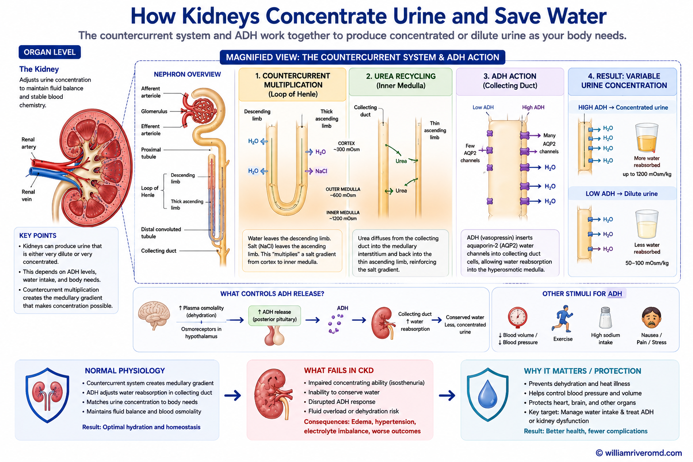
The kidney concentrates or dilutes urine using the medullary osmotic gradient and ADH-controlled aquaporins — conserving or releasing water to keep blood volume and sodium stable.
Your kidneys decide exactly how concentrated or dilute your urine will be, moment to moment, based on how much water your body needs. When you are dehydrated, they conserve water by making urine very concentrated. When you have had too much to drink, they release water by making urine very dilute. This precise control is what keeps the water content of your blood stable.Ang iyong mga bato ay nagpapasya kung gaano kaya o kalabo ng iyong ihi, sandali-sandali, batay sa dami ng tubig na kailangan ng iyong katawan. Kapag naluluma ka, iniingatan nila ang tubig sa pamamagitan ng paggawa ng napaka-konsentradong ihi. Kapag masyadong marami kang nainom, inilalabas nila ang tubig sa pamamagitan ng paggawa ng napaka-manipis na ihi. Ang tumpak na kontrol na ito ang nagpapanatiling matatag ng nilalaman ng tubig sa iyong dugo.Ang imong mga kidney nagdesisyon kung unsa ka concentrate o ka dilute ang imong ihi, matag-sandali, base sa kung pila ka tubig ang gikinahanglan sa imong lawas. Kung giuhaw ka, nagtipig sila og tubig pinaagi sa paghimo og napaka-concentrated nga ihi. Kung sobra ka og nainum, nagpagawas sila og tubig pinaagi sa paghimo og napaka-dilute nga ihi. Kini nga tumpak nga kontrol ang nagpadayon nga malig-on ang sulod nga tubig sa imong dugo.Ing iyung mga kidney nagpapasya kung nanu kaya o kalabo ning iyung ihi, sandali-sandali, batay king kung magkanu a tubig ing kailangan ning iyung katawan. Nu giuhaw ka, iniipon da ing tubig sa pamamagitan ning paggawa ning napaka-konsentradong ihi. Nu sobra ka a nainom, inilalabas da ing tubig sa pamamagitan ning paggawa ning napaka-manipis a ihi. Ing tumpak a kontrol a iti ing nagpapanatiling matatag ning nilalaman ning tubig king iyung dugo.
How It WorksPaano Ito GumaganaUnsaon Kini PaglihokPapanung Iti Gumagana
Concentration: The thick ascending limb pumps salt (NaCl) into the surrounding tissue via the NKCC2 transporter while being impermeable to water, building an osmotic gradient in the kidney's inner zone. Urea recycling in the collecting ducts deepens this gradient. When the body needs to save water, the brain releases ADH (antidiuretic hormone), which inserts AQP2 (aquaporin-2) water channels into collecting duct cells — water then follows the osmotic gradient back into the bloodstream, producing concentrated urine. Dilution: When ADH is low (after drinking plenty of fluids), AQP2 channels are removed, the collecting duct stays water-impermeable, solute continues to be removed without water, and dilute urine is excreted.Konsentrasyon: Ang makapal na ascending limb ay nagpupump ng asin (NaCl) sa nakapaligid na tisyu sa pamamagitan ng NKCC2 transporter habang hindi tumatawid ang tubig, nagtatayo ng osmotic gradient sa panloob na zone ng bato. Ang urea recycling sa mga collecting duct ay nagpapalim ng gradient na ito. Kapag kailangan ng katawan na mag-ipon ng tubig, ang utak ay naglalabas ng ADH (antidiuretic hormone), na naglalagay ng AQP2 (aquaporin-2) na mga water channel sa mga cell ng collecting duct — ang tubig ay sumusunod sa osmotic gradient pabalik sa agos ng dugo, na gumagawa ng konsentradong ihi. Dilution: Kapag mababa ang ADH (pagkatapos uminom ng maraming likido), tinatanggal ang mga AQP2 channel, nananatiling hindi tumatawid ng tubig ang collecting duct, patuloy na inaalis ang solute nang walang tubig, at inilalabas ang manipis na ihi.Concentration: Ang baga nga ascending limb nagpump og asin (NaCl) ngadto sa naglibut nga tisyu pinaagi sa NKCC2 transporter samtang dili makasulod ang tubig, nagpatukod og osmotic gradient sa sulod nga zone sa kidney. Ang urea recycling sa mga collecting duct nagpadalom niini nga gradient. Kung gikinahanglan sa lawas nga magtipig og tubig, ang utok nagpagawas og ADH (antidiuretic hormone), nga nagsal-ang og AQP2 (aquaporin-2) nga mga water channel sa mga cell sa collecting duct — ang tubig mosunod sa osmotic gradient balik ngadto sa agos sa dugo, nagprodusir og concentrated nga ihi. Dilution: Kung ubos ang ADH (human sa pag-inum og daghang likido), gitanggal ang mga AQP2 channel, nagpabilin ang collecting duct nga dili makasulod ang tubig, nagpadayon ang pag-tanggal sa solute nga walay tubig, ug gipagawas ang dilute nga ihi.Konsentrasyon: Ing makapal a ascending limb nagpupump ning asin (NaCl) king nakapaligid a tisyu sa pamamagitan ning NKCC2 transporter habang e tumatawid ing tubig, nagtatatayo ning osmotic gradient king panloob a zone ning kidney. Ing urea recycling king mga collecting duct nagpapalim ning gradient a iti. Nu kailangan ning katawan na mag-ipon ning tubig, ing utok naglalabas ning ADH (antidiuretic hormone), na naglalagay ning AQP2 (aquaporin-2) a mga water channel king mga cell ning collecting duct — ing tubig sumusunod king osmotic gradient pabalik king agus ning dugo, gumagawa ning konsentradong ihi. Dilution: Nu mababa ing ADH (kasumpal ning pag-inom ning dakal a likido), tinatanggal da ing mga AQP2 channel, nananatiling e tumatawid ning tubig ing collecting duct, patuloy a inaalis ing solute malagpas king tubig, at inilalabas ing manipis a ihi.
Why It MattersBakit Ito MahalagaNganong Importante KiniBakit Iti Importante
This dual ability — to concentrate when you are dry and dilute when you are overloaded — is what lets you stay in balance no matter what you drink. It means your blood does not become dangerously salty when you forget to drink, and does not become dangerously diluted when you drink too much. The kidneys protect you at both extremes.Ang kakayahang ito na dualistic — mag-concentrate kapag tuyo ka at mag-dilute kapag labis ka — ang nagpapahintulot sa iyo na manatiling balanse anuman ang iyong inumin. Nangangahulugan ito na ang iyong dugo ay hindi nagiging mapanganib na maalat kapag nakalimutan mong uminom, at hindi nagiging mapanganib na madiluted kapag masyadong marami kang nainom. Pinoprotektahan ka ng mga bato sa parehong sukdulan.Kining duha ka abilidad — mag-concentrate kung giuhaw ka ug mag-dilute kung sobra ka — ang nagtugot sa iyo nga magpabilin nga balanse bisan unsa ang imong imnon. Nagpasabot kini nga ang imong dugo dili mahimong delikadong ma-asin kung malimtan mong moinum, ug dili mahimong delikadong madiluted kung sobra ka og inum. Ginapanalipdan ka sa mga kidney sa duha ka sukdulan.Ing kakayahang dualista a iti — mag-concentrate nu tuyo ka at mag-dilute nu sobra ka — ing nagpapahintulot sa iyo na manatiling balanse anuman ing iyung inumin. Nangangahulugan iti na ing iyung dugo e nagiging mapanganib a maalat nu makalimutan mong uminom, at e nagiging mapanganib a madiluted nu masyadong dakal kang nainom. Pinoprotektahan kang da reng kidney king adwang sukdulan.
When This Function FailsKapag Nabigo ang Function na ItoKung Mapakyas Kini nga FunctionKung Mapakyas Ing Function a Iti
When the kidney loses its ability to concentrate urine, large volumes of dilute urine are produced (polyuria), causing frequent nighttime urination (nocturia) and ongoing risk of dehydration. When the ability to dilute urine is impaired, the body cannot get rid of excess water, leading to dangerous low sodium in the blood (hyponatremia). Both failure modes are common in advanced CKD.Kapag nawawala ng bato ang kakayahang mag-concentrate ng ihi, malaking dami ng manipis na ihi ang ginagawa (polyuria), na nagdudulot ng madalas na pag-ihi sa gabi (nocturia) at patuloy na panganib ng dehydration. Kapag nasasagabal ang kakayahang mag-dilute ng ihi, hindi maalis ng katawan ang labis na tubig, na humahantong sa mapanganib na mababang sodium sa dugo (hyponatremia). Ang parehong uri ng pagkabigo ay karaniwan sa advanced na CKD.Kung mawad-an ang kidney sa kakayahan sa pag-concentrate sa ihi, dako nga volume sa dilute nga ihi ang gihimo (polyuria), nga nagdala sa kanunay nga pag-ihi sa gabii (nocturia) ug padayong risgo sa dehydration. Kung masagabal ang kakayahan sa pag-dilute sa ihi, dili matagoan sa lawas ang sobrang tubig, nga mosangput sa delikadong ubos nga sodium sa dugo (hyponatremia). Ang duha ka matang pagkabigo nagsabot sa advanced nga CKD.Nu mawala king kidney ing kakayahang mag-concentrate ning ihi, malaking dami ning manipis a ihi ing ginagawa (polyuria), na nagdudulot ning madalas a pag-ihi king gabi (nocturia) at patuloy a panganib ning dehydration. Nu nasasagabal ing kakayahang mag-dilute ning ihi, e maalis ning katawan ing labis a tubig, na nagpapahantong king mapanganib a mababang sodium king dugo (hyponatremia). Ing adwang uri ning pagkabigo karaniwan king advanced a CKD.
Key TakeawayPangunahing AralPanguna nga Pagkat-onPangunahing Aral
The kidneys determine how much water is lost or conserved, keeping your blood perfectly balanced whether you are thirsty or overhydrated.Tinutukoy ng mga bato kung gaano karaming tubig ang nawawala o naiingatan, pinapanatiling perpektong balanse ang iyong dugo kahit uhaw ka man o sobra ang tubig sa iyong katawan.Ang mga kidney nagtino kung pila ka tubig ang nawala o natipigan, nagpadayon nga perpektong balanse ang imong dugo bisan giuhaw ka o sobra og tubig sa imong lawas.Ing mga kidney nagtutukoy kung magkanu a tubig ing nawawala o naiingatan, pinapanatiling perpektong balanse ing iyung dugo bisan giuhaw ka o sobra ing tubig king iyung katawan.
Producing Glucose During FastingPaggawa ng Glucose sa Panahon ng Pag-aayunoPaghimo sa Glucose sa Panahon sa Pag-puasaPaggawa ning Glucose King Panahon ning Pag-aayuno

The kidney is the body's second glucose-producing organ — making about a quarter of fasting glucose. Glutamine metabolism uniquely makes glucose and removes acid at the same time.
Most people are surprised to learn that the kidneys actually make glucose — they are the body's second most important glucose-producing organ, after the liver. During fasting or overnight, when you have not eaten for hours, the kidneys quietly manufacture glucose from other molecules and release it into the bloodstream to keep your brain and muscles fueled. This remarkable ability contributes roughly a quarter of the body's fasting glucose production.Karamihan sa mga tao ay nagugulat na malaman na ang mga bato ay aktwal na gumagawa ng glucose — sila ang pangalawang pinakamahalagang organ na gumagawa ng glucose sa katawan, pagkatapos ng atay. Sa panahon ng pag-aayuno o sa gabi, kapag hindi ka kumain nang maraming oras, tahimik na gumagawa ang mga bato ng glucose mula sa iba pang mga molekyul at inilalabas ito sa agos ng dugo upang mapanatiling may gasolina ang iyong utak at mga kalamnan. Ang kahanga-hangang kakayahang ito ay nag-aambag ng halos isang ikaapat ng produksyon ng fasting glucose ng katawan.Kadaghanan sa mga tawo nagkatingala nga makakat-on nga ang mga kidney aktwal nga naghimo og glucose — sila ang ikaduha nga labing hinungdan nga organ nga naghimo og glucose sa lawas, human sa atay. Sa panahon sa pag-puasa o sa gabii, kung wala ka pa kakaon og daghang oras, hilom nga naghimo ang mga kidney og glucose gikan sa ubang mga molekula ug nagpagawas niana ngadto sa agos sa dugo aron mapadayon ang imong utok ug mga kalamnan nga may gasolina. Kini nga talagsaon nga abilidad nagtampo og halos usa ka ikaupat sa fasting glucose production sa lawas.Karamian king mga tau nasasamber na matutu na ing mga kidney aktwal a gumagawa ning glucose — ila ing pangalawang pinaka-importante a organ a gumagawa ning glucose king katawan, kasumpal ning atay. King panahon ning pag-aayuno o king gabi, nu e ka pa kumain ning dakal a oras, tahimik a gumagawa ing mga kidney ning glucose manipud king ibang mga molekula at inilalabas iti king agus ning dugo para mapanatiling may gasolina ing iyung utak at mga kalamnan. Ing kahanga-hangang kakayahan a iti nag-aambag ning halos isang ikaapat ning fasting glucose production ning katawan.
How It WorksPaano Ito GumaganaUnsaon Kini PaglihokPapanung Iti Gumagana
Glucose production (gluconeogenesis) takes place mainly in the cortical proximal tubular cells. Raw materials include lactate, glutamine, glycerol, and alanine. Key enzymes — pyruvate carboxylase, PEPCK, fructose-1,6-bisphosphatase, and glucose-6-phosphatase — convert these substrates into glucose, which is then released directly into the bloodstream (glucose-6-phosphatase is the gate that allows free glucose to exit the cell). There is a remarkable bonus: the kidney's use of glutamine for gluconeogenesis simultaneously generates bicarbonate and removes acid — so during metabolic acidosis, the kidney ramps up glutamine uptake, accomplishing both acid excretion and glucose production at once.Ang produksyon ng glucose (gluconeogenesis) ay nagaganap pangunahin sa cortical proximal tubular cells. Ang mga hilaw na materyales ay kinabibilangan ng lactate, glutamine, glycerol, at alanine. Ang mga pangunahing enzyme — pyruvate carboxylase, PEPCK, fructose-1,6-bisphosphatase, at glucose-6-phosphatase — ay nag-co-convert ng mga substratong ito sa glucose, na pagkatapos ay inilalabas nang direkta sa agos ng dugo (ang glucose-6-phosphatase ang pintuan na nagpapahintulot sa libreng glucose na lumabas sa cell). May kahanga-hangang bonus: ang paggamit ng bato ng glutamine para sa gluconeogenesis ay sabay na nagge-generate ng bicarbonate at nag-aalis ng acid — kaya sa panahon ng metabolic acidosis, pinapalaki ng bato ang pagsipsip ng glutamine, tinutupad ang parehong excreksyon ng acid at produksyon ng glucose nang sabay-sabay.Ang produksyon sa glucose (gluconeogenesis) nahitabo pangunahin sa cortical proximal tubular cells. Ang mga hilaw nga materyales naglakip sa lactate, glutamine, glycerol, ug alanine. Ang mga panguna nga enzyme — pyruvate carboxylase, PEPCK, fructose-1,6-bisphosphatase, ug glucose-6-phosphatase — nag-convert niini nga mga substrate ngadto sa glucose, nga dayon gipagawas direkta ngadto sa agos sa dugo (ang glucose-6-phosphatase ang pultahan nga nagtugot sa gawasnong glucose nga moubos gikan sa cell). Adunay talagsaon nga bonus: ang paggamit sa kidney sa glutamine alang sa gluconeogenesis sabay naggenerate og bicarbonate ug nagtanggal og acid — busa sa panahon sa metabolic acidosis, nagpadako ang kidney sa glutamine uptake, natupad ang duha ka excreksyon sa acid ug produksyon sa glucose sa usa ka higayon.Ing produksyon ning glucose (gluconeogenesis) nagaganap pangunahin king cortical proximal tubular cells. Ing mga hilaw a materyales kinabibilangan da reng lactate, glutamine, glycerol, at alanine. Ing mga pangunahing enzyme — pyruvate carboxylase, PEPCK, fructose-1,6-bisphosphatase, at glucose-6-phosphatase — nag-co-convert king mga substratong iti king glucose, a kasumpal inilalabas nang direkta king agus ning dugo (ing glucose-6-phosphatase ing pintuan a nagpapahintulot king libreng glucose na lumabas king cell). Adwang kahanga-hangang bonus: ing paggamit ning kidney ning glutamine para king gluconeogenesis sabay a nagge-generate ning bicarbonate at nag-aalis ning acid — kaya king panahon ning metabolic acidosis, pinapalaki ning kidney ing pagsipsip ning glutamine, tinutupad ing parehong excreksyon ning acid at produksyon ning glucose nang sabay-sabay.
Why It MattersBakit Ito MahalagaNganong Importante KiniBakit Iti Importante
The kidneys help keep your blood sugar stable while you sleep and during periods of fasting. By contributing around a quarter of the body's glucose production during fasting, they take significant pressure off the liver and ensure a steady energy supply to the brain. The dual role — making glucose and clearing acid at the same time — shows just how efficiently the kidney handles multiple jobs simultaneously.Tinutulungan ng mga bato ang pagpapanatili ng iyong blood sugar na matatag habang natutulog ka at sa mga panahon ng pag-aayuno. Sa pamamagitan ng pag-aambag ng halos isang ikaapat ng produksyon ng glucose ng katawan sa panahon ng pag-aayuno, binabawasan nila ang malaking presyon sa atay at tinitiyak ang patuloy na supply ng enerhiya sa utak. Ang dual role — paggawa ng glucose at pag-alis ng acid sa parehong oras — ay nagpapakita kung gaano kahusay ng bato ang pag-handle ng maraming trabaho nang sabay-sabay.Ang mga kidney nagtabang sa pagpadayon sa imong blood sugar nga malig-on samtang natulog ka ug sa mga panahon sa pag-puasa. Pinaagi sa pagtampo og halos usa ka ikaupat sa produksyon sa glucose sa lawas sa panahon sa pag-puasa, nagpaubos sila og dakong presyon gikan sa atay ug nagsiguro og kanunay nga suplay sa enerhiya ngadto sa utok. Ang dual role — paghimo og glucose ug pag-tanggal og acid sa samang higayon — nagpakita kung unsa ka episyente ang kidney sa pag-atiman sa daghang trabaho sa usa ka higayon.Tinutulungan da reng kidney ing pagpapanatili ning iyung blood sugar a matatag habang natutulog ka at king mga panahon ning pag-aayuno. Sa pamamagitan ning pag-aambag ning halos isang ikaapat ning produksyon ning glucose ning katawan king panahon ning pag-aayuno, binabawasan da ing malaking presyon king atay at tinitiyak ing patuloy a suplay ning enerhiya king utak. Ing dual role — paggawa ning glucose at pag-alis ning acid king parehong oras — nagpapakita kung nanu kahusay ning kidney ing pag-handle ning dakal a trabaho nang sabay-sabay.
When This Function FailsKapag Nabigo ang Function na ItoKung Mapakyas Kini nga FunctionKung Mapakyas Ing Function a Iti
In advanced CKD, renal gluconeogenesis is significantly reduced. At the same time, the damaged kidneys also clear insulin from the blood more slowly, so insulin stays active longer than expected. Together, these two changes sharply increase the risk of hypoglycemia (dangerously low blood sugar) — especially in people with diabetes who take insulin or sulfonylurea medications. Doses that were once safe may become too strong as kidney function declines, so careful medication adjustment is essential.Sa advanced na CKD, ang renal gluconeogenesis ay makabuluhang nabawasan. Sa parehong oras, ang nasirang mga bato ay mas mabagal din na naglilinis ng insulin mula sa dugo, kaya ang insulin ay nananatiling aktibo nang mas matagal kaysa inaasahan. Magkasama, ang dalawang pagbabagong ito ay mabilis na nagpapataas ng panganib ng hypoglycemia (mapanganib na mababang blood sugar) — lalo na sa mga taong may diabetes na umiinom ng insulin o mga gamot na sulfonylurea. Ang mga dosis na dating ligtas ay maaaring maging masyadong malakas habang bumababa ang function ng bato, kaya ang maingat na pag-aayos ng gamot ay mahalaga.Sa advanced nga CKD, ang renal gluconeogenesis grabe kaayo nabawasan. Sa samang higayon, ang nadaot nga mga kidney mas hinay usab sa pag-limpyo sa insulin gikan sa dugo, busa ang insulin nagpabilin nga aktibo og mas dugay kaysa gilauman. Magkauban, kining duha ka pagbag-o kusog kaayo nagpataas sa risgo sa hypoglycemia (delikadong ubos nga blood sugar) — espesyal sa mga tawo nga adunay diabetes nga nag-inom og insulin o mga tambal nga sulfonylurea. Ang mga dosis nga kaniadto luwas mahimong sobra ka kusog habang moubos ang function sa kidney, busa ang maingat nga pag-adjust sa tambal importante kaayo.King advanced a CKD, ing renal gluconeogenesis makabuluhang nabawasan. King parehong oras, ing nasirang mga kidney mas bagal usab a naglilinis ning insulin manipud king dugo, kaya ing insulin nananatiling aktibo nang mas matagal kaysa inaasahan. Magkasama, ing adwang pagbabago a iti mabilis a nagpapataas ning panganib ning hypoglycemia (mapanganib a mababang blood sugar) — lalo na king mga taung adwang diabetes a umiinom ning insulin o mga gamut a sulfonylurea. Ing mga dosis a dating ligtas maaring maging masyadong malakas habang bumababa ing function ning kidney, kaya ing maingat a pag-aayos ning gamut mahalaga.
Key TakeawayPangunahing AralPanguna nga Pagkat-onPangunahing Aral
The kidneys are the second most important glucose-producing organ after the liver, helping keep blood sugar stable during fasting — and their loss raises hypoglycemia risk in CKD.Ang mga bato ang pangalawang pinaka-mahalagang organ na gumagawa ng glucose pagkatapos ng atay, na tumutulong sa pagpapanatiling matatag ng blood sugar sa panahon ng pag-aayuno — at ang kanilang pagkawala ay nagpapataas ng panganib ng hypoglycemia sa CKD.Ang mga kidney ang ikaduha nga labing hinungdan nga organ nga naghimo og glucose human sa atay, nagtabang sa pagpadayon nga malig-on ang blood sugar sa panahon sa pag-puasa — ug ang ilang pagkawala nagpataas sa risgo sa hypoglycemia sa CKD.Ing mga kidney ing pangalawang pinaka-importante a organ a gumagawa ning glucose kasumpal ning atay, nagtutulang mapanatiling matatag ing blood sugar king panahon ning pag-aayuno — at ing kanilang pagkawala nagpapataas ning panganib ning hypoglycemia king CKD.
Supporting the Immune SystemPagsuporta sa Immune SystemPagssuporta sa Immune SystemPagsaportahan ing Immune System
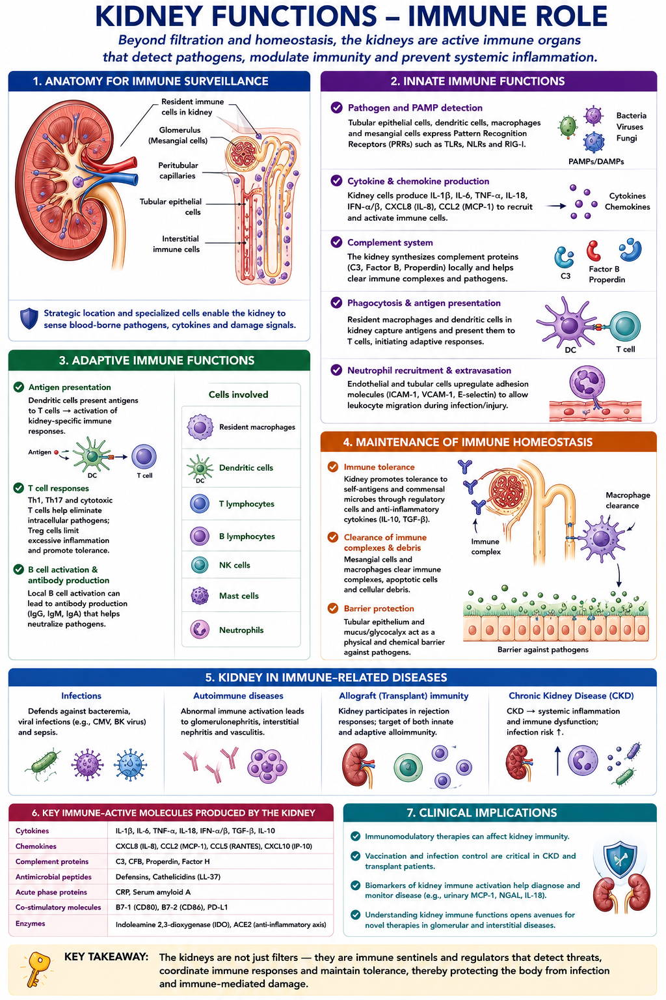
The kidney is immunologically active — its cells release immune signals and its activated vitamin D and Klotho keep inflammation in balance. CKD shifts this toward chronic inflammation.
Kidneys take an active part in immune regulation, not just filtration. They help control inflammation, fight infection, and keep the immune system balanced — roles that most people never associate with the kidney.Ang mga bato ay aktibong kalahok sa immune regulation, hindi lamang sa pag-filter. Tumutulong sila sa pagkontrol ng pamamaga, paglaban sa impeksyon, at pagpapanatili ng balanse ng immune system — mga papel na karaniwang hindi iniuugnay ng mga tao sa bato.Ang mga kidney aktibo nga nagaparte sa immune regulation, dili lamang sa pagsala. Nagtabang sila sa pagkontrol sa inflammation, pagsaway sa impeksyon, ug pagpadayon sa balanse sa immune system — mga papel nga kasagaran dili giugnay sa kidney.Ing mga kidney aktibo king immune regulation, eya la rin balu filtration. Tumulong la king pagkontrol ning inflammation, paglaban king impeksyon, at pagpanatili ning balanse ning immune system — mga papel a madalas eya augnayan king kidney.
How It WorksPaano Ito GumaganaUnsaon Kini PagganaMakamanu Ini Gumagana
Kidney tubular epithelial cells act as immune-active cells — producing cytokines, chemokines, and antimicrobial signals during stress, and interacting with innate immune pathways. Calcitriol (activated by the kidney) influences macrophages, T cells, and dendritic cells. Klotho suppresses inflammatory signaling. The kidney also filters and metabolizes some inflammatory mediators, clearing them from the circulation.Ang tubular epithelial cells ng bato ay gumaganap bilang immune-active cells — gumagawa ng cytokines, chemokines, at antimicrobial signals sa panahon ng stress, at nakikipag-ugnayan sa innate immune pathways. Ang calcitriol (na na-activate ng bato) ay nakakaimpluwensya sa macrophages, T cells, at dendritic cells. Ang Klotho ay nagpapigil ng inflammatory signaling. Ang bato rin ay nagfi-filter at nag-metabolize ng ilang inflammatory mediators, na inaalis ang mga ito sa sirkulasyon.Ang tubular epithelial cells sa kidney molihok ingon immune-active cells — nagaprodyus og cytokines, chemokines, ug antimicrobial signals sa panahon sa stress, ug nakig-interact sa innate immune pathways. Ang calcitriol (na-activate sa kidney) nakaapekto sa macrophages, T cells, ug dendritic cells. Ang Klotho nagpugngan sa inflammatory signaling. Ang kidney nagsala usab ug nag-metabolize sa pipila ka inflammatory mediators, gipapahawa sila sa sirkulasyon.Ing tubular epithelial cells ning kidney gumagawa bilang immune-active cells — nagproduce ning cytokines, chemokines, at antimicrobial signals king panahon ning stress, at nakikipag-ugnayan king innate immune pathways. Ing calcitriol (na-activate ning kidney) nakakaimpluwensya king macrophages, T cells, at dendritic cells. Ing Klotho nagpigil ning inflammatory signaling. Ang kidney nagsala rin at nag-metabolize ning ilan inflammatory mediators, inialis la keng sirkulasyon.
Why It MattersBakit Ito MahalagaNgano Kini ImportanteBakit Iti Mahalaga
A balanced kidney-supported immune system fights infection without causing chronic inflammation. When kidneys are healthy, the immune response is calibrated — strong enough to defend you, restrained enough not to damage your own tissues.Ang isang balanseng immune system na sinusuportahan ng bato ay lumalaban sa impeksyon nang hindi nagiging sanhi ng talamak na pamamaga. Kapag malusog ang mga bato, ang immune response ay naayos — sapat na lakas para ipagtanggol ka, ngunit sapat na pigil para hindi makapinsala sa sariling mga tisyu.Ang balanseng immune system nga gisuportahan sa kidney nagpakigaway sa impeksyon nga walay hinungdan nga chronic inflammation. Sa maayo nga kidney, ang immune response gikalibrahan — igo lig-on aron depensahan ka, igo usab aron dili makadaot sa imong kaugalingong tisyu.Ing balanseng immune system a sinusuportahan ning kidney lumalaban king impeksyon nang eya paging sanhi ning talamak a inflammation. Nung malusug ing mga kidney, ing immune response naayus — masustansya para depensahan ka, pigil naman para eya makapinsala king sariling mga tisyu.
When This Function FailsKapag Nabigo ang Tungkuling ItoSa Dihang Napakyas Kini nga GimbuhatonNung Nampasan Ing Tungkuling Ini
CKD promotes chronic low-grade inflammation, higher infection risk, and accelerates vascular disease, malnutrition, anemia, and CKD progression. The immune system becomes simultaneously under-responsive to infections and over-reactive with systemic inflammation.Ang CKD ay nagtataguyod ng talamak na mababang antas ng pamamaga, mas mataas na panganib ng impeksyon, at nagpapabilis ng sakit na vascular, malnutrition, anemia, at pagsulong ng CKD. Ang immune system ay sabay na nagiging hindi sapat ang tugon sa mga impeksyon at sobrang reaktibo sa sistematikong pamamaga.Ang CKD nagpasikat sa chronic low-grade inflammation, mas taas nga risgo sa impeksyon, ug nagpadali sa vascular disease, malnutrition, anemia, ug pagsulong sa CKD. Ang immune system nahimong dunay kulang nga tubag sa mga impeksyon ug sobra ka reaktibo sa systemic inflammation.Ing CKD nagtataguyod ning talamak a mababang antas ning inflammation, mas mataas a panganib ning impeksyon, at nagpapabilis ning sakit na vascular, malnutrition, anemia, at pagsulong ning CKD. Ing immune system sabay naging hindi sapat ing tugon king mga impeksyon at sobrang reaktibo king systemic inflammation.
Key TakeawayPangunahing AralPanguna nga LeksyonPangunahing Aral
Healthy kidneys support a balanced immune system.Ang malusog na mga bato ay sumusuporta sa isang balanseng immune system.Ang maayo nga mga kidney nagsuporta sa balanseng immune system.Ing malusug a mga kidney sumusuporta king balanseng immune system.
Acting as an Oxygen SensorPaggawa bilang Oxygen SensorPaglihok ingon Oxygen SensorGumagawa Bilang Oxygen Sensor
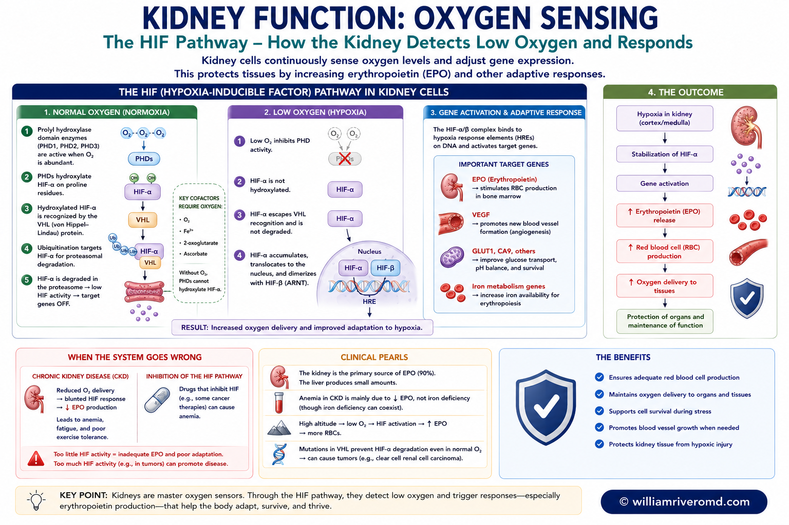
The kidney senses oxygen through the PHD-HIF switch: low oxygen stabilizes HIF, turning on erythropoietin and adaptation. CKD impairs this, contributing to anemia and tubulointerstitial hypoxia.
Kidneys continuously monitor the body's oxygen delivery. They detect when oxygen falls and trigger adaptations — including making more red blood cells — to restore adequate oxygen to every tissue in the body.Ang mga bato ay patuloy na sinusubaybayan ang paghahatid ng oxygen sa katawan. Natatukoy nila kung kailan bumababa ang oxygen at nagti-trigger ng mga adaptasyon — kabilang ang paggawa ng mas maraming pulang selula ng dugo — upang maibalik ang sapat na oxygen sa bawat tisyu ng katawan.Ang mga kidney padayon nga nagmonitor sa paghatod sa oxygen sa lawas. Nakamatikod sila kon kanus-a mokunhod ang oxygen ug nagapalitok sa mga adaptasyon — lakip ang paghimo og daghang pula nga selula sa dugo — aron maibalik ang igo nga oxygen sa matag tisyu sa lawas.Ing mga kidney patuloy a sinusubaybayan ing paghahatid ning oxygen king katawan. Natutukoy la nung kailan bababa ing oxygen at nagta-trigger ning mga adaptasyon — kasama na ing paggawa ning mas maraming pulang selula ning dugo — para maibalik ing sapat a oxygen king bawat tisyu ning katawan.
How It WorksPaano Ito GumaganaUnsaon Kini PagganaMakamanu Ini Gumagana
The cortex and outer medulla work near a delicate oxygen balance because tubular transport is energy-intensive. Peritubular interstitial cells detect oxygen tension. Low oxygen inhibits prolyl hydroxylase, which stabilizes HIF (hypoxia-inducible factor) transcription factors, changing gene transcription — increasing EPO production, improving oxygen delivery, and driving metabolic adaptation throughout the body.Ang cortex at outer medulla ay gumagana malapit sa isang delikadong balanse ng oxygen dahil ang tubular transport ay nangangailangan ng maraming enerhiya. Ang peritubular interstitial cells ay nakaka-detect ng oxygen tension. Ang mababang oxygen ay pumipigil sa prolyl hydroxylase, na nagpapatatag ng HIF (hypoxia-inducible factor) transcription factors, na nagbabago ng gene transcription — nagpapataas ng produksyon ng EPO, nagpapabuti ng paghahatid ng oxygen, at nagtataguyod ng metabolic adaptation sa buong katawan.Ang cortex ug outer medulla nagtrabaho haduol sa delikadong balanse sa oxygen tungod kay ang tubular transport nagkinahanglan og daghang enerhiya. Ang peritubular interstitial cells nakakasensord sa oxygen tension. Ang ubos nga oxygen nagpugngan sa prolyl hydroxylase, nagpalig-on sa HIF (hypoxia-inducible factor) transcription factors, nagbag-o sa gene transcription — nagpatubo sa produksyon sa EPO, nagpauswag sa paghatod sa oxygen, ug nagdumala sa metabolic adaptation sa tibuok lawas.Ing cortex at outer medulla nagtrabaho malapit king delikadong balanse ning oxygen dahil ing tubular transport nangangailangan ning maraming enerhiya. Ing peritubular interstitial cells nakakadetect ning oxygen tension. Ing mababang oxygen pumipigil king prolyl hydroxylase, nagpapanatag king HIF (hypoxia-inducible factor) transcription factors, nagbabago ning gene transcription — nagpapataas ning produksyon ning EPO, nagpapabuti ning paghahatid ning oxygen, at nagtataguyod ning metabolic adaptation sa buong katawan.
Why It MattersBakit Ito MahalagaNgano Kini ImportanteBakit Iti Mahalaga
This oxygen sensor links oxygen status to red-cell production and tissue protection. Without it, your body could not respond to low-oxygen states such as altitude, blood loss, or anemia — and could not protect energy-hungry tissues during periods of reduced oxygen delivery.Ang oxygen sensor na ito ay naguugnay ng katayuan ng oxygen sa produksyon ng mga pulang selula at proteksyon ng tisyu. Kung wala ito, ang iyong katawan ay hindi makakatugon sa mga estado ng mababang oxygen tulad ng altitude, pagkawala ng dugo, o anemia — at hindi makapoprotekta sa mga tisyung nagangangailangan ng maraming enerhiya sa panahon ng nabawasang paghahatid ng oxygen.Kining oxygen sensor nagkonektar sa kahimtang sa oxygen ngadto sa produksyon sa pula nga selula ug proteksyon sa tisyu. Kung wala kini, ang imong lawas dili makatubag sa mga kahimtang nga ubos ang oxygen sama sa altitude, pagkawala sa dugo, o anemia — ug dili makaprotekta sa mga tisyu nga nagkinahanglan og daghang enerhiya sa panahon sa gikunhurang paghatod sa oxygen.Ing oxygen sensor ini nagkonekta king katayuan ning oxygen king produksyon ning mga pulang selula at proteksyon ning tisyu. Nung wala ini, ing katawan mo eya makakatugon king mga estado ning mababang oxygen tulad ning altitude, pagkawala ning dugo, o anemia — at eya makapoprotekta king mga tisyung nangangailangan ning maraming enerhiya king panahon ning nabawasang paghahatid ning oxygen.
When This Function FailsKapag Nabigo ang Tungkuling ItoSa Dihang Napakyas Kini nga GimbuhatonNung Nampasan Ing Tungkuling Ini
CKD causes capillary rarefaction, fibrosis, mitochondrial dysfunction, and impaired oxygen sensing — EPO production falls and tubulointerstitial hypoxia drives further progression. This is a key reason why anemia develops in CKD and why kidney disease tends to worsen over time in a self-reinforcing cycle.Ang CKD ay nagdudulot ng capillary rarefaction, fibrosis, mitochondrial dysfunction, at kapansanan sa oxygen sensing — ang produksyon ng EPO ay bumababa at ang tubulointerstitial hypoxia ay nagtataguyod ng karagdagang pagsulong. Ito ang isang pangunahing dahilan kung bakit nagkakaroon ng anemia sa CKD at kung bakit ang sakit sa bato ay may tendensyang lumala sa paglipas ng panahon sa isang sarili na nagpapatibay na siklo.Ang CKD nagadala sa capillary rarefaction, fibrosis, mitochondrial dysfunction, ug kapansanan sa oxygen sensing — ang produksyon sa EPO mokuha ug ang tubulointerstitial hypoxia nagdumala sa labi pang pag-uswag. Mao kini ang usa sa mga hinungdan kung ngano naugmad ang anemia sa CKD ug kung ngano ang sakit sa kidney nagapadayon sa paggrabe sa paglabay sa panahon sa usa ka self-reinforcing cycle.Ing CKD nagdudulot ning capillary rarefaction, fibrosis, mitochondrial dysfunction, at kapansanan king oxygen sensing — ing produksyon ning EPO bumababa at ing tubulointerstitial hypoxia nagtataguyod ning karagdagang pagsulong. Ito ing isa sa mga pangunahing dahilan kung bakit nagkakaroon ning anemia sa CKD at kung bakit ing sakit ning bato may tendensyang lumala sa paglipas ning panahon king isang sariling nagpapatibay a siklo.
Key TakeawayPangunahing AralPanguna nga LeksyonPangunahing Aral
The kidneys continuously monitor oxygen availability.Ang mga bato ay patuloy na sinusubaybayan ang availability ng oxygen.Ang mga kidney padayon nga nagmonitor sa availability sa oxygen.Ing mga kidney patuloy a sinusubaybayan ing availability ning oxygen.
Protecting Your Heart and Blood VesselsPagprotekta sa Iyong Puso at mga Daluyan ng DugoPagprotekta sa Imong Kasingkasing ug mga Ugat sa DugoPagprotekta king Puso mo at mga Ugat ning Dugo
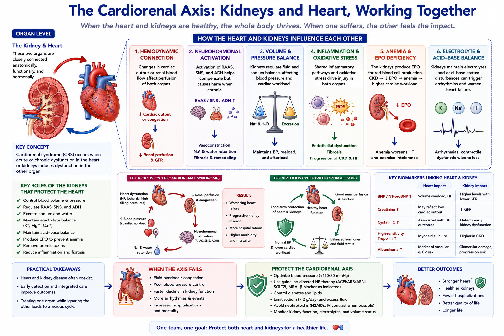
Kidney disease is cardiovascular disease: through volume, electrolyte, acid-base, EPO, and mineral control, healthy kidneys protect the heart and blood vessels.
Through many mechanisms at once, kidneys protect the heart and blood vessels. This is one of the most important — and least appreciated — roles of healthy kidney function. When kidneys work well, your cardiovascular system is quietly defended every moment of every day.Sa pamamagitan ng maraming mekanismo nang sabay-sabay, ang mga bato ay nagpoprotekta sa puso at mga daluyan ng dugo. Ito ay isa sa pinakamahalaga — at pinaka-hindi pinapahalagahan — na papel ng malusog na paggana ng bato. Kapag maayos ang trabaho ng mga bato, ang iyong cardiovascular system ay tahimik na pinoprotektahan sa bawat sandali ng araw.Pinaagi sa daghang mekanismo sa usa ka higayon, ang mga kidney nagprotekta sa kasingkasing ug mga ugat sa dugo. Mao kini ang usa sa labing importante — ug labing dili gipahalagahan — nga papel sa maayo nga paggana sa kidney. Sa maayo nga trabaho sa mga kidney, ang imong cardiovascular system hilom nga giprotektahan sa matag higayon sa matag adlaw.Sa pamamagitan ning maraming mekanismo sabay-sabay, ing mga kidney nagpoprotekta king puso at mga ugat ning dugo. Ito ing isa sa pinakamahalaga — at pinaka-hindi pinapahalagahan — a papel ning malusug a paggana ning kidney. Nung maayus ing trabaho ning mga kidney, ing cardiovascular system mo tahimik a pinoprotektahan sa bawat sandali ning araw.
How It WorksPaano Ito GumaganaUnsaon Kini PagganaMakamanu Ini Gumagana
The kidney protects the heart through volume regulation, sodium regulation, potassium regulation (preventing arrhythmias), blood-pressure regulation via the renin-angiotensin-aldosterone system, EPO production (preventing anemia-driven cardiac stress), mineral metabolism (controlling phosphate, calcium, FGF23, Klotho, and calcitriol), and direct Klotho production. Together these mechanisms limit left-ventricular hypertrophy, heart failure, arrhythmias, and vascular calcification.Ang bato ay nagpoprotekta sa puso sa pamamagitan ng volume regulation, sodium regulation, potassium regulation (pag-iwas ng arrhythmias), regulasyon ng presyon ng dugo sa pamamagitan ng renin-angiotensin-aldosterone system, produksyon ng EPO (pag-iwas ng cardiac stress na dulot ng anemia), mineral metabolism (pagkontrol ng phosphate, calcium, FGF23, Klotho, at calcitriol), at direktang produksyon ng Klotho. Magkasama ang mga mekanismong ito ay nagpipigil ng left-ventricular hypertrophy, heart failure, arrhythmias, at vascular calcification.Ang kidney nagprotekta sa kasingkasing pinaagi sa volume regulation, sodium regulation, potassium regulation (pagpugong sa arrhythmias), regulasyon sa presyon sa dugo pinaagi sa renin-angiotensin-aldosterone system, produksyon sa EPO (pagpugong sa cardiac stress tungod sa anemia), mineral metabolism (pagkontrol sa phosphate, calcium, FGF23, Klotho, ug calcitriol), ug direktang produksyon sa Klotho. Magkuban kining mga mekanismo nagpugong sa left-ventricular hypertrophy, heart failure, arrhythmias, ug vascular calcification.Ing kidney nagpoprotekta king puso sa pamamagitan ning volume regulation, sodium regulation, potassium regulation (pag-iwas ning arrhythmias), regulasyon ning presyon ning dugo sa pamamagitan ning renin-angiotensin-aldosterone system, produksyon ning EPO (pag-iwas ning cardiac stress mula anemia), mineral metabolism (pagkontrol ning phosphate, calcium, FGF23, Klotho, at calcitriol), at direktang produksyon ning Klotho. Magkasama ing mga mekanismong ini nagpipigil ning left-ventricular hypertrophy, heart failure, arrhythmias, at vascular calcification.
Why It MattersBakit Ito MahalagaNgano Kini ImportanteBakit Iti Mahalaga
Kidney disease IS a cardiovascular disease — the two organs rise and fall together. Heart attack, stroke, and heart failure are the leading causes of death in kidney disease patients. Understanding this connection helps explain why controlling kidney disease protects the heart, and vice versa.Ang sakit sa bato AY isang cardiovascular disease — ang dalawang organo ay sabay na sumusulong at bumabagsak. Ang heart attack, stroke, at heart failure ay ang mga nangungunang sanhi ng kamatayan sa mga pasyenteng may sakit sa bato. Ang pag-unawa sa koneksyong ito ay tumutulong na ipaliwanag kung bakit ang pagkontrol ng sakit sa bato ay nagpoprotekta sa puso, at vice versa.Ang sakit sa kidney AY usa ka cardiovascular disease — ang duha ka organo nagtaas ug nanaog sa usa ka higayon. Ang heart attack, stroke, ug heart failure ang mga nanguna nga hinungdan sa kamatayon sa mga pasyente sa sakit sa kidney. Ang pagsabot niining koneksyon nagtabang sa pagpasabot kung ngano ang pagkontrol sa sakit sa kidney nagprotekta sa kasingkasing, ug bise versa.Ing sakit ning kidney AY isang cardiovascular disease — ing dalawang organo sabay sumusulong at bumabagsak. Ing heart attack, stroke, at heart failure ing mga nangungunang sanhi ning kamatayan king mga pasyenteng may sakit ning kidney. Ing pag-unawa king koneksyong ini tumutulong na ipaliwanag kung bakit ing pagkontrol ning sakit ning kidney nagpoprotekta king puso, at bise versa.
When This Function FailsKapag Nabigo ang Tungkuling ItoSa Dihang Napakyas Kini nga GimbuhatonNung Nampasan Ing Tungkuling Ini
CKD raises risk of hypertension, heart failure, left-ventricular hypertrophy, arrhythmia, vascular calcification, heart attack, and stroke. Each of these risks is directly linked to a specific kidney function that has declined — making cardiovascular protection one of the most compelling reasons to preserve kidney health.Ang CKD ay nagpapataas ng panganib ng hypertension, heart failure, left-ventricular hypertrophy, arrhythmia, vascular calcification, heart attack, at stroke. Ang bawat isa sa mga panganib na ito ay direktang naka-ugnay sa isang tiyak na tungkulin ng bato na bumaba — na ginagawang proteksyon sa cardiovascular ang isa sa mga pinaka-nakakaakit na dahilan para pangalagaan ang kalusugan ng bato.Ang CKD nagpataas sa risgo sa hypertension, heart failure, left-ventricular hypertrophy, arrhythmia, vascular calcification, heart attack, ug stroke. Ang matag usa niining mga risgo direkta nga konektado sa usa ka piho nga gimbuhaton sa kidney nga mikunhod — nagahimo sa cardiovascular protection ingon usa sa labing makadani nga mga rason aron pangalagaan ang kahimsog sa kidney.Ing CKD nagpapataas ning panganib ning hypertension, heart failure, left-ventricular hypertrophy, arrhythmia, vascular calcification, heart attack, at stroke. Bawat isa sa mga panganib na ini direkta a konektado king isang tiyak a tungkulin ning kidney a bumaba — ginagawa ing cardiovascular protection bilang isa sa mga pinaka-nakaakit a dahilan para pangalagaan ing kalusugan ning kidney.
Key TakeawayPangunahing AralPanguna nga LeksyonPangunahing Aral
Kidney disease is also a cardiovascular disease.Ang sakit sa bato ay isang cardiovascular disease din.Ang sakit sa kidney usa usab ka cardiovascular disease.Ing sakit ning kidney cardiovascular disease naman.
Maintaining Overall Balance: HomeostasisPagpapanatili ng Pangkalahatang Balanse: HomeostasisPagpadayon sa Kinatibuk-ang Balanse: HomeostasisPagpapanatili ning Pangkalahatang Balanse: Homeostasis

The kidney integrates every signal — pressure, osmolality, oxygen, hormones, electrolytes, acid-base — to keep the internal environment stable, answering ten regulatory questions every second.
The kidneys integrate every other function to keep the body's internal environment stable. No matter what you eat, drink, or do, your kidneys are working continuously to hold blood chemistry within a narrow safe range — a feat of biological engineering that we rarely notice until it begins to fail.Ang mga bato ay nag-iintegrate ng bawat ibang tungkulin upang panatilihing matatag ang panloob na kapaligiran ng katawan. Anuman ang iyong kinain, inumin, o ginawa, ang iyong mga bato ay patuloy na nagtatrabaho upang panatilihin ang kimika ng dugo sa loob ng isang makitid na ligtas na hanay — isang nagawa ng biological engineering na bihira naming mapansin hanggang sa magsimula itong mabigo.Ang mga kidney nagintegrate sa matag laing gimbuhaton aron mapadayon ang lig-on nga internal nga palibot sa lawas. Bisan unsa ang imong gikaon, giinom, o gibuhat, ang imong mga kidney padayon nga nagtrabaho aron mapabilin ang kimika sa dugo sulod sa makitid nga luwas nga hanay — usa ka kahimo sa biological engineering nga dili nato kasagaran mapansin hangtod magsugod kini sa pagpakyas.Ing mga kidney nagintegrate king bawat ibang tungkulin para panatilihing matatag ing panloob a kapaligiran ning katawan. Anuman ing kanin, inumin, o gawan mo, ing mga kidney mo patuloy a nagtatrabaho para mapanatili ing kimika ning dugo sa loob ning makitid a ligtas a hanay — isang nagawa ning biological engineering a bihira naming mapansin hanggang sa magsimula itong mabigo.
How It WorksPaano Ito GumaganaUnsaon Kini PagganaMakamanu Ini Gumagana
The kidney integrates signals from blood-pressure sensors, osmoreceptors, oxygen sensors, hormones, electrolyte concentrations, and acid-base status, then continuously adjusts filtration, reabsorption, secretion, and hormone production. The glomerulus sets the filtered load; the proximal tubule recovers solutes and performs metabolism; the loop of Henle builds osmotic gradients; the distal nephron fine-tunes sodium, potassium, calcium, magnesium, and acid-base; the collecting duct integrates aldosterone and vasopressin; the juxtaglomerular apparatus regulates renin and GFR feedback; and the interstitium makes EPO and senses oxygen.Ang bato ay nag-iintegrate ng mga signal mula sa blood-pressure sensors, osmoreceptors, oxygen sensors, hormones, konsentrasyon ng electrolyte, at katayuan ng acid-base, pagkatapos ay patuloy na nag-a-adjust ng filtration, reabsorption, secretion, at produksyon ng hormone. Ang glomerulus ay nagtatakda ng filtered load; ang proximal tubule ay nagbawi ng mga solute at nagsasagawa ng metabolism; ang loop of Henle ay nagtatayo ng mga osmotic gradient; ang distal nephron ay nag-fine-tune ng sodium, potassium, calcium, magnesium, at acid-base; ang collecting duct ay nag-iintegrate ng aldosterone at vasopressin; ang juxtaglomerular apparatus ay nag-reregulate ng renin at GFR feedback; at ang interstitium ay gumagawa ng EPO at nakakakita ng oxygen.Ang kidney nagintegrate sa mga signal gikan sa blood-pressure sensors, osmoreceptors, oxygen sensors, hormones, konsentrasyon sa electrolyte, ug kahimtang sa acid-base, unya padayon nga nag-adjust sa filtration, reabsorption, secretion, ug produksyon sa hormone. Ang glomerulus nagbutang sa filtered load; ang proximal tubule nagkuha og mga solute ug naghimo sa metabolism; ang loop of Henle nagtukod og mga osmotic gradient; ang distal nephron nag-fine-tune sa sodium, potassium, calcium, magnesium, ug acid-base; ang collecting duct nagintegrate sa aldosterone ug vasopressin; ang juxtaglomerular apparatus nag-regulate sa renin ug GFR feedback; ug ang interstitium naghimo sa EPO ug nagsensord sa oxygen.Ing kidney nagintegrate ning mga signal mula blood-pressure sensors, osmoreceptors, oxygen sensors, hormones, konsentrasyon ning electrolyte, at katayuan ning acid-base, pagkatapos patuloy na nag-a-adjust ning filtration, reabsorption, secretion, at produksyon ning hormone. Ing glomerulus nagtatakda ning filtered load; ing proximal tubule nagbawi ning mga solute at nagsasagawa ning metabolism; ing loop of Henle nagtatayo ning mga osmotic gradient; ing distal nephron nag-fine-tune ning sodium, potassium, calcium, magnesium, at acid-base; ing collecting duct nagintegrate ning aldosterone at vasopressin; ing juxtaglomerular apparatus nag-reregulate ning renin at GFR feedback; at ing interstitium gumagawa ning EPO at nakakadetect ning oxygen.
Why It MattersBakit Ito MahalagaNgano Kini ImportanteBakit Iti Mahalaga
Homeostasis is why your blood chemistry stays steady despite changing diet and activity. It is the reason you can eat a salty meal, run a marathon, or go a day without water — and still have near-normal blood values. Healthy kidneys are doing this silently, for every minute of your life.Ang homeostasis ang dahilan kung bakit nananatiling matatag ang kimika ng iyong dugo sa kabila ng pagbabago ng diyeta at aktibidad. Ito ang dahilan kung bakit maaari kang kumain ng maalat na pagkain, tumakbo ng marathon, o mamuhay ng isang araw nang walang tubig — at mayroon pa ring halos normal na mga halaga ng dugo. Ang malusog na mga bato ay tahimik na ginagawa ito, bawat minuto ng iyong buhay.Ang homeostasis ang rason kung ngano magpabilin nga lig-on ang kimika sa imong dugo bisan mag-ilis ang pagkuha ug kalihokan. Mao kini ang rason kung ngano makakaon ka og maasinan nga pagkain, motakbo og marathon, o mabuhi og usa ka adlaw nga walay tubig — ug adunay pa gihapon hapit normal nga mga kantidad sa dugo. Ang maayo nga mga kidney hilom kining gibuhat, sa matag minuto sa imong kinabuhi.Ing homeostasis ing dahilan kung bakit nananatiling matatag ing kimika ning dugo mo bisa't magbago ing diyeta at aktibidad. Ito ing dahilan kung bakit makakaain ka ning maalat a pagkain, tumakbo ning marathon, o mabuhay ng isang araw nang walang tubig — at mayroon pang halos normal a mga halaga ning dugo. Ing malusug a mga kidney tahimik a ginagawa ini, bawat minuto ning buhay mo.
When This Function FailsKapag Nabigo ang Tungkuling ItoSa Dihang Napakyas Kini nga GimbuhatonNung Nampasan Ing Tungkuling Ini
When the kidney fails, ALL of these regulated systems drift at once — which is why kidney failure affects the whole body. Blood pressure, potassium, acid levels, fluid balance, bone health, red blood cell production, and immune function all deteriorate simultaneously. This is why kidney failure is a whole-body condition, not just a "kidney problem."Kapag nabigo ang bato, LAHAT ng mga regulated na sistemang ito ay sabay-sabay na nagbabago — kaya naman ang pagkabigo ng bato ay nakakaapekto sa buong katawan. Ang presyon ng dugo, potassium, antas ng acid, balanse ng likido, kalusugan ng buto, produksyon ng pulang selula ng dugo, at immune function ay sabay-sabay na lumalala. Kaya naman ang pagkabigo ng bato ay isang kondisyon ng buong katawan, hindi lamang isang "problema sa bato."Sa dihang mapakyas ang kidney, TANAN niining regulated nga mga sistema nagsulod sa kalihukan sa usa ka higayon — mao kini ang rason kung ngano ang pagpakyas sa kidney nakaapekto sa tibuok lawas. Ang presyon sa dugo, potassium, antas sa acid, balanse sa tubig, kahimsog sa bukog, produksyon sa pula nga selula sa dugo, ug immune function naglala sabay-sabay. Mao kini ang rason kung ngano ang pagpakyas sa kidney usa ka kondisyon sa tibuok lawas, dili lamang usa ka "problema sa kidney."Nung mabigo ing kidney, LAHAT ning mga regulated na sistemang ini sabay-sabay na nagbabago — kaya naman ing pagkabigo ning kidney nakakaapekto sa buong katawan. Ing presyon ning dugo, potassium, antas ning acid, balanse ning likido, kalusugan ning buto, produksyon ning pulang selula ning dugo, at immune function sabay-sabay na lumalala. Kaya naman ing pagkabigo ning kidney isang kondisyon ning buong katawan, eya rin balu "problema ning kidney."
Key TakeawayPangunahing AralPanguna nga LeksyonPangunahing Aral
The kidneys are the body's master homeostatic organs.Ang mga bato ang mga pangunahing homeostatic na organo ng katawan.Ang mga kidney ang panguna nga homeostatic nga mga organo sa lawas.Ing mga kidney ing pangunahing homeostatic na mga organo ning katawan.
The Ten Questions Your Kidneys Answer Every SecondAng Sampung Tanong na Sinasagot ng Iyong mga Bato Bawat SegundoAng Napulo ka Pangutana nga Gitubag sa Imong mga Kidney Matag SegundoIng Sampung Tanong a Sinasagot ning Mga Kidney Mo Bawat Segundo
1) How much water to keep? 2) How much sodium to keep? 3) How much potassium to remove? 4) How much acid to remove? 5) How much bicarbonate to generate? 6) How much phosphate to remove? 7) Is oxygen delivery adequate? 8) Should blood pressure rise or fall? 9) Should more red blood cells be made? 10) Should urine be concentrated or diluted?1) Gaano karaming tubig ang itatago? 2) Gaano karaming sodium ang itatago? 3) Gaano karaming potassium ang aalisin? 4) Gaano karaming acid ang aalisin? 5) Gaano karaming bicarbonate ang gagawin? 6) Gaano karaming phosphate ang aalisin? 7) Sapat ba ang paghahatid ng oxygen? 8) Dapat bang tumaas o bumaba ang presyon ng dugo? 9) Dapat bang gumawa ng mas maraming pulang selula ng dugo? 10) Dapat bang i-concentrate o i-dilute ang ihi?1) Pila ka tubig ang ipabili? 2) Pila ka sodium ang ipabili? 3) Pila ka potassium ang tangtangon? 4) Pila ka acid ang tangtangon? 5) Pila ka bicarbonate ang buhaton? 6) Pila ka phosphate ang tangtangon? 7) Igo ba ang paghatod sa oxygen? 8) Kinahanglan ba nga motaas o moubos ang presyon sa dugo? 9) Kinahanglan ba nga maghimo og daghang pula nga selula sa dugo? 10) Kinahanglan ba nga i-concentrate o i-dilute ang ihi?1) Maganung tubig ing itatago? 2) Maganung sodium ing itatago? 3) Maganung potassium ing aalisin? 4) Maganung acid ing aalisin? 5) Maganung bicarbonate ing gagawin? 6) Maganung phosphate ing aalisin? 7) Sapat ba ing paghahatid ning oxygen? 8) Dapat bang tumaas o bumaba ing presyon ning dugo? 9) Dapat bang gumawa ning mas maraming pulang selula ning dugo? 10) Dapat bang i-concentrate o i-dilute ing ihi?
The Kidneys Never Truly RestAng mga Bato ay Hindi Tunay na NagpapahingaAng mga Bato Dili Gayod MopahulayDing Bato Ala Talagan Mapagpahingayan

The kidneys work continuously for life; during sleep GFR dips 10-20% and ADH conserves water. Their functional reserve absorbs extra demand, and reducing hyperfiltration (RAAS blockade, SGLT2) is the closest thing to rest.
In practical terms, the kidneys never truly rest. Unlike skeletal muscle, which can stop contracting, or the gastrointestinal tract, which has periods of relative inactivity, the kidneys work continuously from before birth until death.Sa praktikal na paraan, ang mga bato ay hindi tunay na nagpapahinga. Hindi tulad ng skeletal muscle, na maaaring huminto sa pag-contraction, o ng gastrointestinal tract, na may mga panahon ng kamag-aanang kawalan ng aktibidad, ang mga bato ay patuloy na gumagawa mula bago pa ipanganak hanggang sa kamatayan.Sa praktikal nga paagi, ang mga bato dili gayod mopahulay. Dili sama sa skeletal muscle, nga makaundang sa pag-co-contract, o sa gastrointestinal tract, nga adunay mga panahon sa relatibong kawad-on sa kalihokan, ang mga bato nagtrabaho nga walay hunong sukad sa wala pa matawo hangtod sa kamatayon.King praktikal a paraan, ding bato ala talagan mapagpahingayan. Agpang king skeletal muscle, king malyari yang tumigil king pag-contraction, o king gastrointestinal tract, king atin yang panahon ning kamag-anang kawalan ning aktibidad, ding bato nagtrabaho nang tuluy-tuloy mula bago pa ipanganak angga king kamatayan.
Why the Kidneys Cannot RestBakit Hindi Mapahinga ang mga BatoNgano nga Dili Makapahulay ang mga BatoBaket Ala Makapagpahinga Ding Bato
Every second, the kidneys must continuously filter blood, regulate water, sodium, and potassium, maintain acid-base balance, control blood pressure, monitor oxygen levels, produce hormones, remove toxins, and adjust urine composition. If the kidneys stopped working for even a few minutes, blood chemistry would begin to drift away from its healthy range.Sa bawat segundo, ang mga bato ay dapat patuloy na mag-filter ng dugo, mag-regulate ng tubig, sodium, at potassium, mapanatili ang acid-base balance, kontrolin ang presyon ng dugo, subaybayan ang antas ng oxygen, gumawa ng hormones, mag-alis ng mga lason, at ayusin ang komposisyon ng ihi. Kung hihinto ang mga bato kahit ilang minuto lamang, ang chemistry ng dugo ay magsisimulang lumayo sa malusog nitong hanay.Matag segundo, ang mga bato kinahanglan nga mag-filter sa dugo nga walay hunong, mag-regulate sa tubig, sodium, ug potassium, mapadayon ang acid-base balance, kontrolon ang presyon sa dugo, bantayan ang lebel sa oxygen, maghimo ug hormones, magtangtang sa mga hilo, ug mag-adjust sa komposisyon sa ihi. Kon mohunong ang mga bato bisan pipila ka minuto lang, ang chemistry sa dugo magsugod sa pag-drift palayo sa iyang himsog nga hanay.King balang segundo, ding bato kailangan dang tuluy-tuluyang mag-filter ning daga, mag-regulate ning tubig, sodium, at potassium, mapanatili ing acid-base balance, kontrolen ing presyon ning daga, subaybayan ing antas ning oxygen, gumawa ning hormones, mag-alis ning mga lason, at ayusen ing komposisyon ning ihi. Nung titigil ding bato kahit pira minutu lang, ing chemistry ning daga magsisimulang lumayo king malusog nang hanay.
What Happens During Sleep — The kidneys do not stop working during sleep, but their workload changes.Ano ang Nangyayari Habang Natutulog — Hindi tumitigil ang mga bato sa paggawa habang natutulog, ngunit nagbabago ang kanilang trabaho.Unsa ang Mahitabo Samtang Natulog — Ang mga bato dili mohunong sa pagtrabaho samtang natulog, apan ang ilang trabaho mausab.Nanu ing Mangyari Habang Natutulog — Ding bato ali titigil king pagtrabahu habang natutulog, numan magbago ing kareng trabahu.
Blood Flow Falls SlightlyBahagyang Bumababa ang Daloy ng DugoGamay nga Nahulog ang Pag-agos sa DugoMekaynti lang Bumaba ing Daloy ning Daga
Renal blood flow decreases modestly during sleep.Ang daloy ng dugo sa mga bato ay bahagyang bumababa sa panahon ng pagtulog.Ang pag-agos sa dugo sa mga bato nahulog ug gamay sa panahon sa pagtulog.Ing daloy ning daga king mga bato bumaba ning mekaynti habang natutulog.
GFR Falls SlightlyBahagyang Bumababa ang GFRAng GFR Gamay nga NahulogMekaynti lang Bumaba ing GFR
The glomerular filtration rate declines by roughly 10–20%.Ang glomerular filtration rate ay bumababa ng halos 10–20%.Ang glomerular filtration rate nagkunhod ug mga 10–20%.Ing glomerular filtration rate bumaba king mga 10–20%.
Urine Production FallsBumababa ang Produksyon ng IhiAng Paghimo sa Ihi NahulogBumaba ing Produksyon ning Ihi
Nighttime secretion of vasopressin (ADH) increases, causing more water reabsorption and less urine — which is why healthy people generally do not need to urinate often overnight.Ang secretion ng vasopressin (ADH) sa gabi ay tumataas, na nagdudulot ng mas maraming muling pagsipsip ng tubig at mas kaunting ihi — kaya naman ang mga malusog na tao sa pangkalahatan ay hindi kailangang umihi nang madalas sa gabi.Ang secretion sa vasopressin (ADH) sa gabii motaas, nga maoy hinungdan sa mas daghang reabsorption sa tubig ug gamay nga ihi — mao kana nga ang mga himsog nga tawo sa kasagaran dili kinahanglan mag-ihi ng sagad sa gabii.Ing secretion ning vasopressin (ADH) king gabi tumaas, at iti nagiging dahilan ning mas dakal pang muling pagsipsip ning tubig at mas kaynti pang ihi — kaya naman ding malusog a tau sa pangkalahatan ali kailangan ang mag-ihi nang magagawa king gabi.
Sodium Is RetainedNaiingatan ang SodiumAng Sodium GibalikIningatan ing Sodium
The kidneys hold on to slightly more sodium and water during sleep.Ang mga bato ay nagtataglay ng kaunti pang sodium at tubig sa panahon ng pagtulog.Ang mga bato nagpabilin ug gamay pa nga sodium ug tubig sa panahon sa pagtulog.Ding bato nagtatago ning mekaynti pang sodium at tubig habang natutulog.
Do Nephrons Take Turns Resting?Nagpalitan ba ang mga Nephrons sa Pagpapahinga?Ang mga Nephrons ba Nagpalilis sa Pagpahulay?Nagpalitan ba Ding Nephrons king Pagpapahinga?
Not really. All functioning nephrons are active at the same time — they do not rotate shifts.Hindi talaga. Lahat ng gumaganang nephrons ay aktibo sa parehong oras — hindi sila nagpapalitan ng shift.Dili gayod. Ang tanan nga nagtrabahong nephrons aktibo sa samang higayon — dili sila nagpalilis ug shift.Ali talaga. Ding lahat a gumaganang nephrons aktibo king parehong oras — ali sila nagpalitan ning shift.
Renal Functional ReserveRenal Functional ReserveRenal Functional ReserveRenal Functional Reserve
Healthy kidneys have far more capacity than they normally use. Two kidneys hold about 2 million nephrons, and a healthy person can donate one kidney and stay well. After a high-protein meal, in pregnancy, or under stress, GFR and single-nephron filtration rise. So the kidneys have "reserve" — but not "rest."Ang malusog na mga bato ay may mas maraming kakayahan kaysa sa karaniwang ginagamit nila. Ang dalawang bato ay may humigit-kumulang 2 milyong nephrons, at ang isang malusog na tao ay maaaring mag-donate ng isang bato at manatiling maayos. Pagkatapos ng pagkain na may mataas na protina, sa pagbubuntis, o sa ilalim ng stress, ang GFR at single-nephron filtration ay tumataas. Kaya ang mga bato ay may "reserve" — ngunit hindi "pahinga."Ang himsog nga mga bato adunay mas daghang kapasidad kay sa kasagarang gigamit nila. Ang duha ka bato nagdala ug mga 2 milyong nephrons, ug ang usa ka himsog nga tawo makadonar ug usa ka bato ug mamaayo pa. Human sa pagkaon nga adunay taas nga protina, sa pagmabdos, o sa ilalim sa stress, ang GFR ug single-nephron filtration motaas. Busa ang mga bato adunay "reserve" — apan dili "pahinga."Ding malusog a bato atin pang mas dakal a kapasidad king karaniwang ginagamit da. Ding aduang bato adwang mga 2 milyong nephrons, at ing malusog a tau makadonar ning metung a bato at manatiling maayos. Katapos ning pagkain a matas ang protina, king pagmamabdos, o king ilalim ning stress, ing GFR at single-nephron filtration tumaas. Kaya ding bato atin "reserve" — numan ali "pahinga."
Maintenance While RunningPagpapanatili Habang TumatakboPagmantinar Samtang NagtrabahoPagpapanatili Habang Nagtratrabahu
Unlike a factory that shuts down for repairs, the kidney maintains itself while staying fully operational — its cells continuously perform mitochondrial turnover, protein recycling, autophagy, DNA repair, and membrane remodeling.Hindi tulad ng isang pabrika na nagsasara para sa pagkukumpuni, ang bato ay nagpapanatili ng sarili habang nananatiling ganap na gumagana — ang mga selula nito ay patuloy na nagsasagawa ng mitochondrial turnover, protein recycling, autophagy, DNA repair, at membrane remodeling.Dili sama sa usa ka pabrika nga nagsira para sa pag-ayo, ang bato nagpadayon sa pag-atiman sa iyang kaugalingon samtang nagpabilin nga bug-os nga nagtrabaho — ang iyang mga selyula nagpadayon sa paghimo sa mitochondrial turnover, protein recycling, autophagy, DNA repair, ug membrane remodeling.Agpang king isang pabrika a nagsasara para sa pag-aayos, ing bato nagpapanatili ning sarili habang nananatiling ganap na gumagawa — ding selula na nagtrabahu nang tuluy-tuloy king mitochondrial turnover, protein recycling, autophagy, DNA repair, at membrane remodeling.
The Closest Thing to Rest: Reduced HyperfiltrationAng Pinakamalapit sa Pahinga: Nabawasan na HyperfiltrationAng Pinaka-duol sa Pahinga: Nabawasan nga HyperfiltrationIng Pinakamalapit king Pahinga: Bawasang Hyperfiltration
The closest thing to kidney "rest" is lowering hyperfiltration. Medicines such as RAAS blockers (ACE inhibitors and ARBs) and SGLT2 inhibitors reduce intraglomerular pressure and hyperfiltration stress. The kidney is not resting, but it is working under less mechanical strain — like lowering an engine's RPM without switching it off. This is also why these drugs protect the kidneys over the long term.Ang pinakamalapit sa "pahinga" ng bato ay ang pagbababa ng hyperfiltration. Ang mga gamot tulad ng RAAS blockers (ACE inhibitors at ARBs) at SGLT2 inhibitors ay nagbabawas ng intraglomerular pressure at hyperfiltration stress. Ang bato ay hindi nagpapahinga, ngunit ito ay gumagawa sa ilalim ng mas kaunting mekanikal na pabigat — tulad ng pagpapababa ng RPM ng makina nang hindi ito pinapatay. Ito rin ang dahilan kung bakit pinoprotektahan ng mga gamot na ito ang mga bato sa matagal na panahon.Ang pinaka-duol sa kidney "pahinga" mao ang pagpaubos sa hyperfiltration. Ang mga tambal sama sa RAAS blockers (ACE inhibitors ug ARBs) ug SGLT2 inhibitors nagpaubos sa intraglomerular pressure ug hyperfiltration stress. Ang bato dili mopahulay, apan nagtrabaho kini sa ilalim sa gamay nga mekanikal nga karga — sama sa pagpaubos sa RPM sa makina nga wala kini gipalong. Mao usab kini ang hinungdan ngano nga kining mga tambal nagpanalipod sa mga bato sa dugay nga panahon.Ing pinakamalapit king kidney "pahinga" ing pagpababa ning hyperfiltration. Ding gamut a anting RAAS blockers (ACE inhibitors at ARBs) at SGLT2 inhibitors nagbabawas ning intraglomerular pressure at hyperfiltration stress. Ing bato ali nagpapahinga, numan nagtratrabahu ito king ilalim ning mas kaynting mekanikal a bigat — anting pagpapababa ning RPM ning makina nang ali ito pinapatay. Iti naman ing dahilan kung bakit pinoproteketahan ding gamut a iti ding bato king matagal na panahon.
An Evolutionary Perspective — The kidneys evolved because complex organisms needed a system that could continuously monitor and stabilize the internal environment. Every heartbeat changes blood pressure, blood flow, electrolytes, and water distribution, and the kidneys respond without pause — on duty 24 hours a day, 365 days a year.Isang Pananaw sa Ebolusyon — Ang mga bato ay nag-evolve dahil ang mga kumplikadong organismo ay nangangailangan ng isang sistema na patuloy na sumasaklaw at nagpapanatili ng panloob na kapaligiran. Ang bawat tibok ng puso ay nagbabago ng presyon ng dugo, daloy ng dugo, electrolytes, at distribusyon ng tubig, at ang mga bato ay tumutugon nang walang pahinto — naka-duty 24 oras sa isang araw, 365 araw sa isang taon.Usa ka Panan-aw sa Ebolusyon — Ang mga bato nag-evolve tungod kay ang mga komplikadong organismo nanginahanglan ug usa ka sistema nga makahimo sa padayon nga pagbantay ug pagpabati sa sulod nga kapalibutan. Matag pulso mausab ang presyon sa dugo, pag-agos sa dugo, electrolytes, ug pag-apod-apod sa tubig, ug ang mga bato motubag nga walay hunong — nag-alagad 24 oras sa usa ka adlaw, 365 ka adlaw sa usa ka tuig.Isang Pananaw sa Ebolusyon — Ding bato nag-evolve because ding komplikadong organismo kailangan da ning isang sistema a makapagpatuluy king pagsubaybay at pagpapanatili ning panloob a kapaligiran. King balang tibok ning puso nagbabago ing presyon ning daga, daloy ning daga, electrolytes, at pamamahagi ning tubig, at ding bato sumasagot nang wala pang pahinto — naka-duty 24 oras king isang aldo, 365 aldo king isang taon.
A Fascinating ExceptionIsang Kahanga-hangang PagbubukodUsa ka Katingad-anong EksepsyonIsang Kahanga-hangang Eksepsyon
Some animals can dramatically reduce kidney activity. During hibernation, bears, ground squirrels, and desert rodents drop their renal blood flow and GFR sharply — yet they avoid uremia, dangerous potassium build-up, and severe muscle wasting. Scientists study these adaptations because they may point toward new treatments for human acute kidney injury and chronic kidney disease.Ang ilang mga hayop ay maaaring dramatikong bawasan ang aktibidad ng bato. Sa panahon ng hibernation, ang mga oso, ground squirrels, at mga daga sa disyerto ay mabilis na nagpapababa ng kanilang renal blood flow at GFR — ngunit iniiwasan nila ang uremia, mapanganib na pagtitipon ng potassium, at matinding pag-aaksaya ng kalamnan. Pinag-aaralan ng mga siyentipiko ang mga adaptasyon na ito dahil maaari silang magtaguyod ng mga bagong paggamot para sa acute kidney injury at chronic kidney disease sa tao.Ang pipila ka mga hayop makapahimo sa dramatikong pagkunhod sa kalihokan sa bato. Sa panahon sa hibernation, ang mga oso, ground squirrels, ug mga ilaga sa disyerto nag-drop sa ilang renal blood flow ug GFR pag-ayo — apan gilikayan nila ang uremia, delikadong pagtipon sa potassium, ug grabe nga pagkahurot sa kaunoran. Gitun-an sa mga siyentipiko kining mga adaptasyon tungod kay mahimo silang magtudlo sa bag-ong mga paggamot alang sa acute kidney injury ug chronic kidney disease sa tawo.Ding deng ayup makayang dramatikong bawasan ing aktibidad ning bato. Habang hibernation, ding oso, ground squirrels, at ding ilaga king disyerto mabilis na nagpapababa ning kareng renal blood flow at GFR — numan iniiwasan da ing uremia, mapanganib na pagtitipon ning potassium, at malang pag-aaksaya ning kalamnan. Pinag-aaralan ding mga siyentipiko ding adaptasyon a iti dahil maaari dang magturo king bagong mga paggamot para king acute kidney injury at chronic kidney disease king tau.
Key TakeawayPangunahing AralPanguna nga LeksyonPangunahing Aral
The kidneys have no true resting state — they work continuously for life, filtering blood, balancing body chemistry, making hormones, and maintaining homeostasis. What they have instead is substantial functional reserve, which lets them meet extra demands and tolerate the loss of some nephrons while still doing their essential work.Ang mga bato ay walang tunay na estado ng pahinga — patuloy silang gumagawa para sa buhay, nag-fi-filter ng dugo, nagbabalanse ng chemistry ng katawan, gumagawa ng hormones, at nagpapanatili ng homeostasis. Ang mayroon sila sa halip ay malaking functional reserve, na nagbibigay-daan sa kanila na matugunan ang mga karagdagang pangangailangan at matolerato ang pagkawala ng ilang nephrons habang ginagawa pa rin ang kanilang mahahalagang gawain.Ang mga bato walay tinuod nga estado sa pagpahulay — nagtrabaho sila nga walay hunong alang sa kinabuhi, nag-fi-filter sa dugo, nagbalansi sa chemistry sa lawas, naghimo ug hormones, ug nagpadayon sa homeostasis. Ang ilang anaa hinunoa mao ang dakong functional reserve, nga nagpasiugda kanila sa pagtubag sa dugang mga hangyo ug pagtugot sa pagkawala sa pipila ka nephrons samtang naghimo pa gihapon sa ilang hinungdanong trabaho.Ding bato ala tunay a estado ning pahinga — nagtratrabahu da nang tuluy-tuloy para king buhay, nag-fi-filter ning daga, nagbabalanse ning chemistry ning katawan, gumagawa ning hormones, at nagpapanatili ning homeostasis. Ing anting da kesa man iti maaliwang functional reserve, a nagpapahintulot king da na tugunan ding karagdagang pangangailangan at matolerato ing pagkawala ning deng nephrons habang ginagawa pa ring ing kareng mahahalagang trabahu.
What Happens When Kidney Function Falls?Ano ang Nangyayari Kapag Bumaba ang Paggana ng Bato?Unsa ang Mahitabo Sa Dihang Moubos ang Paggana sa Kidney?Ania Ing Mangyari Nung Bumaba Ing Paggana ning Kidney?

When kidney function falls, it is not just lost filtration — filtration, endocrine, metabolic, and homeostatic functions fail together, which is why CKD affects the whole body.
CKD is not merely loss of filtration — it is the progressive failure of one of the body's most sophisticated regulatory systems. As kidney function declines, the body loses its ability to precisely control blood pressure, fluid balance, electrolytes, acid-base status, hormone production, and immune calibration all at once, producing a cascade of complications that span every organ system.Ang CKD ay hindi lamang pagkawala ng filtration — ito ay ang progresibong pagkabigo ng isa sa pinakasilong regulatory system ng katawan. Habang bumababa ang paggana ng bato, nawawala ng katawan ang kakayahang tumpak na kontrolin ang presyon ng dugo, balanse ng likido, mga electrolyte, katayuan ng acid-base, produksyon ng hormone, at immune calibration lahat nang sabay-sabay, na nagdudulot ng isang cascading na mga komplikasyon na sumasaklaw sa bawat sistema ng organo.Ang CKD dili lamang pagkawala sa filtration — kini mao ang progresibong pagpakyas sa usa sa labing sopistikado nga regulatory system sa lawas. Sa pagkunhod sa paggana sa kidney, nawad-an ang lawas sa abilidad nga tukma nga kontrolon ang presyon sa dugo, balanse sa tubig, mga electrolyte, kahimtang sa acid-base, produksyon sa hormone, ug immune calibration tanan sa usa ka higayon, nagaprodyus og cascading nga mga komplikasyon nga nagsabog sa matag sistema sa organo.Ing CKD eya rin balu pagkawala ning filtration — ito ing progresibong pagkabigo ning isa sa pinakasilong regulatory system ning katawan. Habang bumababa ing paggana ning kidney, nawawala ing katawan ning kakayahang tumpak a kontrolin ing presyon ning dugo, balanse ning likido, mga electrolyte, katayuan ning acid-base, produksyon ning hormone, at immune calibration lahat sabay-sabay, nagdudulot ning cascading a mga komplikasyon a sumasaklaw king bawat sistema ning organo.
Stage 1–2 CKDStage 1–2 CKDStage 1–2 CKDStage 1–2 CKD
Usually silent. Early damage is present (for example protein in the urine) but filtration is still near-normal and most people feel completely well.Karaniwang walang sintomas. Ang maagang pinsala ay naroroon (halimbawa, protina sa ihi) ngunit ang filtration ay malapit pa sa normal at karamihan sa mga tao ay ganap na maayos ang pakiramdam.Kasagaran walay simtoma. Ang sayo nga kadaot anaa na (pananglitan protina sa ihi) apan ang filtration duol pa sa normal ug kadaghanan sa mga tawo hingpit nga maayong gibati.Karaniwang walang sintomas. Ing maagang pinsala naroroon na (halimbawa protina sa ihi) ngunit ing filtration malapit pa sa normal at karamihan sa mga tao ganap na maayus ing pakiramdam.
Stage 3 CKDStage 3 CKDStage 3 CKDStage 3 CKD
Functional decline begins. Complications such as anemia, early bone-mineral changes, and acidosis may start to appear.Nagsisimula ang functional decline. Ang mga komplikasyon tulad ng anemia, maagang pagbabago ng bone-mineral, at acidosis ay maaaring magsimulang lumitaw.Nagsugod ang functional decline. Ang mga komplikasyon sama sa anemia, sayo nga kausaban sa bone-mineral, ug acidosis mahimong magsugod sa paglitaw.Nagsisimula ing functional decline. Ing mga komplikasyon tulad ning anemia, maagang pagbabago ning bone-mineral, at acidosis maaaring magsimulang lumitaw.
Stage 4 CKDStage 4 CKDStage 4 CKDStage 4 CKD
Multiple systems are affected at once: blood pressure, potassium, acid-base, bone, EPO, and vitamin D activation all struggle.Maraming sistema ang sabay-sabay na apektado: ang presyon ng dugo, potassium, acid-base, buto, EPO, at vitamin D activation ay sabay-sabay na nahihirapan.Daghang sistema ang naapektuhan sa usa ka higayon: ang presyon sa dugo, potassium, acid-base, bukog, EPO, ug vitamin D activation nagtanan nagkalisod.Maraming sistema ang sabay-sabay a apektado: ing presyon ning dugo, potassium, acid-base, buto, EPO, at vitamin D activation sabay-sabay na nahihirapan.
Stage 5 CKDStage 5 CKDStage 5 CKDStage 5 CKD
Kidney failure. The kidneys can no longer sustain the body's balance without dialysis or transplant — but these are effective, life-sustaining treatments.Pagkabigo ng bato. Hindi na kayang panatilihin ng mga bato ang balanse ng katawan nang walang dialysis o transplant — ngunit ang mga ito ay epektibo at nagpapanatili ng buhay na mga paggamot.Pagpakyas sa kidney. Dili na kaya sa mga kidney ang pagpadayon sa balanse sa lawas nga walay dialysis o transplant — apan kini mga epektibo, nagpadayon sa kinabuhi nga mga pagtambal.Pagkabigo ning kidney. Eya na kayang panatilihin ning mga kidney ing balanse ning katawan nang walang dialysis o transplant — ngunit ini epektibo at nagpapanatili ning buhay a mga paggamot.
Progressive Loss OfProgresibong Pagkawala NgProgresibong Pagkawala SaProgresibong Pagkawala Ning
As CKD advances, patients progressively lose: waste removal, water regulation, blood-pressure control, EPO production, vitamin D activation, potassium regulation, acid-base balance, bone protection, and cardiovascular protection — each representing a kidney function described in this guide.Habang sumusulong ang CKD, ang mga pasyente ay progresibong nawawalan ng: pag-aalis ng basura, regulasyon ng tubig, kontrol ng presyon ng dugo, produksyon ng EPO, activation ng vitamin D, regulasyon ng potassium, balanse ng acid-base, proteksyon ng buto, at proteksyon sa cardiovascular — bawat isa ay kumakatawan sa isang tungkulin ng bato na inilalarawan sa gabay na ito.Sa pagsulong sa CKD, ang mga pasyente progresibong nawad-an sa: pagtangtang sa basura, regulasyon sa tubig, kontrol sa presyon sa dugo, produksyon sa EPO, activation sa vitamin D, regulasyon sa potassium, balanse sa acid-base, proteksyon sa bukog, ug proteksyon sa cardiovascular — ang matag usa nagrepresentar sa usa ka gimbuhaton sa kidney nga gipasabot niining giya.Habang sumusulong ing CKD, ing mga pasyente progresibong nawawalan ning: pag-aalis ning basura, regulasyon ning tubig, kontrol ning presyon ning dugo, produksyon ning EPO, activation ning vitamin D, regulasyon ning potassium, balanse ning acid-base, proteksyon ning buto, at proteksyon ning cardiovascular — bawat isa kumakatawan king isang tungkulin ning kidney a inilalarawan king gabay na ini.
Frequently Asked QuestionsMga Madalas na TinanongMga Kanunay nga GipangutanaMga Madalas a Tinatanong
Can I have kidney disease and still make urine?Maaari bang magkaroon ng sakit sa bato at makagawa pa rin ng ihi?Mahimo ba nga adunay sakit sa kidney ug makahimo gihapon og ihi?Maaari bang masakit ing kidney at makagawa pa rin ning ihi?
Yes. Many people with CKD, even fairly advanced, still pass normal or even large amounts of urine. Making urine is not the same as cleaning the blood; the kidney can keep producing fluid while losing its filtering, balancing, and hormone functions. Urine output alone does not tell you how well the kidneys work.Oo. Maraming tao na may CKD, kahit na medyo advanced na, ay nagpapatuloy pa rin ng normal o maging malaking dami ng ihi. Ang paggawa ng ihi ay hindi katumbas ng paglilinis ng dugo; ang bato ay maaaring patuloy na gumawa ng likido habang nawawala ang mga tungkulin nito sa pagsasala, pagbabalanse, at hormones. Ang dami ng ihi lamang ay hindi nagsasabi kung gaano kahusay ang pagtatrabaho ng mga bato.Oo. Daghang tawo nga adunay CKD, bisan medyo advanced na, naghimo gihapon og normal o bisan dako nga kantidad sa ihi. Ang paghimo sa ihi dili managsama sa paglimpyo sa dugo; ang kidney mahimo magpadayon sa paghimo og likido samtang nawad-an sa iyang mga gimbuhaton sa pagsala, pagbalanse, ug hormones. Ang gikagawas nga ihi lang dili moingon kanimo kung unsa kaayo ang pagtrabaho sa mga kidney.Oo. Kalaki sa mga tau a may CKD, bisan medyo advanced na, nakagawa pa rin ning normal o maging daming ihi. Ing paggawa ning ihi ali katumbas ning paglinis ning dugu; ing kidney maaaring magpatuloy gumawa ning likidu habang nawawala na ing mga tungkulin na pagsala, pagbabalanse, at hormones. Ing dami ning ihi lamang ali nagsasabi kung gaano kahusay ing pagtrabahu ning mga kidney.
Why does kidney disease cause anemia?Bakit nagdudulot ng anemia ang sakit sa bato?Nganong ang sakit sa kidney magdulot og anemia?Bakit magdulot ning anemia ing sakit sa kidney?
Because the kidneys make erythropoietin (EPO), the hormone that tells the bone marrow to produce red blood cells. As kidney tissue is lost, EPO falls and the marrow makes fewer red cells, causing the anemia of CKD — leading to fatigue and breathlessness.Dahil ang mga bato ay gumagawa ng erythropoietin (EPO), ang hormon na nagsasabi sa bone marrow na gumawa ng mga pulang selula ng dugo. Habang nawawala ang tisyu ng bato, bumababa ang EPO at ang bone marrow ay gumagawa ng mas kaunting pulang selula, na nagdudulot ng anemia ng CKD — na humahantong sa pagod at hiniing maikli.Tungod kay ang mga kidney naghimo og erythropoietin (EPO), ang hormone nga nagsulti sa bone marrow nga maghimo og mga pula nga selula sa dugo. Samtang nawala ang tisyu sa kidney, nahulog ang EPO ug ang bone marrow naghimo og menos nga pula nga mga selula, nga nagdulot sa anemia sa CKD — nga nagdala sa pagkakapoy ug kahago sa pagginhawa.Sapagkat ing mga kidney gumagawa ning erythropoietin (EPO), ing hormone a nagsasabi king bone marrow gumawa ning mga pulang selula ning dugu. Habang nawawala ing tisyu ning kidney, nabababa ing EPO at ing bone marrow gumagawa ning kakaunting pulang selula, na nagdudulot ning anemia ning CKD — na humahantong king pagod at kahirapan ning paghinga.
Why does kidney disease weaken bones?Bakit nagpapahina ng mga buto ang sakit sa bato?Nganong ang sakit sa kidney nagpahuyang sa mga bukog?Bakit nagpapahina ning mga buto ing sakit sa kidney?
The kidney activates vitamin D and regulates calcium, phosphate, PTH, FGF23, and Klotho. In CKD, calcitriol falls, phosphate is retained, and PTH rises, disturbing bone turnover (CKD-mineral bone disorder) and weakening bones.Ang bato ay nagpapagana ng vitamin D at nag-aayos ng calcium, phosphate, PTH, FGF23, at Klotho. Sa CKD, bumababa ang calcitriol, nananatili ang phosphate, at tumaas ang PTH, na nagagambala sa bone turnover (CKD-mineral bone disorder) at nagpapahina ng mga buto.Ang kidney nagaktibo sa vitamin D ug nag-regulasyon sa calcium, phosphate, PTH, FGF23, ug Klotho. Sa CKD, nahulog ang calcitriol, napugngan ang phosphate, ug mitaas ang PTH, nagdisturbar sa bone turnover (CKD-mineral bone disorder) ug nagpahuyang sa mga bukog.Ing kidney nagpapaganang vitamin D at nag-aayos ning calcium, phosphate, PTH, FGF23, at Klotho. King CKD, nabababa ing calcitriol, nananatili ing phosphate, at tumaas ing PTH, nagagambala king bone turnover (CKD-mineral bone disorder) at nagpapahina ning mga buto.
Why does kidney disease increase heart disease risk?Bakit nagdadagdag ng panganib sa sakit sa puso ang sakit sa bato?Nganong ang sakit sa kidney nagdugang sa risgo sa sakit sa kasingkasing?Bakit nagdadagdag ning panganib sa sakit sa puso ing sakit sa kidney?
The kidney protects the heart through fluid, sodium, potassium, blood-pressure, acid-base, EPO, and mineral control. When it fails, all of these drift — raising blood pressure, causing fluid overload, anemia, and vascular calcification — so heart disease and kidney disease travel together.Ang bato ay nagpoprotekta sa puso sa pamamagitan ng kontrol sa likido, sodium, potassium, presyon ng dugo, acid-base, EPO, at mineral. Kapag ito ay nabigo, lahat ng ito ay nagbabago — nagtatataas ng presyon ng dugo, nagdudulot ng fluid overload, anemia, at vascular calcification — kaya ang sakit sa puso at sakit sa bato ay magkasamang lumalakad.Ang kidney nagpanalipod sa kasingkasing pinaagi sa kontrol sa likido, sodium, potassium, presyon sa dugo, acid-base, EPO, ug mineral. Kung kini napakyas, kining tanan nagbag-o — nagpataas sa presyon sa dugo, nagdulot og fluid overload, anemia, ug vascular calcification — busa ang sakit sa kasingkasing ug sakit sa kidney managbiyahe nga dungan.Ing kidney nagpoprotekta king puso king pamagi ning kontrol sa likidu, sodium, potassium, presyon ning dugu, acid-base, EPO, at mineral. Kapag iti naman ding magserbi, lahat ing iti nagbabago — nagtatakda ning matas a presyon ning dugu, nagdudulot ning fluid overload, anemia, at vascular calcification — kaya ing sakit sa puso at sakit sa kidney nagsasabay.
Why do kidney patients feel tired?Bakit nakakaramdam ng pagod ang mga pasyenteng may sakit sa bato?Nganong ang mga pasyente sa kidney mobati og kapoy?Bakit nararamdaman ing pagod ning mga pasyenteng may sakit sa kidney?
Several reasons combine: anemia (low EPO), buildup of uremic waste, metabolic acidosis, fluid and electrolyte imbalance, and poor sleep. Treating anemia, acidosis, and waste buildup often improves energy.Maraming dahilan ang nagtatambal: anemia (mababang EPO), pag-iipon ng uremic na basura, metabolic acidosis, imbalanse ng likido at electrolyte, at masamang tulog. Ang paggamot ng anemia, acidosis, at pag-iipon ng basura ay madalas na nagpapabuti ng enerhiya.Daghang rason ang nagtakdo: anemia (ubos nga EPO), pag-ipon sa uremic waste, metabolic acidosis, imbalanse sa likido ug electrolyte, ug daotang pagtulog. Ang pagtambal sa anemia, acidosis, ug pag-ipon sa basura kasagaran nagpauswag sa enerhiya.Magkalabang dahilan ang nagtitipun: anemia (mababang EPO), pag-iipon ning uremic waste, metabolic acidosis, imbalanse ning likidu at electrolyte, at masamang tulog. Ing paggamot ning anemia, acidosis, at pag-iipon ning basura madalas nagpapagaling ning lakas.
Why does kidney disease cause swelling?Bakit nagdudulot ng pamamaga ang sakit sa bato?Nganong ang sakit sa kidney nagdulot og pamamaga?Bakit nagdudulot ning pamamaga ing sakit sa kidney?
When the kidneys cannot excrete enough sodium and water, fluid accumulates in the tissues, causing swelling (edema) in the legs, around the eyes, and sometimes in the lungs.Kapag ang mga bato ay hindi makapaglabas ng sapat na sodium at tubig, ang likido ay nag-iipon sa mga tisyu, na nagdudulot ng pamamaga (edema) sa mga binti, sa paligid ng mga mata, at kung minsan sa mga baga.Kung ang mga kidney dili makapaggawas og igo nga sodium ug tubig, ang likido nagtipun sa mga tisyu, nagdulot sa pamamaga (edema) sa mga bitiis, palibot sa mga mata, ug usahay sa mga baga.Kapag ing mga kidney ali makapaglabas ning sapat na sodium at tubig, ing likidu nag-iipon king mga tisyu, nagdudulot ning pamamaga (edema) king mga binti, sa paligid ning mga mata, at kung minsan king mga baga.
Can kidney disease be prevented?Maaari bang maiwasan ang sakit sa bato?Mahimo ba nga mapugngan ang sakit sa kidney?Maaari bang maiwasan ing sakit sa kidney?
Often, yes. Controlling blood pressure and blood sugar, avoiding nephrotoxic drugs (like NSAIDs) and unregulated herbal supplements, staying hydrated, not smoking, and regular check-ups (creatinine and urine protein) greatly lower the risk.Madalas, oo. Ang pagkontrol ng presyon ng dugo at asukal sa dugo, pag-iwas sa mga nephrotoxic na gamot (tulad ng NSAIDs) at hindi rehistradong herbal supplements, pananatiling hydrated, hindi paninigarilyo, at regular na check-up (creatinine at urine protein) ay lubos na nagpapababa ng panganib.Kasagaran, oo. Ang pagkontrol sa presyon sa dugo ug asukar sa dugo, pag-iwas sa mga nephrotoxic nga tambal (sama sa NSAIDs) ug dili regulado nga herbal supplements, pagpabilin nga hydrated, dili pagpanigarilyo, ug regular nga check-up (creatinine ug urine protein) dako kaayo ang pagpaubos sa risgo.Madalas, oo. Ing pagkontrol ning presyon ning dugu at asukal sa dugu, pag-iwas king mga nephrotoxic a gamut (tulad ning NSAIDs) at hindi rehistradong herbal supplements, pananatiling hydrated, hindi paninigarilyo, at regular a check-up (creatinine at urine protein) lubos nagpapababa ning panganib.
Can kidney damage be reversed?Maaari bang baligtarin ang pinsala sa bato?Mahimo ba nga mabalibad ang kadaot sa kidney?Maaari bang baligtarin ing pinsala sa kidney?
Acute kidney injury can sometimes recover. Chronic kidney damage is largely permanent, but progression can be dramatically slowed with good control of the cause, RAAS blockers, SGLT2 inhibitors, and lifestyle measures. The goal is to protect the function that remains.Ang talamak na pinsala sa bato ay maaaring gumaling minsan. Ang kronikong pinsala sa bato ay halos permanente, ngunit ang progresyon ay maaaring mabilis na mapabagal sa pamamagitan ng mahusay na kontrol ng sanhi, RAAS blockers, SGLT2 inhibitors, at mga hakbang sa pamumuhay. Ang layunin ay protektahan ang natitirang tungkulin.Ang acute kidney injury mahimo usahay maulian. Ang chronic nga kadaot sa kidney halos permanente, apan ang progresyon mahimo nga dramatikong mapahulma sa maayong kontrol sa hinungdan, RAAS blockers, SGLT2 inhibitors, ug mga lakang sa pamingaw-on. Ang tumong mao ang pagpanalipod sa gimbuhaton nga nahabilin.Ing acute kidney injury minsan maaaring gumaling. Ing chronic a pinsala sa kidney halos permanente, ngunit ing progresyon maaaring maluluan ning mabilis a pagkontrol ning sanhi, RAAS blockers, SGLT2 inhibitors, at mga hakbang sa pamumuhay. Ing layunin protektahan ing natirang tungkulin.
How can I protect my kidneys?Paano ko mapoprotektahan ang aking mga bato?Unsaon nako pagpanalipod sa akong mga kidney?Paano ko mapanaligan ing aking mga kidney?
Control blood pressure and diabetes, eat less salt, stay well hydrated, avoid NSAIDs and unproven herbal remedies, do not smoke, maintain a healthy weight, and get your creatinine and urine protein checked regularly — especially if you have diabetes, hypertension, or a family history of kidney disease.Kontrolin ang presyon ng dugo at diabetes, kumain ng mas kaunting asin, manatiling maayos na hydrated, iwasan ang NSAIDs at hindi napatunayang herbal na lunas, huwag manigarilyo, mapanatili ang malusog na timbang, at ipasuri ang iyong creatinine at urine protein nang regular — lalo na kung mayroon kang diabetes, hypertension, o kasaysayan ng sakit sa bato sa pamilya.Kontrolon ang presyon sa dugo ug diabetes, mokaon og gamay nga asin, magpabilin nga maayong hydrated, likayi ang NSAIDs ug wala pa napatunayang herbal nga tambal, ayaw panigarilyo, magpadayon sa maayong timbang, ug ipasusi ang imong creatinine ug urine protein sa regular — labi na kung adunay ka diabetes, hypertension, o kasaysayan sa pamilya nga adunay sakit sa kidney.Kontrolin ing presyon ning dugu at diabetes, kumain ning kakaunting asin, manatiling maayos na hydrated, iwasan ing NSAIDs at hindi pa napatunayang herbal a lunas, huwag manigarilyo, panatilihin ing malusug a timbang, at ipasuri ing iyong creatinine at urine protein nang regular — lalo na king mayroon kang diabetes, hypertension, o kasaysayan ning sakit sa kidney king pamilya.